A1 · GPT-6 Astra · attempt LUYFpdb
Batch tb6 · job tb6_A_gpt-6-astra · trial A_base_screen_rep2__LUYFpdb. Long tool outputs are cut at 6,000 characters.
0.39
82.5
$41.29
249
272
task prompt (instruction.md)
<environment_context> <cwd>/task</cwd> <shell>bash</shell> <current_date>2026-11-05</current_date> <timezone>Etc/UTC</timezone> <filesystem><workspace_roots><root>/task</root></workspace_roots><permission_profile type="disabled"><file_system type="unrestricted" /></permission_profile></filesystem> </environment_context>
user message
# Gate one plate: caspase-3/7 + Zombie NIR in GRN-KO iPSC neurons (36 wells)
**Goal:** in Cytoflow, gate all 36 wells with one gate set, report counts for five fixed populations per well, and flag every well whose data should not be used.
## Start
1. Cytoflow 1.3.2 (on screen) is the analysis tool. All gating, counting and per-well inspection of event data happens in Cytoflow.
2. File → Open → `/task/inputs/start.flow` (enter the path with `cu paste`) → answer **Yes** to run it. Loading takes about 40 s.
3. The Import step is already configured.
- One tube per FCS file.
- Conditions `well`, `construct`, `stain`, `replicate`, `is_control`, `control_type`, taken from `plate_layout.csv`.
- Do not rebuild it.
- Leave `Events per sample` empty (full data).
4. Terminal (bash; Python 3 with numpy/pandas/matplotlib/openpyxl; no flow-cytometry libraries).
- Use it to read inputs, tabulate tables exported from Cytoflow, and write deliverables.
- Do not parse FCS event data in the terminal.
## Experiment
| Item | Value |
|---|---|
| Cells | PGP1 GRN-knockout iPSC-derived neurons |
| Treatment | AAV1 transduction at 1e4 vg/cell: 9 GRN RNAswap v2.0 constructs, AAV1-GFP, or no virus; triplicate wells |
| Readout | 14 days after transduction; acquired 17-Apr-2023, unfixed, Attune NxT |
| Staining | Zombie NIR 1:500, 10 min on adherent cells → Accutase detachment → CellEvent Caspase-3/7 detection reagent 1:1000 in flow staining buffer, 30 min, 37 °C |
## Inputs
| Path | Content |
|---|---|
| `/task/inputs/raw/` | 36 FCS 3.1 files `Caspase_KO_RNAswap-rep2_caspase_Group_<well>.fcs`, wells A1–C12 |
| `/task/inputs/plate_layout.csv` | `file, well, construct, stain, replicate, is_control, control_type` |
| `/task/inputs/gating_strategy.md` | The scientist's gating strategy (description, no coordinates) |
| `/task/inputs/start.flow` | Cytoflow workflow with the Import step configured |
## Channels
| Detector | Name shown in Cytoflow | Dye / signal | Marks |
|---|---|---|---|
| FSC-A, FSC-H, FSC-W | FSC-A, FSC-H, FSC-W | forward scatter | cell size |
| SSC-A, SSC-H, SSC-W | SSC-A, SSC-H, SSC-W | side scatter | granularity; SSC-H vs SSC-A for singlets |
| BL1-A | `AAV-GFP-Caspase-A` | CellEvent Caspase-3/7 Green | caspase-3/7-active (apoptotic) cells |
| RL3-A | `LiveDead-Zombie NIR-A` | Zombie NIR | dead / membrane-compromised cells (bright) |
| Time | `Time` | acquisition clock | — |
- **BL1-A name is misleading.** `AAV-GFP-Caspase-A` is a reused instrument-template name. In this assay BL1-A is the CellEvent caspase-3/7 detector.
- **GFP wells.** In the AAV1-GFP wells (C4–C6), GFP fluorescence is collected in the same detector, BL1-A.
- **Punctuation.** If Cytoflow shows a name with punctuation replaced (e.g. underscores), it is the same channel.
- No other fluorescence parameters were recorded.
## Plate layout
Samples. All are stained with Zombie NIR + CellEvent (`stain` = zombie_caspase). `replicate` is 1/2/3 from left to right.
| Wells | construct |
|---|---|
| A1–A3 | RSV |
| A4–A6 | hSyn |
| A7–A9 | 9523 |
| A10–A12 | 3945 |
| B1–B3 | 9421 |
| B4–B6 | 3503 |
| B7–B9 | 8820 |
| B10–B12 | 8790 |
| C1–C3 | 3945_3503 (3945 + 3503 combination) |
Controls (`is_control` = yes):
| Wells | Content | control_type | Use |
|---|---|---|---|
| C4–C6 | AAV1-GFP, both dyes | transduction_gfp | transduction reference; BL1-A carries GFP + caspase signal |
| C7–C9 | no virus, both dyes | untreated_no_virus | untransduced, fully stained reference |
| C10 | no virus, no dyes | unstained | unstained position on BL1-A and RL3-A |
| C11 | no virus, Zombie NIR only | viability_dye_only | Zombie NIR negative vs bright on RL3-A |
| C12 | no virus, CellEvent only | caspase_dye_only | caspase-negative vs positive on BL1-A |
## Populations (report exactly these, in this order)
| # | population | parent_population | Definition |
|---|---|---|---|
| 1 | `Cells` | `All_events` | cells on FSC-A × SSC-A, debris excluded |
| 2 | `Single_Cells` | `Cells` | singlets on SSC-H × SSC-A |
| 3 | `Live` | `Single_Cells` | Zombie NIR-negative (RL3-A low) |
| 4 | `Caspase_pos` | `Live` | CellEvent-positive live cells (early apoptotic) |
| 5 | `Late_apoptosis` | `Single_Cells` | CellEvent-positive and Zombie NIR-bright |
Gate shapes and channels are given in `gating_strategy.md`.
## Gating rules
- **One operation per population.** Each population is one Cytoflow gate operation (Polygon, Rectangle, Range or Threshold). Its name must be exactly the population name above.
- **Hierarchy.**
- Cytoflow evaluates every gate on all events.
- A population's membership is its own gate AND all its ancestors' gates.
- Draw each gate with the view subset set to its parent chain.
- Compute counts with the full ancestor chain.
- **One gate set for all 36 wells.** No per-well gates.
- **Raw (uncompensated) data only.** Do not add Bleedthrough, Autofluorescence or any other operation that changes channel values.
- **FlowClean.** It may be used for inspection only. Do not use its output to define or filter any reported population.
- **Getting counts per well.**
- Use Channel Statistic (function Count, grouped by `well`, with the appropriate subset) → Table view → export CSV.
- Intermediate exports may go in `/task/outputs/work/`.
## Deliverables (all in `/task/outputs/`)
| File | Content |
|---|---|
| `workflow.flow` | Saved from Cytoflow (File → Save). Must contain the five named gates. |
| `counts.csv` | Columns `file,well,population,count,parent_population,pct_of_parent`. 180 rows: 36 files × 5 populations. `file` = exact FCS file name. `count` = integer events. `pct_of_parent` = 100 × count / parent count, a 0–100 float (0 if parent count is 0). The parent of `Cells` is `All_events` (all events in the file). |
| `flags.csv` | Columns `file,well,usable,reason_category,evidence`. 36 rows, one per file. `usable` ∈ {yes, no}. `reason_category` ∈ {ok, clog_or_interrupted_flow, ran_dry, too_few_events, saturation, bad_control, mislabeled_or_unexpected, other}. `usable=yes` if and only if `reason_category=ok`. `evidence` = the observation behind the decision, quantified. |
| `notes.md` | ≤ 1 page: how each gate was placed and why; any deviation from `gating_strategy.md`. |
Flag any well whose data should not be used, with evidence.
## Limits
- Budget: about 2.5 h.
- Save `workflow.flow` early, and again after the last gate change.
---
## How you operate this computer
You work from a **terminal** (bash, working directory `/task`). The analysis program, **Cytoflow 1.3.2**, is already running on a virtual screen (1440×900). You see and control that screen with the `cu` command:
| Command | What it does |
|---|---|
| `cu screenshot /tmp/screen.png` | Save a screenshot. Then **open/view the image file** to see the screen. |
| `cu click X Y` · `cu click X Y right` · `cu click X Y double` | Mouse click at pixel X,Y |
| `cu drag X1 Y1 X2 Y2` · `cu move X Y` · `cu scroll X Y down 3` | Drag, move, scroll |
| `cu type "text"` · `cu paste "text"` · `cu key ctrl+s` | Keyboard (use `cu paste` for file paths) |
Take a fresh screenshot after actions to check what happened.
- **Cytoflow.** If a "Welcome to Cytoflow!" dialog is showing, close it. In file dialogs, paste the full path (e.g. `/task/inputs/start.flow`) into the *File name* box.
- **Gating must be done in Cytoflow on screen.** Do not install or use flow-cytometry libraries (flowkit, flowio, fcsparser, FlowCytometryTools, the cytoflow Python API, etc.) to gate or count events. Python (numpy, pandas, matplotlib, openpyxl) is available for working with exported tables and writing reports.
- **Inputs** are in `/task/inputs/` (read-only). **Write every deliverable to `/task/outputs/`.** Only that folder is collected for grading.
- **Limits.** There is no limit on the number of actions; the only limit is the time budget above. Save `workflow.flow` and your output files early and often.
const r = await tools.exec_command({cmd:"pwd && rg --files -g 'AGENTS.md' -g 'gating_strategy.md' -g 'plate_layout.csv' /task && cat /task/inputs/gating_strategy.md && cat /task/inputs/plate_layout.csv","max_output_tokens":6000});text(r.output);
text(await tools.exec_command({cmd:"cu screenshot /tmp/screen.png","max_output_tokens":1000}));
image((await tools.view_image({path:"/tmp/screen.png"})).image_url);
text(await tools.clock__curr_time({}));
Script completed Wall time 0.1 seconds Output:
/task
/task/inputs/gating_strategy.md
/task/inputs/plate_layout.csv
# Gating strategy
This describes the scientist's original analysis of this plate: gate order, channels and gate shapes. Placing the boundaries is your job.
## Hierarchy
- All_events
- Cells — polygon, FSC-A × SSC-A
- Single_Cells — polygon, SSC-H × SSC-A
- Live — rectangle, BL1-A × RL3-A
- Caspase_pos — rectangle, BL1-A × RL3-A
- Late_apoptosis — polygon, BL1-A × RL3-A
The scientist's original population names were Cells, Single Cells, Live, Caspase+ and Late apoptosis.
## Global settings
- One gate set applied to every well.
- No compensation: BL1-A and RL3-A were gated as acquired.
- Display BL1-A and RL3-A on a scale that shows values ≤ 0 (logicle).
- Lower gate boundaries on these axes should sit below the negative population, so that negative-valued events are kept.
## Gates
| Population | Drawn on | Shape and axes | Include |
|---|---|---|---|
| Cells | all events | polygon, FSC-A (x) × SSC-A (y) | the cell cluster; exclude low-FSC-A debris |
| Single_Cells | Cells | polygon, SSC-H (x) × SSC-A (y) | the diagonal singlet band; exclude events with SSC-A high relative to SSC-H |
| Live | Single_Cells | rectangle, BL1-A × RL3-A | Zombie NIR-negative events (see note 1) |
| Caspase_pos | Live | rectangle, BL1-A × RL3-A | CellEvent-positive events (see note 2) |
| Late_apoptosis | Single_Cells (not Live) | polygon, BL1-A × RL3-A | events that are both Zombie NIR-bright and CellEvent-positive |
Notes on the gates:
1. The Live rectangle spans the whole BL1-A range, so it selects on RL3-A only. A Range gate on RL3-A is an acceptable equivalent.
2. The Caspase_pos rectangle spans the RL3-A range of Live, so it selects on BL1-A only. A Range gate on BL1-A is an acceptable equivalent.
3. Live and Late_apoptosis are sibling gates, not complements. Events in neither are not reported, e.g.:
- events with intermediate RL3-A;
- events that are Zombie NIR-bright but CellEvent-negative.
## Choosing boundaries (guidance)
- Use the control wells to decide where negative ends on each fluorescence axis:
- C10 (unstained): position of unstained cells on BL1-A and RL3-A.
- C11 (Zombie NIR only): RL3-A boundary between Zombie-negative and Zombie-bright cells. This sets the Live upper edge and the Late_apoptosis lower edge.
- C12 (CellEvent only): BL1-A boundary between caspase-negative and caspase-positive cells. This sets the Caspase_pos and Late_apoptosis left edges.
- Check the boundaries on the fully stained no-virus wells C7–C9.
- Do not set BL1-A boundaries on C4–C6: their BL1-A signal includes GFP.
## Cytoflow mapping
| Population | Cytoflow operation | Channels (as shown) | View subset when drawing |
|---|---|---|---|
| Cells | Polygon | FSC-A, SSC-A | none |
| Single_Cells | Polygon | SSC-H, SSC-A | Cells |
| Live | Rectangle (or Range on RL3-A) | AAV-GFP-Caspase-A, LiveDead-Zombie NIR-A | Cells, Single_Cells |
| Caspase_pos | Rectangle (or Range on BL1-A) | AAV-GFP-Caspase-A, LiveDead-Zombie NIR-A | Cells, Single_Cells, Live |
| Late_apoptosis | Polygon | AAV-GFP-Caspase-A, LiveDead-Zombie NIR-A | Cells, Single_Cells |
file,well,construct,stain,replicate,is_control,control_type
Caspase_KO_RNAswap-rep2_caspase_Group_A1.fcs,A1,RSV,zombie_caspase,1,no,none
Caspase_KO_RNAswap-rep2_caspase_Group_A2.fcs,A2,RSV,zombie_caspase,2,no,none
Caspase_KO_RNAswap-rep2_caspase_Group_A3.fcs,A3,RSV,zombie_caspase,3,no,none
Caspase_KO_RNAswap-rep2_caspase_Group_A4.fcs,A4,hSyn,zombie_caspase,1,no,none
Caspase_KO_RNAswap-rep2_caspase_Group_A5.fcs,A5,hSyn,zombie_caspase,2,no,none
Caspase_KO_RNAswap-rep2_caspase_Group_A6.fcs,A6,hSyn,zombie_caspase,3,no,none
Caspase_KO_RNAswap-rep2_caspase_Group_A7.fcs,A7,9523,zombie_caspase,1,no,none
Caspase_KO_RNAswap-rep2_caspase_Group_A8.fcs,A8,9523,zombie_caspase,2,no,none
Caspase_KO_RNAswap-rep2_caspase_Group_A9.fcs,A9,9523,zombie_caspase,3,no,none
Caspase_KO_RNAswap-rep2_caspase_Group_A10.fcs,A10,3945,zombie_caspase,1,no,none
Caspase_KO_RNAswap-rep2_caspase_Group_A11.fcs,A11,3945,zombie_caspase,2,no,none
Caspase_KO_RNAswap-rep2_caspase_Group_A12.fcs,A12,3945,zombie_caspase,3,no,none
Caspase_KO_RNAswap-rep2_caspase_Group_B1.fcs,B1,9421,zombie_caspase,1,no,none
Caspase_KO_RNAswap-rep2_caspase_Group_B2.fcs,B2,9421,zombie_caspase,2,no,none
Caspase_KO_RNAswap-rep2_caspase_Group_B3.fcs,B3,9421,zombie_caspase,3,no,none
Caspase_KO_RNAswap-rep2_caspase_Group_B4.fcs,B4,3503,zombie_caspase,1,no,none
Caspase_KO_RNAswap-rep2_caspase_Group_B5.fcs,B5,3503,zombie_caspase,2,no,none
Caspase_KO_RNAswap-rep2_caspase_Group_B6.fcs,B6,3503,zombie_caspase,3,no,none
Caspase_KO_RNAswap-rep2_caspase_Group_B7.fcs,B7,8820,zombie_caspase,1,no,none
Caspase_KO_RNAswap-rep2_caspase_Group_B8.fcs,B8,8820,zombie_caspase,2,no,none
Caspase_KO_RNAswap-rep2_caspase_Group_B9.fcs,B9,8820,zombie_caspase,3,no,none
Caspase_KO_RNAswap-rep2_caspase_Group_B10.fcs,B10,8790,zombie_caspase,1,no,none
Caspase_KO_RNAswap-rep2_caspase_Group_B11.fcs,B11,8790,zombie_caspase,2,no,none
Caspase_KO_RNAswap-rep2_caspase_Group_B12.fcs,B12,8790,zombie_caspase,3,no,none
Caspase_KO_RNAswap-rep2_caspase_Group_C1.fcs,C1,3945_3503,zombie_caspase,1,no,none
Caspase_KO_RNAswap-rep2_caspase_Group_C2.fcs,C2,3945_3503,zombie_caspase,2,no,none
Caspase_KO_RNAswap-rep2_caspase_Group_C3.fcs,C3,3945_3503,zombie_caspase,3,no,none
Caspase_KO_RNAswap-rep2_caspase_Group_C4.fcs,C4,AAV1_GFP,zombie_caspase,1,yes,transduction_gfp
Caspase_KO_RNAswap-rep2_caspase_Group_C5.fcs,C5,AAV1_GFP,zombie_caspase,2,yes,transduction_gfp
Caspase_KO_RNAswap-rep2_caspase_Group_C6.fcs,C6,AAV1_GFP,zombie_caspase,3,yes,transduction_gfp
Caspase_KO_RNAswap-rep2_caspase_Group_C7.fcs,C7,no_virus,zombie_caspase,1,yes,untreated_no_virus
Caspase_KO_RNAswap-rep2_caspase_Group_C8.fcs,C8,no_virus,zombie_caspase,2,yes,untreated_no_virus
Caspase_KO_RNAswap-rep2_caspase_Group_C9.fcs,C9,no_virus,zombie_caspase,3,yes,untreated_no_virus
Caspase_KO_RNAswap-rep2_caspase_Group_C10.fcs,C10,no_vi
… [216 more characters not shown]{"chunk_id":"ff15f5","wall_time_seconds":0.00000365,"exit_code":0,"original_token_count":4,"output":"/tmp/screen.png\n"}
{"current_time":"2026-11-05 00:08:41 UTC"}text(await tools.exec_command({cmd:"mkdir -p /task/outputs/work\ncu click 918 494\ncu click 90 72\ncu paste '/task/inputs/start.flow'\ncu key enter\ncu screenshot /tmp/open.png","max_output_tokens":1000}));
image((await tools.view_image({path:"/tmp/open.png"})).image_url);
Script completed Wall time 1.6 seconds Output:
{"chunk_id":"fc8acc","wall_time_seconds":1.453831129,"exit_code":0,"original_token_count":28,"output":"(symbol) No such key name 'enter'. Ignoring it.\n(symbol) No such key name 'enter'. Ignoring it.\n/tmp/open.png\n"}
text(await tools.exec_command({cmd:"cu click 1316 744\ncu screenshot /tmp/open2.png","max_output_tokens":1000}));
image((await tools.view_image({path:"/tmp/open2.png"})).image_url);
Script completed Wall time 0.2 seconds Output:
{"chunk_id":"b722c7","wall_time_seconds":0.01588545,"exit_code":0,"original_token_count":4,"output":"/tmp/open2.png\n"}
text(await tools.exec_command({cmd:"cu key Return\nsleep 2\ncu screenshot /tmp/open3.png","max_output_tokens":1000}));
image((await tools.view_image({path:"/tmp/open3.png"})).image_url);
Script completed Wall time 2.1 seconds Output:
{"chunk_id":"d2a3ef","wall_time_seconds":1.9186727700000001,"exit_code":0,"original_token_count":4,"output":"/tmp/open3.png\n"}
text(await tools.exec_command({cmd:"cu click 746 450\nsleep 40\ncu screenshot /tmp/loaded.png","yield_time_ms":1000,"max_output_tokens":1000}));
Script completed
Wall time 1.2 seconds
Output:
{"chunk_id":"b7f097","wall_time_seconds":1.00034614,"session_id":99857,"original_token_count":0,"output":""}text(await tools.write_stdin({session_id:99857,chars:"","yield_time_ms":1000,"max_output_tokens":1000}));
Script completed
Wall time 5.0 seconds
Output:
{"chunk_id":"989cad","wall_time_seconds":5.00170572,"session_id":99857,"original_token_count":0,"output":""}text(await tools.exec_command({cmd:"cu screenshot /tmp/loading.png","max_output_tokens":1000}));image((await tools.view_image({path:"/tmp/loading.png"})).image_url);
Script completed Wall time 0.1 seconds Output:
{"chunk_id":"0136b8","wall_time_seconds":0.00000381,"exit_code":0,"original_token_count":5,"output":"/tmp/loading.png\n"}
text(await tools.write_stdin({session_id:99857,chars:"","yield_time_ms":1000,"max_output_tokens":1000}));
image((await tools.view_image({path:"/tmp/loaded.png"})).image_url);
Script failed
Wall time 5.0 seconds
Output:
{"chunk_id":"7eef78","wall_time_seconds":5.001009449,"session_id":99857,"original_token_count":0,"output":""}
Script error:
unable to locate image at `/tmp/loaded.png`: No such file or directory (os error 2)text(await tools.exec_command({cmd:"cu click 22 30\ncu screenshot /tmp/menu.png","max_output_tokens":1000}));image((await tools.view_image({path:"/tmp/menu.png"})).image_url);
Script completed Wall time 0.2 seconds Output:
{"chunk_id":"84b40e","wall_time_seconds":0.00540737,"exit_code":0,"original_token_count":4,"output":"/tmp/menu.png\n"}
text(await tools.exec_command({cmd:"cu click 69 102\ncu paste '/task/outputs/workflow.flow'\ncu key Return\nsleep 1\ncu screenshot /tmp/saved.png","max_output_tokens":1000}));image((await tools.view_image({path:"/tmp/saved.png"})).image_url);
text(await tools.write_stdin({session_id:99857,chars:"","yield_time_ms":1000,"max_output_tokens":1000}));
Script completed Wall time 7.5 seconds Output:
{"chunk_id":"6416b9","wall_time_seconds":2.352069099,"exit_code":0,"original_token_count":4,"output":"/tmp/saved.png\n"}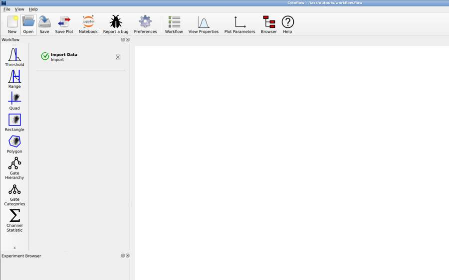
{"chunk_id":"afbf09","wall_time_seconds":5.00119094,"session_id":99857,"original_token_count":0,"output":""}text(await tools.clock__curr_time({}));
text(await tools.exec_command({cmd:"cu click 223 182\ncu screenshot /tmp/import.png","max_output_tokens":1000}));image((await tools.view_image({path:"/tmp/import.png"})).image_url);
Script completed Wall time 0.2 seconds Output:
{"current_time":"2026-11-05 00:09:36 UTC"}{"chunk_id":"e059e2","wall_time_seconds":0.00767774,"exit_code":0,"original_token_count":4,"output":"/tmp/import.png\n"}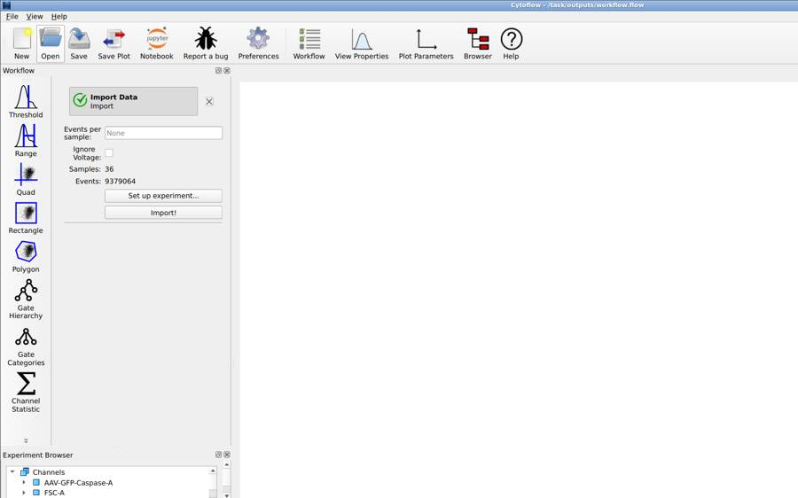
text(await tools.exec_command({cmd:"cu click 49 456\ncu screenshot /tmp/polygon.png","max_output_tokens":1000}));image((await tools.view_image({path:"/tmp/polygon.png"})).image_url);
text(await tools.write_stdin({session_id:99857,chars:"","yield_time_ms":1000,"max_output_tokens":1000}));
Script completed Wall time 0.2 seconds Output:
{"chunk_id":"95d388","wall_time_seconds":0.00811665,"exit_code":0,"original_token_count":5,"output":"/tmp/polygon.png\n"}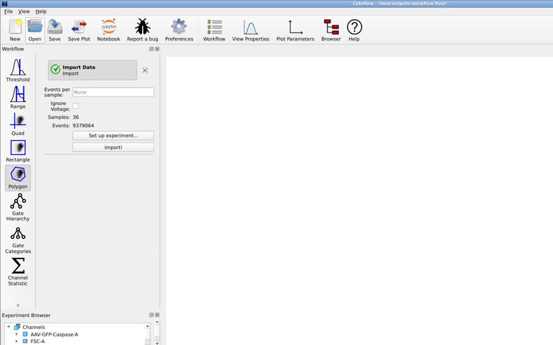
{"chunk_id":"16449f","wall_time_seconds":0.00000263,"exit_code":0,"original_token_count":4,"output":"/tmp/loaded.png\n"}text(await tools.exec_command({cmd:"sleep 2\ncu screenshot /tmp/polygon2.png","max_output_tokens":1000}));image((await tools.view_image({path:"/tmp/polygon2.png"})).image_url);
Script completed Wall time 2.1 seconds Output:
{"chunk_id":"2c7a05","wall_time_seconds":1.9034815699999998,"exit_code":0,"original_token_count":5,"output":"/tmp/polygon2.png\n"}
text(await tools.exec_command({cmd:"cu click 280 321\ncu type 'Cells'\ncu click 351 355\ncu screenshot /tmp/channels.png","max_output_tokens":1000}));image((await tools.view_image({path:"/tmp/channels.png"})).image_url);
Script completed Wall time 0.4 seconds Output:
{"chunk_id":"591cd7","wall_time_seconds":0.24505813,"exit_code":0,"original_token_count":5,"output":"/tmp/channels.png\n"}
text(await tools.exec_command({cmd:"cu click 224 377\ncu click 356 384\ncu screenshot /tmp/ychan.png","max_output_tokens":1000}));image((await tools.view_image({path:"/tmp/ychan.png"})).image_url);
Script completed Wall time 0.3 seconds Output:
{"chunk_id":"eb5ac1","wall_time_seconds":0.11346596,"exit_code":0,"original_token_count":4,"output":"/tmp/ychan.png\n"}
text(await tools.exec_command({cmd:"cu click 219 505\ncu click 653 74\nsleep 3\ncu screenshot /tmp/cellsview.png","max_output_tokens":1000}));image((await tools.view_image({path:"/tmp/cellsview.png"})).image_url);
Script completed Wall time 3.7 seconds Output:
{"chunk_id":"b7c4d7","wall_time_seconds":3.1491522,"exit_code":0,"original_token_count":5,"output":"/tmp/cellsview.png\n"}
text(await tools.exec_command({cmd:"sleep 3\ncu screenshot /tmp/view2.png","max_output_tokens":1000}));image((await tools.view_image({path:"/tmp/view2.png"})).image_url);
Script completed Wall time 3.1 seconds Output:
{"chunk_id":"968b92","wall_time_seconds":2.91119827,"exit_code":0,"original_token_count":4,"output":"/tmp/view2.png\n"}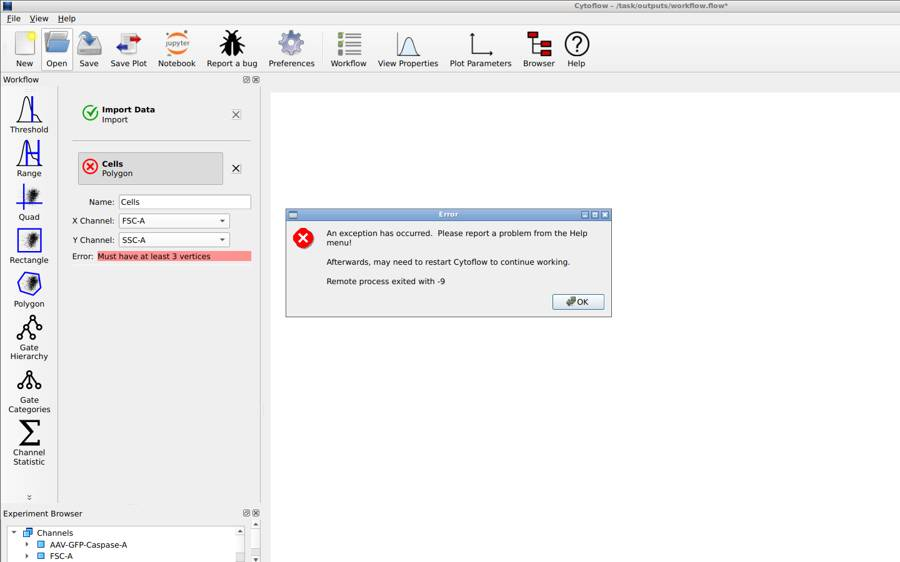
text(await tools.exec_command({cmd:"free -h\nps -eo pid,rss,args --sort=-rss | head -12\ncat /sys/fs/cgroup/memory.max\ncat /sys/fs/cgroup/memory.events","max_output_tokens":3000}));
Script completed
Wall time 0.0 seconds
Output:
{"chunk_id":"956572","wall_time_seconds":0.00000355,"exit_code":1,"original_token_count":2440,"output":" total used free shared buff/cache available\nMem: 7.8Gi 870Mi 6.6Gi 16Mi 525Mi 6.9Gi\nSwap: 0B 0B 0B\n PID RSS COMMAND\n 842 414248 /opt/cytoflow/cytoflow-1.3.2/cytoflow\n 7364 122688 /root/.nvm/versions/node/v22.23.4/lib/node_modules/@openai/codex/node_modules/@openai/codex-linux-x64/vendor/x86_64-unknown-linux-musl/bin/codex exec --dangerously-bypass-approvals-and-sandbox --skip-git-repo-check --model gpt-6-astra --json --enable unified_exec -c model_reasoning_effort=xhigh -- # Gate one plate: caspase-3/7 + Zombie NIR in GRN-KO iPSC neurons (36 wells) **Goal:** in Cytoflow, gate all 36 wells with one gate set, report counts for five fixed populations per well, and flag every well whose data should not be used. ## Start 1. Cytoflow 1.3.2 (on screen) is the analysis tool. All gating, counting and per-well inspection of event data happens in Cytoflow. 2. File → Open → `/task/inputs/start.flow` (enter the path with `cu paste`) → answer **Yes** to run it. Loading takes about 40 s. 3. The Import step is already configured. - One tube per FCS file. - Conditions `well`, `construct`, `stain`, `replicate`, `is_control`, `control_type`, taken from `plate_layout.csv`. - Do not rebuild it. - Leave `Events per sample` empty (full data). 4. Terminal (bash; Python 3 with numpy/pandas/matplotlib/openpyxl; no flow-cytometry libraries). - Use it to read inputs, tabulate tables exported from Cytoflow, and write deliverables. - Do not parse FCS event data in the terminal. ## Experiment | Item | Value | |---|---| | Cells | PGP1 GRN-knockout iPSC-derived neurons | | Treatment | AAV1 transduction at 1e4 vg/cell: 9 GRN RNAswap v2.0 constructs, AAV1-GFP, or no virus; triplicate wells | | Readout | 14 days after transduction; acquired 17-Apr-2023, unfixed, Attune NxT | | Staining | Zombie NIR 1:500, 10 min on adherent cells → Accutase detachment → CellEvent Caspase-3/7 detection reagent 1:1000 in flow staining buffer, 30 min, 37 °C | ## Inputs | Path | Content | |---|---| | `/task/inputs/raw/` | 36 FCS 3.1 files `Caspase_KO_RNAswap-rep2_caspase_Group_<well>.fcs`, wells A1–C12 | | `/task/inputs/plate_layout.csv` | `file, well, construct, stain, replicate, is_control, control_type` | | `/task/inputs/gating_strategy.md` | The scientist's gating strategy (description, no coordinates) | | `/task/inputs/start.flow` | Cytoflow workflow with the Import step configured | ## Channels | Detector | Name shown in Cytoflow | Dye / signal | Marks | |---|---|---|---| | FSC-A, FSC-H, FSC-W | FSC-A, FSC-H, FSC-W | forward scatter | cell size | | SSC-A, SSC-H, SSC-W | SSC-A, SSC-H, SSC-W | side scatter | granularity; SSC-H vs SSC-A for singlets | | BL1-A | `AAV-GFP-Caspase-A` | CellEvent Caspase-3/7 Green | caspase-3/7-active (apoptotic) cells | | RL3-A | `LiveDead-Zombie NIR-A` | Zombie NIR | dead / membrane-compromised cells (bright) | | Time | `Time` | acquisition clock | — | - **BL1-A name is misleading.** `AAV-GFP-Caspase-A` is a reused instrument-template name. In this assay BL1-A is the CellEvent caspase-3/7 detector. - **GFP wells.** In the AAV1-GFP wells (C4–C6), GFP fluorescence is collected in the same detector, BL1-A. - **Punctuation.** If Cytoflow shows a name with punctuation replaced (e.g. underscores), it is the same channel. - No other fluorescence parameters were recorded. ## Plate layout Samples. All are stained with Zombie NIR + CellEvent (`stain` = zombie_caspase). `replicate` is 1/2/3 from left to right. | Wells | construct | |---|---| | A1–A3 | RSV | | A4–A6 | hSyn | | A7–A9 | 9523 | | A10–A12 | 3945 | | B1–B3 | 9421 | | B4–B6 | 3503 | | B7–B9 | 8820 | | B10–B12 | 8790 | | C1–C3 | 3945_3503 (3945 + 3503 combination) | Controls (`is_control` = yes): | Wells | Content | control_type | Use | |---|---|---|---| | C4–C6 | AAV1-GFP, both dyes | transduction_gfp | transduction reference; BL1-A carries GFP + caspase signal | | C7–C9 | no virus, both dyes | untreated_no_virus | untransduced, fully stained reference | | C10 | no virus, no dyes | unstained | unstained position on BL1-A and RL3-A | | C11 | no virus, Zombie NIR only | viability_dye_only | Zombie NIR negative vs bright on RL3-A | | C12 | no virus, CellEvent only | caspase_dye_only | caspase-negative vs positive on BL1-A | ## Populations (report exactly these, in this order) | # | population | parent_population | Definition | |---|---|---|---| | 1 | `Cells` | `All_events` | cells on FSC-A × SSC-A, debris excluded | | 2 | `Single_Cells` | `Cells` | singlets on SSC-H × SSC-A | | 3 | `Live` | `Single_Cells` | Zombie NIR-negative (RL3-A low) | | 4 | `Caspase_pos` | `Live` | CellEvent-positive live cells (early apoptotic) | | 5 | `Late_apoptosis` | `Single_Cells` | CellEvent-positive and Zombie NIR-bright | Gate shapes and channels are given in `gating_strategy.md`. ## Gating rules - **One operation per population.** Each population is one Cytoflow gate operation (Polygon, Rectangle, Range or Threshold). Its name must be exactly the population name above. - **Hierarchy.** - Cytoflow evaluates every gate on all events. - A population's membership is its own gate AND all its ancestors' gates. - Draw each gate with the view subset set to its parent chain. - Compute counts with the full ancestor chain. - **One gate set for all 36 wells.** No per-well gates. - **Raw (uncompensated) data only.** Do not add Bleedthrough, Autofluorescence or any other operation that changes channel values. - **FlowClean.** It may be used for inspection only. Do not use its output to define or filter any reported population. - **Getting counts per well.** - Use Channel Statistic (function Count, grouped by `well`, with the appropriate subset) → Table view → export CSV. - Intermediate ex
… [3,871 more characters not shown]text(await tools.exec_command({cmd:"cat /proc/self/cgroup\nrg --files /sys/fs/cgroup | head -30\nls -lh /task/outputs/workflow.flow\ncu click 928 484\ncu key ctrl+s\ncu screenshot /tmp/crashsave.png","max_output_tokens":2000}));image((await tools.view_image({path:"/tmp/crashsave.png"})).image_url);
Script completed Wall time 0.2 seconds Output:
{"chunk_id":"53a82d","wall_time_seconds":0.04296624,"exit_code":0,"original_token_count":209,"output":"0::/\n/sys/fs/cgroup/cpu.pressure\n/sys/fs/cgroup/memory.stat\n/sys/fs/cgroup/memory.pressure\n/sys/fs/cgroup/cpu.stat\n/sys/fs/cgroup/cgroup.max.descendants\n/sys/fs/cgroup/misc.peak\n/sys/fs/cgroup/misc.current\n/sys/fs/cgroup/cpuset.cpus.isolated\n/sys/fs/cgroup/cgroup.procs\n/sys/fs/cgroup/io.pressure\n/sys/fs/cgroup/io.stat\n/sys/fs/cgroup/cgroup.controllers\n/sys/fs/cgroup/cgroup.pressure\n/sys/fs/cgroup/cpuset.cpus.effective\n/sys/fs/cgroup/cgroup.max.depth\n/sys/fs/cgroup/memory.numa_stat\n/sys/fs/cgroup/memory.reclaim\n/sys/fs/cgroup/cgroup.threads\n/sys/fs/cgroup/cgroup.subtree_control\n/sys/fs/cgroup/cpu.stat.local\n/sys/fs/cgroup/cpuset.mems.effective\n/sys/fs/cgroup/misc.capacity\n/sys/fs/cgroup/cgroup.stat\n/sys/fs/cgroup/memory.zswap.writeback\n-rw-rw-r-- 1 cfapp task 20K Nov 5 00:09 /task/outputs/workflow.flow\n/tmp/crashsave.png\n"}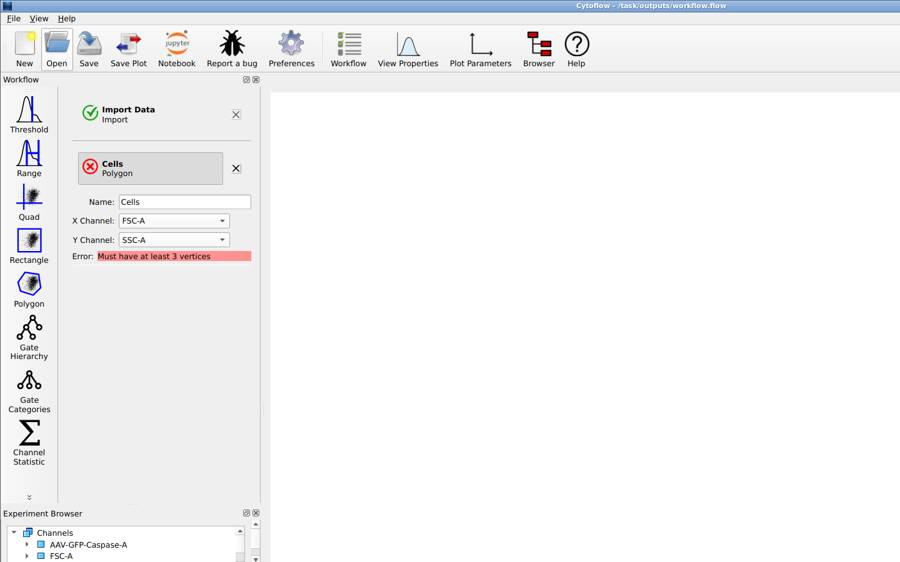
text(await tools.exec_command({cmd:"id\ncu key alt+F4\nsleep 1\n/opt/cytoflow/cytoflow-1.3.2/cytoflow /task/outputs/workflow.flow > /task/outputs/work/cytoflow.log 2>&1","yield_time_ms":1000,"max_output_tokens":1000}));
Script completed
Wall time 1.2 seconds
Output:
{"chunk_id":"f66f24","wall_time_seconds":1.00121726,"session_id":41199,"original_token_count":10,"output":"uid=0(root) gid=0(root) groups=0(root)\n"}text(await tools.exec_command({cmd:"cu screenshot /tmp/restart.png\ntail -15 /task/outputs/work/cytoflow.log","max_output_tokens":2000}));image((await tools.view_image({path:"/tmp/restart.png"})).image_url);
Script completed Wall time 0.1 seconds Output:
{"chunk_id":"2b323f","wall_time_seconds":0.00000443,"exit_code":0,"original_token_count":5,"output":"/tmp/restart.png\n"}
text(await tools.write_stdin({session_id:41199,chars:"","yield_time_ms":1000,"max_output_tokens":2000}));
text(await tools.exec_command({cmd:"tail -20 /task/outputs/work/cytoflow.log\ncu screenshot /tmp/restart2.png","max_output_tokens":2000}));image((await tools.view_image({path:"/tmp/restart2.png"})).image_url);
Script completed Wall time 1.2 seconds Output:
{"chunk_id":"3a14b9","wall_time_seconds":1.06637951,"exit_code":1,"original_token_count":0,"output":""}{"chunk_id":"946abb","wall_time_seconds":0.00000318,"exit_code":0,"original_token_count":113,"output":"QStandardPaths: XDG_RUNTIME_DIR not set, defaulting to '/tmp/runtime-root'\nQXcbIntegration: Cannot create platform OpenGL context, neither GLX nor EGL are enabled\ntraits/etsconfig/etsconfig.py:425: UserWarning: Environment variable \"HOME\" not set, setting home directory to /tmp\n[7632:7632:1105/001025.035023:ERROR:zygote_host_impl_linux.cc(90)] Running as root without --no-sandbox is not supported. See https://crbug.com/638180.\n/tmp/restart2.png\n"}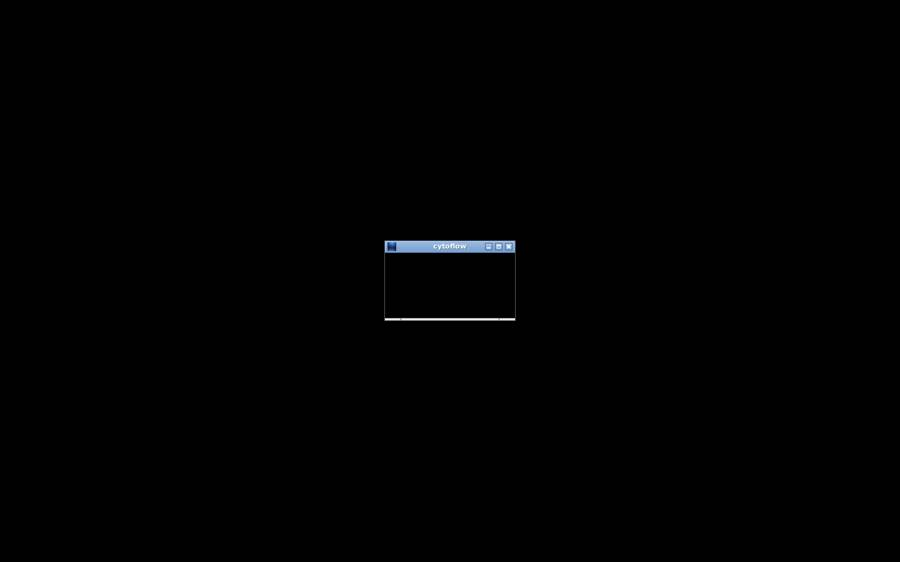
text(await tools.exec_command({cmd:"runuser -u cfapp -- /opt/cytoflow/cytoflow-1.3.2/cytoflow > /task/outputs/work/cytoflow.log 2>&1","yield_time_ms":1000,"max_output_tokens":1000}));
Script completed
Wall time 1.2 seconds
Output:
{"chunk_id":"e54fea","wall_time_seconds":1.00109217,"session_id":10649,"original_token_count":0,"output":""}text(await tools.exec_command({cmd:"sleep 4\ncu screenshot /tmp/restart3.png\ntail -10 /task/outputs/work/cytoflow.log","max_output_tokens":2000}));image((await tools.view_image({path:"/tmp/restart3.png"})).image_url);
Script completed Wall time 4.1 seconds Output:
{"chunk_id":"213c3d","wall_time_seconds":3.90468254,"exit_code":0,"original_token_count":46,"output":"/tmp/restart3.png\nQStandardPaths: XDG_RUNTIME_DIR not set, defaulting to '/tmp/runtime-cfapp'\nQXcbIntegration: Cannot create platform OpenGL context, neither GLX nor EGL are enabled\n"}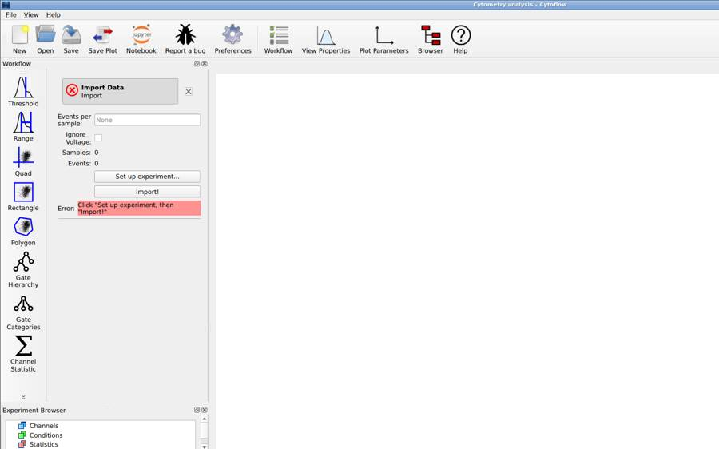
text(await tools.exec_command({cmd:"cu click 61 30\ncu screenshot /tmp/viewmenu.png","max_output_tokens":1000}));image((await tools.view_image({path:"/tmp/viewmenu.png"})).image_url);
Script completed Wall time 0.2 seconds Output:
{"chunk_id":"175648","wall_time_seconds":0.00812673,"exit_code":0,"original_token_count":5,"output":"/tmp/viewmenu.png\n"}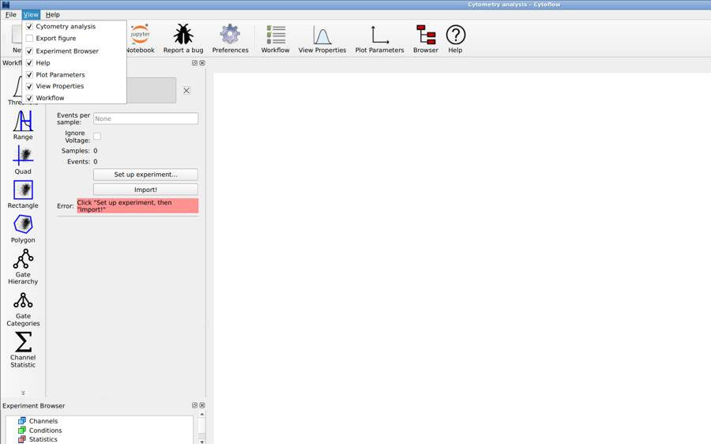
text(await tools.exec_command({cmd:"xwininfo -root -tree | head -25","max_output_tokens":3000}));
Script completed
Wall time 0.0 seconds
Output:
{"chunk_id":"fa2048","wall_time_seconds":0.0000037,"exit_code":0,"original_token_count":273,"output":"\nxwininfo: Window id: 0x21f (the root window) (has no name)\n\n Root window id: 0x21f (the root window) (has no name)\n Parent window id: 0x0 (none)\n 18 children:\n 0xe0000e \"cytoflow\": (\"cytoflow\" \"cytoflow\") 213x170+44+41 +44+41\n 0xe00008 \"cytoflow\": () 1x1+0+0 +0+0\n 0xe00004 \"Qt Selection Owner for cytoflow\": () 3x3+0+0 +0+0\n 0x1000008 \"cytoflow\": () 1x1+0+0 +0+0\n 0x1000004 \"Qt Selection Owner for cytoflow\": () 3x3+0+0 +0+0\n 0xc0000e \"Openbox\": (\"\" (none)) 1x1+-100+-100 +-100+-100\n 0xc00062 (has no name): () 1x1+0+0 +0+0\n 1 child:\n 0xc00063 (has no name): () 1x1+0+0 +1+1\n 0xc00060 (has no name): () 1x1+0+0 +0+0\n 1 child:\n 0xc00061 (has no name): () 1x1+0+0 +1+1\n 0xc0005d (has no name): () 1x1+0+0 +0+0\n 1 child:\n 0xc0005e (has no name): () 1x1+0+0 +1+1\n 0xc00059 (has no name): (\"OPENBOX_FOCUS_CYCLE_POPUP\" \"OPENBOX_FOCUS_CYCLE_POPUP\") 1x1+0+0 +0+0\n 3 children:\n 0xc0005c (has no name): () 1x1+0+0 +1+1\n 0xc0005b (has no name): () 1x1+0+0 +1+1\n"}text(await tools.exec_command({cmd:"xwininfo -root -tree | tail -15\ncu key Escape\ncu click 62 30\ncu click 131 128\ncu click 62 30\ncu click 132 151\ncu screenshot /tmp/layout.png","max_output_tokens":2000}));image((await tools.view_image({path:"/tmp/layout.png"})).image_url);
Script completed Wall time 0.5 seconds Output:
{"chunk_id":"f72c15","wall_time_seconds":0.3435446,"exit_code":0,"original_token_count":158,"output":" 0xc0056f (has no name): () 1x1+0+0 +0+0\n 2 children:\n 0xc00571 (has no name): () 1x1+0+0 +0+0\n 0xc00570 (has no name): () 1x1+0+0 +0+0\n 0xc0056e (has no name): () 1x1+0+0 +0+0\n 1 child:\n 0xc00573 (has no name): () 1x1+0+0 +0+0\n 0xc0056d (has no name): () 1x1+0+0 +0+0\n 0xc0056c (has no name): () 1x1+0+0 +0+0\n 1 child:\n 0xc00572 (has no name): () 1x1+0+0 +0+0\n 0xc0056a (has no name): () 2082x1171+1+20 +1+20\n 1 child:\n 0xc0056b (has no name): () 2082x1171+0+0 +1+20\n\n/tmp/layout.png\n"}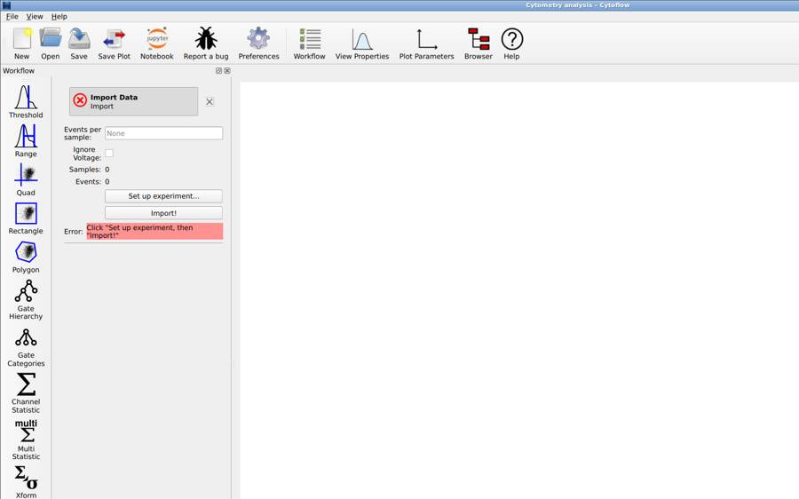
text(await tools.exec_command({cmd:"cu click 752 9 double\ncu screenshot /tmp/max.png","max_output_tokens":1000}));image((await tools.view_image({path:"/tmp/max.png"})).image_url);
Script completed Wall time 0.3 seconds Output:
{"chunk_id":"a66153","wall_time_seconds":0.1128733,"exit_code":0,"original_token_count":4,"output":"/tmp/max.png\n"}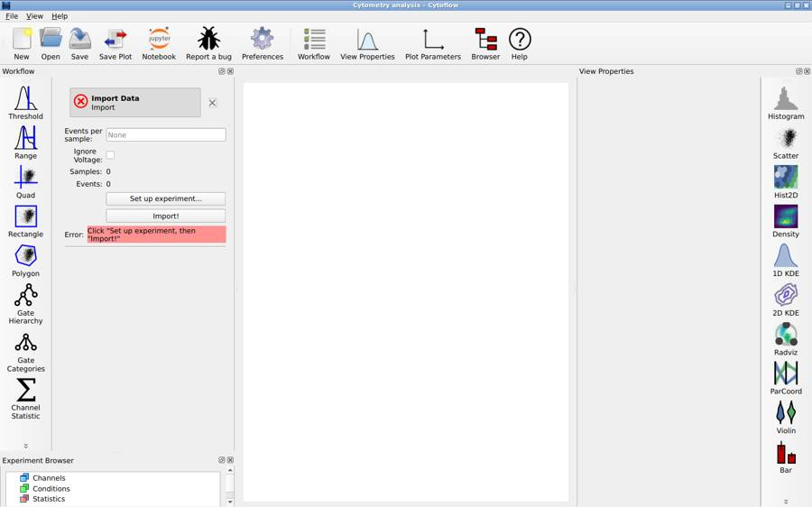
text(await tools.exec_command({cmd:"cu key ctrl+o\ncu paste '/task/inputs/start.flow'\ncu key Return\nsleep 1\ncu screenshot /tmp/loadagain.png","max_output_tokens":1000}));image((await tools.view_image({path:"/tmp/loadagain.png"})).image_url);
Script completed Wall time 2.5 seconds Output:
{"chunk_id":"829f3d","wall_time_seconds":2.28092626,"exit_code":0,"original_token_count":5,"output":"/tmp/loadagain.png\n"}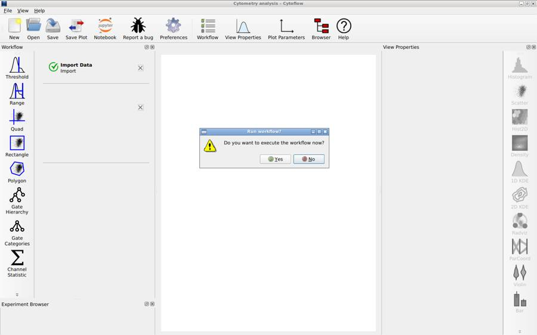
text(await tools.exec_command({cmd:"cu click 736 426\nsleep 35\ncu screenshot /tmp/loadedagain.png","yield_time_ms":1000,"max_output_tokens":1000}));
Script completed
Wall time 1.2 seconds
Output:
{"chunk_id":"f128d5","wall_time_seconds":1.0004721,"session_id":18586,"original_token_count":0,"output":""}text(await tools.exec_command({cmd:"df -h /tmp\nps -eo pid,rss,comm --sort=-rss | head -8","max_output_tokens":1000}));
Script completed
Wall time 0.1 seconds
Output:
{"chunk_id":"8068a8","wall_time_seconds":0.00000408,"exit_code":0,"original_token_count":69,"output":"Filesystem Size Used Avail Use% Mounted on\n/dev/root 504G 3.6G 501G 1% /\n PID RSS COMMAND\n 7794 1974280 cytoflow\n 7781 524928 cytoflow\n 7639 521984 cytoflow\n 7670 314456 cytoflow\n 7364 128928 codex\n 7755 72076 QtWebEngineProc\n 7860 71948 QtWebEngineProc\n"}text(await tools.exec_command({cmd:"ps -eo user,pid,ppid,rss,comm | rg 'cytoflow|QtWebEngine'\ncu screenshot /tmp/loadprogress.png","max_output_tokens":2000}));image((await tools.view_image({path:"/tmp/loadprogress.png"})).image_url);
Script completed Wall time 0.1 seconds Output:
{"chunk_id":"fe0901","wall_time_seconds":0.00000342,"exit_code":0,"original_token_count":206,"output":"cfapp 836 835 2008 start-cytoflow\ncfapp 860 1 0 cytoflow\ncfapp 889 1 0 QtWebEngineProc\ncfapp 910 1 0 QtWebEngineProc\ncfapp 7639 836 521984 cytoflow\nroot 7658 1 0 cytoflow\nroot 7660 1 0 cytoflow\ncfapp 7668 7639 39336 cytoflow\ncfapp 7670 7639 314456 cytoflow\ncfapp 7717 7639 47688 QtWebEngineProc\ncfapp 7738 7639 47884 QtWebEngineProc\ncfapp 7740 7738 10936 QtWebEngineProc\ncfapp 7755 7740 72076 QtWebEngineProc\ncfapp 7781 7780 526684 cytoflow\ncfapp 7792 7781 39428 cytoflow\ncfapp 7794 7781 1792324 cytoflow\ncfapp 7820 7781 47708 QtWebEngineProc\ncfapp 7841 7781 47836 QtWebEngineProc\ncfapp 7843 7841 10940 QtWebEngineProc\ncfapp 7860 7843 71948 QtWebEngineProc\n/tmp/loadprogress.png\n"}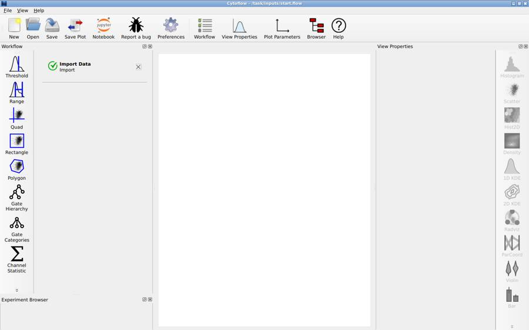
text(await tools.exec_command({cmd:"kill 836 7639 7668 7670\nfallocate -l 12G /tmp/cytoflow.swap\nchmod 600 /tmp/cytoflow.swap\nmkswap /tmp/cytoflow.swap\nswapon /tmp/cytoflow.swap","max_output_tokens":2000}));
Script completed
Wall time 0.1 seconds
Output:
{"chunk_id":"56ae54","wall_time_seconds":0.00000418,"exit_code":0,"original_token_count":30,"output":"Setting up swapspace version 1, size = 12 GiB (12884897792 bytes)\nno label, UUID=4131f451-6fc2-4c0c-9c72-db1e153a7a00\n"}text(await tools.exec_command({cmd:"cu click 216 178\ncu click 46 454\nsleep 2\ncu screenshot /tmp/polynew.png","max_output_tokens":1000}));image((await tools.view_image({path:"/tmp/polynew.png"})).image_url);
Script completed Wall time 2.3 seconds Output:
{"chunk_id":"e0870a","wall_time_seconds":2.12472574,"exit_code":0,"original_token_count":5,"output":"/tmp/polynew.png\n"}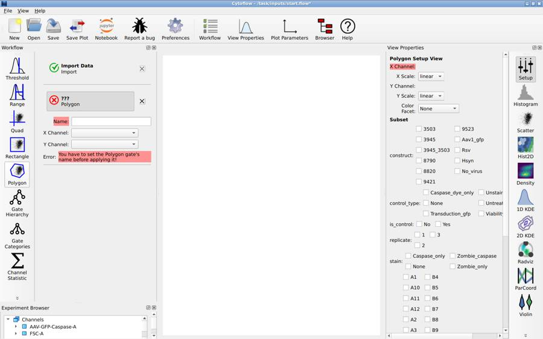
text(await tools.exec_command({cmd:"cu click 1076 735\ncu click 272 322\ncu type 'Cells'\ncu click 353 353\ncu key f\ncu key Return\ncu click 353 383\ncu key s\ncu key Return\nsleep 2\ncu screenshot /tmp/cellsA1.png","max_output_tokens":1000}));image((await tools.view_image({path:"/tmp/cellsA1.png"})).image_url);
Script completed Wall time 2.7 seconds Output:
{"chunk_id":"f0088a","wall_time_seconds":2.53168623,"exit_code":0,"original_token_count":5,"output":"/tmp/cellsA1.png\n"}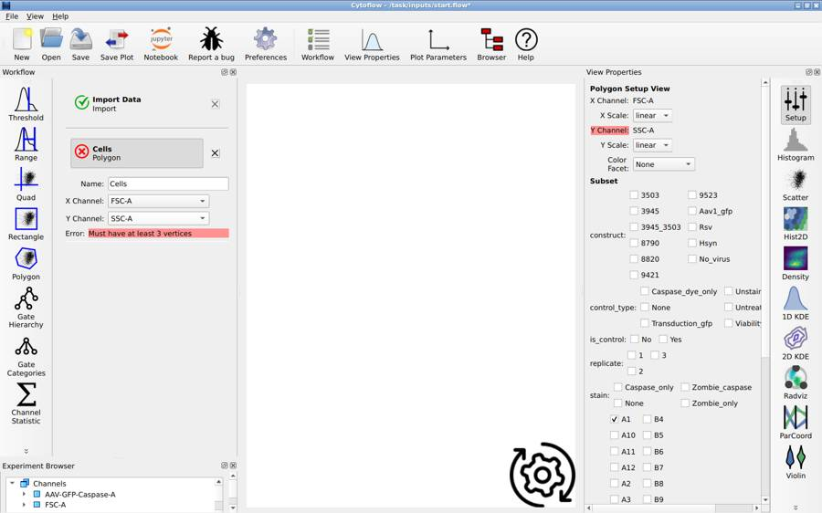
text(await tools.exec_command({cmd:"sleep 4\ncu screenshot /tmp/cellsA1b.png","max_output_tokens":1000}));image((await tools.view_image({path:"/tmp/cellsA1b.png"})).image_url);
Script completed Wall time 4.1 seconds Output:
{"chunk_id":"5d1b21","wall_time_seconds":3.92200378,"exit_code":0,"original_token_count":5,"output":"/tmp/cellsA1b.png\n"}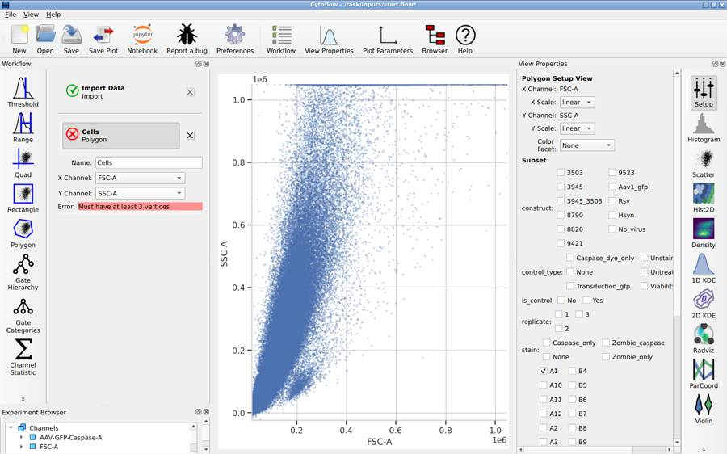
text(await tools.exec_command({cmd:"cu click 1169 201\ncu screenshot /tmp/scale.png","max_output_tokens":1000}));image((await tools.view_image({path:"/tmp/scale.png"})).image_url);
Script completed Wall time 0.2 seconds Output:
{"chunk_id":"46d5ce","wall_time_seconds":0.0260654,"exit_code":0,"original_token_count":4,"output":"/tmp/scale.png\n"}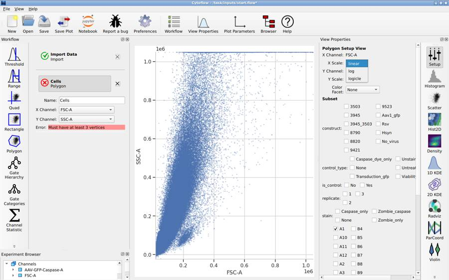
text(await tools.exec_command({cmd:"cu click 1141 253\ncu click 1168 254\ncu key End\ncu key Return\nsleep 4\ncu screenshot /tmp/cellslog.png","max_output_tokens":1000}));image((await tools.view_image({path:"/tmp/cellslog.png"})).image_url);
Script completed Wall time 4.3 seconds Output:
{"chunk_id":"b68853","wall_time_seconds":4.16809161,"exit_code":0,"original_token_count":5,"output":"/tmp/cellslog.png\n"}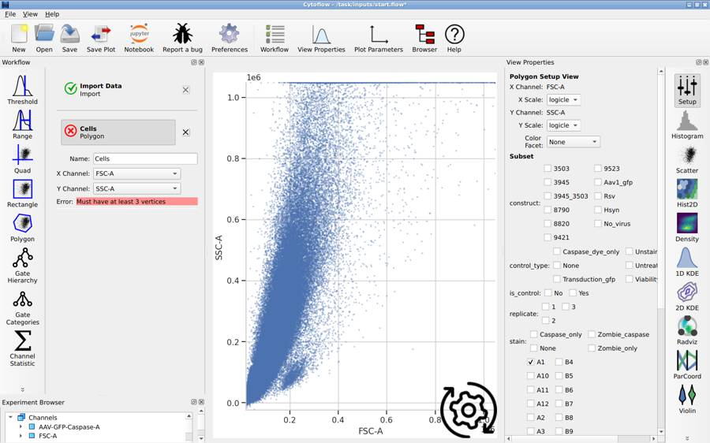
text(await tools.exec_command({cmd:"sleep 5\ncu screenshot /tmp/cellslog2.png","max_output_tokens":1000}));image((await tools.view_image({path:"/tmp/cellslog2.png"})).image_url);
Script completed Wall time 5.1 seconds Output:
{"chunk_id":"a4fb03","wall_time_seconds":4.92055825,"exit_code":0,"original_token_count":5,"output":"/tmp/cellslog2.png\n"}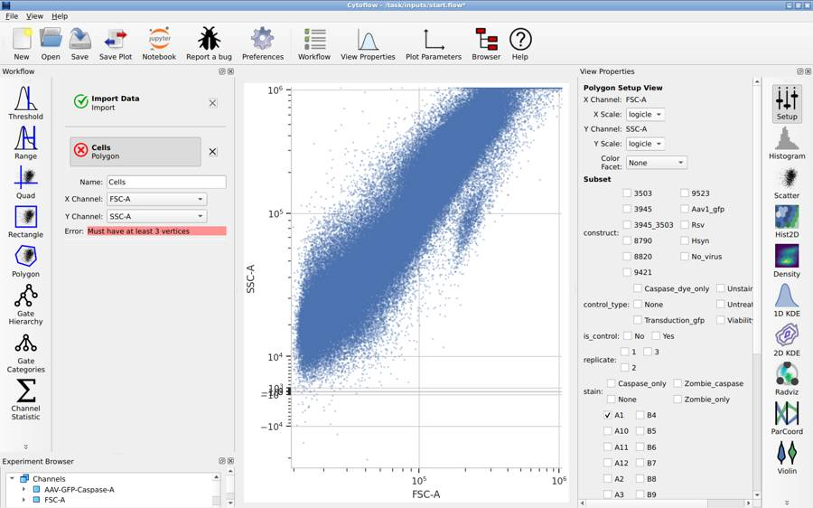
text(await tools.exec_command({cmd:"cu click 674 560\ncu click 710 635\ncu click 988 635\ncu click 992 157\ncu click 740 157\ncu click 675 340\ncu click 674 560 double\nsleep 3\ncu key ctrl+e\ncu paste '/task/outputs/workflow.flow'\ncu key Return\nsleep 1\ncu screenshot /tmp/cellsgate.png","max_output_tokens":1000}));image((await tools.view_image({path:"/tmp/cellsgate.png"})).image_url);
Script completed Wall time 6.3 seconds Output:
{"chunk_id":"d462a6","wall_time_seconds":6.13590378,"exit_code":0,"original_token_count":5,"output":"/tmp/cellsgate.png\n"}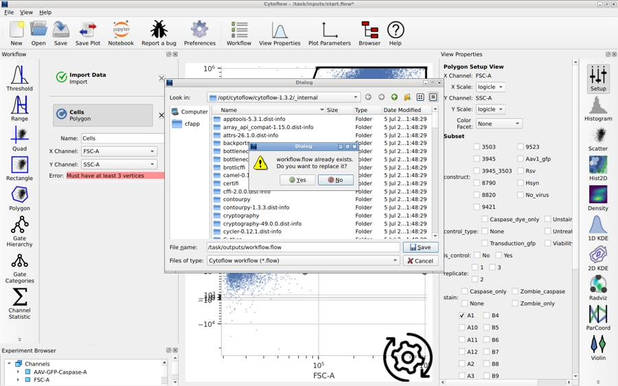
text(await tools.exec_command({cmd:"cu click 696 419\nsleep 5\ncu screenshot /tmp/cellsgate2.png","max_output_tokens":1000}));image((await tools.view_image({path:"/tmp/cellsgate2.png"})).image_url);
Script completed Wall time 5.2 seconds Output:
{"chunk_id":"ad3c0a","wall_time_seconds":5.02769376,"exit_code":0,"original_token_count":5,"output":"/tmp/cellsgate2.png\n"}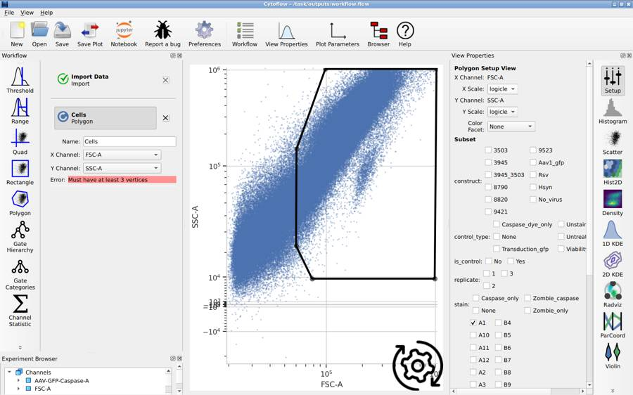
text(await tools.exec_command({cmd:"tail -20 /task/outputs/work/cytoflow.log\nfree -h\ncu click 46 455\nsleep 2\ncu screenshot /tmp/singletnew.png","max_output_tokens":2000}));image((await tools.view_image({path:"/tmp/singletnew.png"})).image_url);
Script completed Wall time 2.2 seconds Output:
{"chunk_id":"fdd4dd","wall_time_seconds":2.029159,"exit_code":0,"original_token_count":98,"output":"QStandardPaths: XDG_RUNTIME_DIR not set, defaulting to '/tmp/runtime-cfapp'\nQXcbIntegration: Cannot create platform OpenGL context, neither GLX nor EGL are enabled\n total used free shared buff/cache available\nMem: 7.8Gi 2.7Gi 4.1Gi 15Mi 1.3Gi 5.1Gi\nSwap: 11Gi 0B 11Gi\n/tmp/singletnew.png\n"}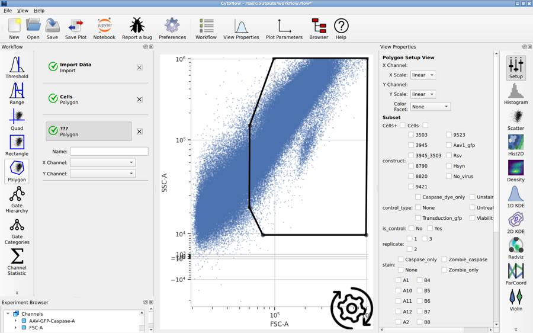
text(await tools.exec_command({cmd:"cu click 1088 338\ncu click 1076 758\ncu click 278 409\ncu type 'Single_Cells'\ncu click 353 438\ncu key s\ncu key s\ncu key Return\ncu click 353 470\ncu key s\ncu key Return\nsleep 7\ncu screenshot /tmp/singlets.png","max_output_tokens":1000}));image((await tools.view_image({path:"/tmp/singlets.png"})).image_url);
Script completed Wall time 8.0 seconds Output:
{"chunk_id":"4e043b","wall_time_seconds":7.83713336,"exit_code":0,"original_token_count":5,"output":"/tmp/singlets.png\n"}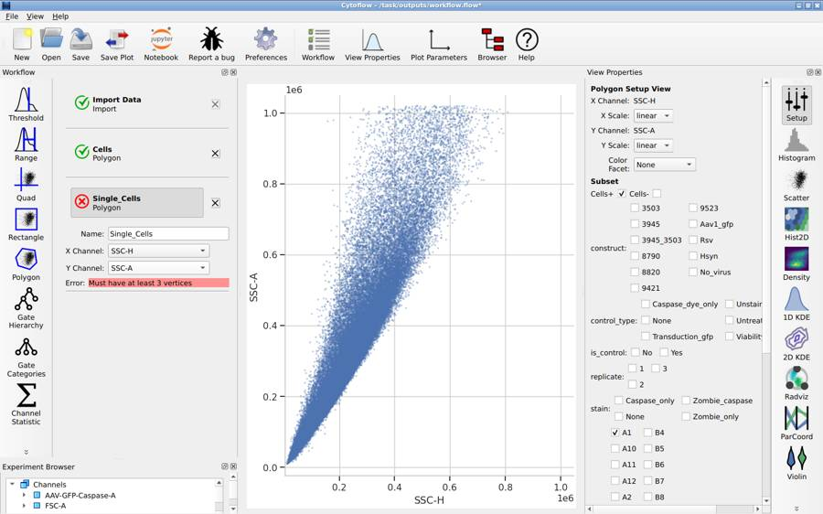
text(await tools.exec_command({cmd:"cu click 504 814\ncu click 990 200\ncu click 990 185\ncu click 790 185\ncu click 546 710\ncu click 504 798\ncu click 504 814 double\nsleep 6\ncu key ctrl+s\ncu click 47 245\nsleep 2\ncu screenshot /tmp/liverange.png","max_output_tokens":1000}));image((await tools.view_image({path:"/tmp/liverange.png"})).image_url);
Script completed Wall time 9.1 seconds Output:
{"chunk_id":"79427c","wall_time_seconds":8.916045589,"exit_code":0,"original_token_count":5,"output":"/tmp/liverange.png\n"}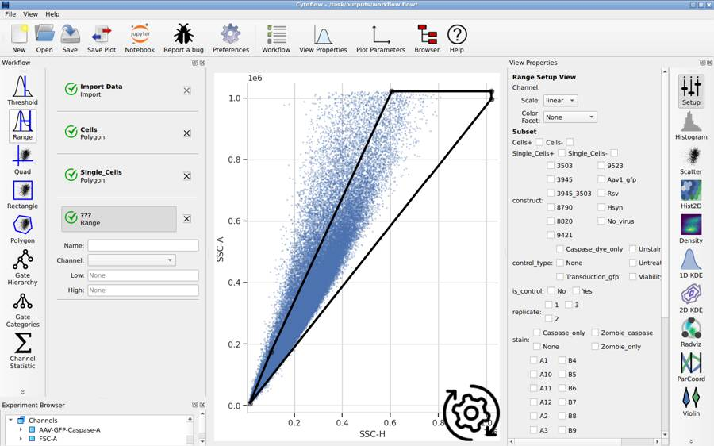
text(await tools.exec_command({cmd:"cu click 1088 286\ncu click 1133 309\ncu click 1277 557\ncu click 274 495\ncu type 'Live'\ncu click 1153 203\ncu key End\ncu key Return\ncu click 341 524\ncu key l\ncu key Return\nsleep 7\ncu screenshot /tmp/livecontrol.png","max_output_tokens":1000}));image((await tools.view_image({path:"/tmp/livecontrol.png"})).image_url);
Script completed Wall time 7.9 seconds Output:
{"chunk_id":"222ce7","wall_time_seconds":7.72247103,"exit_code":0,"original_token_count":6,"output":"/tmp/livecontrol.png\n"}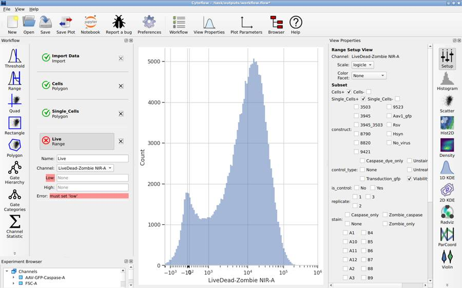
text(await tools.exec_command({cmd:"cu click 1277 557\ncu click 1277 501\nsleep 6\ncu screenshot /tmp/unstainedRL3.png","max_output_tokens":1000}));image((await tools.view_image({path:"/tmp/unstainedRL3.png"})).image_url);
Script completed Wall time 6.3 seconds Output:
{"chunk_id":"2d38f7","wall_time_seconds":6.12659284,"exit_code":0,"original_token_count":6,"output":"/tmp/unstainedRL3.png\n"}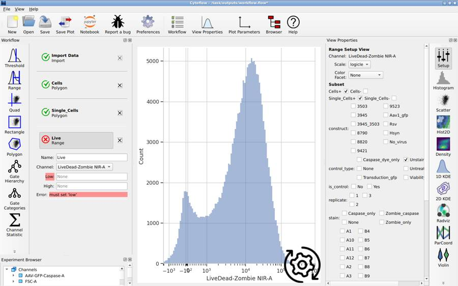
text(await tools.exec_command({cmd:"sleep 5\ncu screenshot /tmp/unstainedRL3b.png","max_output_tokens":1000}));image((await tools.view_image({path:"/tmp/unstainedRL3b.png"})).image_url);
text(await tools.clock__curr_time({}));
Script completed Wall time 5.1 seconds Output:
{"chunk_id":"5456e9","wall_time_seconds":4.91994712,"exit_code":0,"original_token_count":6,"output":"/tmp/unstainedRL3b.png\n"}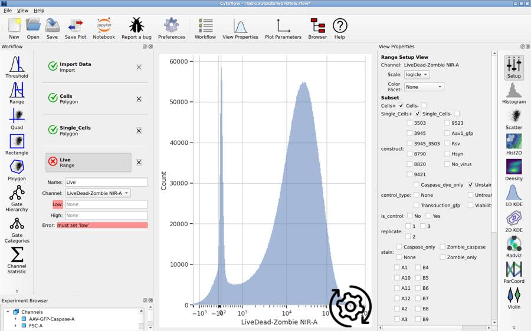
{"current_time":"2026-11-05 00:14:16 UTC"}text(await tools.exec_command({cmd:"sleep 8\ncu screenshot /tmp/unstainedRL3c.png","max_output_tokens":1000}));image((await tools.view_image({path:"/tmp/unstainedRL3c.png"})).image_url);
Script completed Wall time 8.1 seconds Output:
{"chunk_id":"c77327","wall_time_seconds":7.9136215199999995,"exit_code":0,"original_token_count":6,"output":"/tmp/unstainedRL3c.png\n"}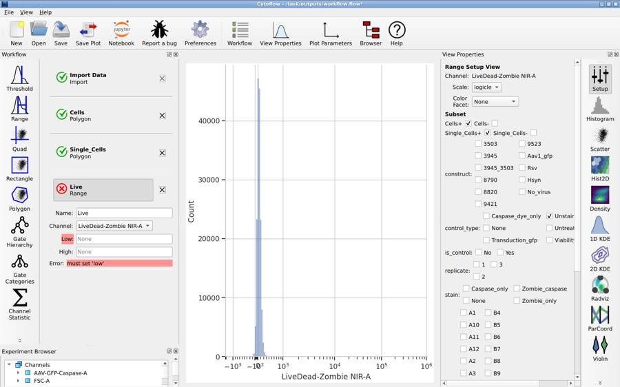
text(await tools.exec_command({cmd:"cu click 275 555\ncu key ctrl+a\ncu type '-1000000'\ncu key Tab\ncu click 275 585\ncu key ctrl+a\ncu type '1000'\ncu key Tab\nsleep 7\ncu click 47 245\nsleep 2\ncu screenshot /tmp/caspasenew.png","max_output_tokens":1000}));image((await tools.view_image({path:"/tmp/caspasenew.png"})).image_url);
Script completed Wall time 9.8 seconds Output:
{"chunk_id":"d16733","wall_time_seconds":9.631151499,"exit_code":0,"original_token_count":5,"output":"/tmp/caspasenew.png\n"}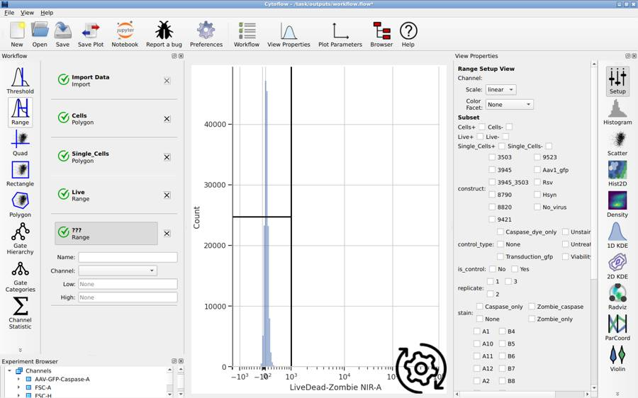
text(await tools.exec_command({cmd:"cu click 1088 287\ncu click 1084 309\ncu click 1133 330\ncu click 1129 524\ncu click 273 581\ncu type 'Caspase_pos'\ncu click 1153 202\ncu key End\ncu key Return\ncu click 342 611\ncu key Home\ncu key Return\nsleep 9\ncu screenshot /tmp/caspasecontrol.png","max_output_tokens":1000}));image((await tools.view_image({path:"/tmp/caspasecontrol.png"})).image_url);
Script completed Wall time 10.2 seconds Output:
{"chunk_id":"b5d2d8","wall_time_seconds":9.99991721,"exit_code":0,"original_token_count":6,"output":"/tmp/caspasecontrol.png\n"}text(await tools.exec_command({cmd:"tail -60 /task/outputs/work/cytoflow.log\nps -eo user,pid,ppid,rss,comm | rg 'cytoflow|Xvfb|openbox'\nls -l /task/outputs/workflow.flow","max_output_tokens":3000}));
text(await tools.write_stdin({session_id:10649,chars:"","yield_time_ms":1000,"max_output_tokens":1000}));
Script completed
Wall time 0.0 seconds
Output:
{"chunk_id":"88a9b6","wall_time_seconds":0.0000037,"exit_code":0,"original_token_count":2494,"output":" File \"threading.py\", line 655 in wait\n File \"cytoflowgui/matplotlib_backend_local.py\", line 193 in send_to_remote\n File \"threading.py\", line 1012 in run\n File \"threading.py\", line 1075 in _bootstrap_inner\n File \"threading.py\", line 1032 in _bootstrap\n\nCurrent thread 0x00007fc067fff6c0 (most recent call first):\n File \"cytoflowgui/matplotlib_backend_local.py\", line 169 in listen_for_remote\n File \"threading.py\", line 1012 in run\n File \"threading.py\", line 1075 in _bootstrap_inner\n File \"threading.py\", line 1032 in _bootstrap\n\nThread 0x00007fc0749fe6c0 (most recent call first):\n File \"threading.py\", line 355 in wait\n File \"queue.py\", line 171 in get\n File \"cytoflowgui/workflow/workflow.py\", line 362 in send_main\n File \"threading.py\", line 1012 in run\n File \"threading.py\", line 1075 in _bootstrap_inner\n File \"threading.py\", line 1032 in _bootstrap\n\nThread 0x00007fc0751ff6c0 (most recent call first):\n File \"selectors.py\", line 415 in select\n File \"multiprocessing/connection.py\", line 1136 in wait\n File \"multiprocessing/connection.py\", line 440 in _poll\n File \"multiprocessing/connection.py\", line 257 in poll\n File \"cytoflowgui/workflow/workflow.py\", line 291 in recv_main\n File \"threading.py\", line 1012 in run\n File \"threading.py\", line 1075 in _bootstrap_inner\n File \"threading.py\", line 1032 in _bootstrap\n\nThread 0x00007fc083c2b6c0 (most recent call first):\n File \"multiprocessing/popen_fork.py\", line 27 in poll\n File \"multiprocessing/popen_fork.py\", line 43 in wait\n File \"multiprocessing/process.py\", line 149 in join\n File \"run.py\", line 340 in monitor_remote_process\n File \"threading.py\", line 1012 in run\n File \"threading.py\", line 1075 in _bootstrap_inner\n File \"threading.py\", line 1032 in _bootstrap\n\nThread 0x00007fc08442c6c0 (most recent call first):\n File \"multiprocessing/connection.py\", line 395 in _recv\n File \"multiprocessing/connection.py\", line 430 in _recv_bytes\n File \"multiprocessing/connection.py\", line 216 in recv_bytes\n File \"multiprocessing/queues.py\", line 103 in get\n File \"logging/handlers.py\", line 1542 in dequeue\n File \"logging/handlers.py\", line 1593 in _monitor\n File \"threading.py\", line 1012 in run\n File \"threading.py\", line 1075 in _bootstrap_inner\n File \"threading.py\", line 1032 in _bootstrap\n\nThread 0x00007fc0c80f7b80 (most recent call first):\n File \"pyface/util/guisupport.py\", line 156 in start_event_loop_qt4\n File \"pyface/ui/qt/gui.py\", line 107 in start_event_loop\n File \"envisage/ui/tasks/tasks_application.py\", line 179 in run\n File \"cytoflowgui/cytoflow_application.py\", line 196 in run\n File \"run.py\", line 330 in run_gui\n File \"run.py\", line 456 in <module>\n\nExtension modules: PyQt5.QtCore, PyQt5.QtGui, PyQt5.QtWidgets, PyQt5.QtPrintSupport, PyQt5.QtX11Extras, PyQt5.QtWebChannel, PyQt5.QtTextToSpeech, PyQt5.QtSvg, PyQt5.QtRemoteObjects, PyQt5.QtNetwork, PyQt5.QtPositioning, PyQt5.QtOpenGL, PyQt5.QtMultimedia, PyQt5.QtDBus, PyQt5.QtBluetooth, numpy._core._multiarray_umath, numpy.linalg._umath_linalg, PIL._imaging, kiwisolver._cext, cython.cimports.libc.math, scipy._lib._ccallback_c, numpy.random._common, numpy.random.bit_generator, numpy.random._bounded_integers, numpy.random._mt19937, numpy.random.mtrand, numpy.random._philox, numpy.random._pcg64, numpy.random._sfc64, numpy.random._generator, scipy.sparse._sparsetools, _csparsetools, _cyutility, scipy._cyutility, scipy.sparse._csparsetools, scipy.spatial._ckdtree, scipy._lib.messagestream, scipy.linalg._fblas, scipy.linalg._flapack, scipy.linalg.cython_lapack, scipy.linalg._cythonized_array_utils, scipy.linalg._solve_toeplitz, scipy.linalg._decomp_lu_cython, scipy.linalg._matfuncs_schur_sqrtm, scipy.linalg._matfuncs_expm, scipy.linalg._linalg_pythran, scipy.linalg.cython_blas, scipy.linalg._decomp_update, scipy.spatial._qhull, scipy.spatial._voronoi, scipy.special._ufuncs_cxx, scipy.special._ellip_harm_2, scipy.special._special_ufuncs, scipy.special._gufuncs, scipy.special._ufuncs, scipy.special._specfun, scipy.special._comb, scipy.spatial._hausdorff, scipy.spatial._distance_wrap, scipy.spatial.transform._rotation, scipy.spatial.transform._rigid_transform, scipy.sparse.linalg._dsolve._superlu, scipy.sparse.linalg._eigen.arpack._arpack, scipy.sparse.linalg._propack._spropack, scipy.sparse.linalg._propack._dpropack, scipy.sparse.linalg._propack._cpropack, scipy.sparse.linalg._propack._zpropack, scipy.optimize._group_columns, scipy.optimize._trlib._trlib, scipy.optimize._lbfgsb, _moduleTNC, scipy.optimize._moduleTNC, scipy.optimize._slsqplib, scipy.optimize._minpack, scipy.optimize._lsq.givens_elimination, scipy.optimize._zeros, scipy._lib._uarray._uarray, scipy.linalg._decomp_interpolative, scipy.optimize._bglu_dense, scipy.optimize._lsap, scipy.optimize._direct, scipy.integrate._odepack, scipy.integrate._quadpack, scipy.integrate._vode, scipy.integrate._dop, scipy.integrate._lsoda, scipy.interpolate._fitpack, scipy.interpolate._dfitpack, scipy.interpolate._dierckx, scipy.interpolate._ppoly, scipy.interpolate._interpnd, scipy.interpolate._rbfinterp_pythran, scipy.interpolate._rgi_cython, scipy.special.cython_special, scipy.stats._stats, scipy.stats._biasedurn, scipy.stats._stats_pythran, scipy.stats._levy_stable.levyst, scipy.stats._ansari_swilk_statistics, scipy.sparse.csgraph._tools, scipy.sparse.csgraph._shortest_path, scipy.sparse.csgraph._traversal, scipy.sparse.csgraph._min_spanning_tree, scipy.sparse.csgraph._flow, scipy.sparse.csgraph._matching, scipy.sparse.csgraph._reordering, scipy.stats._sobol, scipy.stats._qmc_cy, scipy.stats._rcont.rcont, scipy.stats._qmvnt_cy, scipy.ndimage._nd_image, scipy.ndimage._rank_filter_1d, _ni_label, scipy.ndimage._ni_label, yaml._yaml, num
… [4,394 more characters not shown]text(await tools.exec_command({cmd:"head -30 /task/outputs/work/cytoflow.log\nkill 7792 7794\nrunuser -u cfapp -- /opt/cytoflow/cytoflow-1.3.2/cytoflow > /task/outputs/work/cytoflow2.log 2>&1","yield_time_ms":1000,"max_output_tokens":2000}));
Script completed
Wall time 1.2 seconds
Output:
{"chunk_id":"4623e3","wall_time_seconds":1.00127034,"session_id":8316,"original_token_count":345,"output":"QStandardPaths: XDG_RUNTIME_DIR not set, defaulting to '/tmp/runtime-cfapp'\nQXcbIntegration: Cannot create platform OpenGL context, neither GLX nor EGL are enabled\nFatal Python error: Segmentation fault\n\nThread 0x00007fc0677fe6c0 (most recent call first):\n File \"threading.py\", line 355 in wait\n File \"threading.py\", line 655 in wait\n File \"cytoflowgui/matplotlib_backend_local.py\", line 193 in send_to_remote\n File \"threading.py\", line 1012 in run\n File \"threading.py\", line 1075 in _bootstrap_inner\n File \"threading.py\", line 1032 in _bootstrap\n\nCurrent thread 0x00007fc067fff6c0 (most recent call first):\n File \"cytoflowgui/matplotlib_backend_local.py\", line 169 in listen_for_remote\n File \"threading.py\", line 1012 in run\n File \"threading.py\", line 1075 in _bootstrap_inner\n File \"threading.py\", line 1032 in _bootstrap\n\nThread 0x00007fc0749fe6c0 (most recent call first):\n File \"threading.py\", line 355 in wait\n File \"queue.py\", line 171 in get\n File \"cytoflowgui/workflow/workflow.py\", line 362 in send_main\n File \"threading.py\", line 1012 in run\n File \"threading.py\", line 1075 in _bootstrap_inner\n File \"threading.py\", line 1032 in _bootstrap\n\nThread 0x00007fc0751ff6c0 (most recent call first):\n File \"selectors.py\", line 415 in select\n File \"multiprocessing/connection.py\", line 1136 in wait\n File \"multiprocessing/connection.py\", line 440 in _poll\n"}text(await tools.exec_command({cmd:"sleep 5\ncu key ctrl+o\ncu paste '/task/outputs/workflow.flow'\ncu key Return\nsleep 1\ncu screenshot /tmp/restore.png","max_output_tokens":1000}));image((await tools.view_image({path:"/tmp/restore.png"})).image_url);
Script completed Wall time 7.4 seconds Output:
{"chunk_id":"299562","wall_time_seconds":7.278443569,"exit_code":0,"original_token_count":5,"output":"/tmp/restore.png\n"}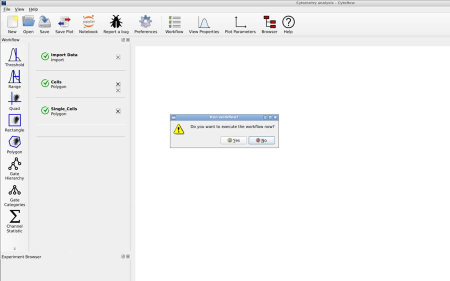
text(await tools.exec_command({cmd:"cu click 749 448\ncu click 730 8 double\nsleep 40\ncu screenshot /tmp/restored.png","yield_time_ms":1000,"max_output_tokens":1000}));
Script completed
Wall time 1.2 seconds
Output:
{"chunk_id":"61d5b0","wall_time_seconds":1.0005911,"session_id":58253,"original_token_count":0,"output":""}text(await tools.exec_command({cmd:"rg -n 'name:|vertices:|xchannel:|ychannel:|xscale:|yscale:|subset_list:' /task/outputs/workflow.flow | tail -35","max_output_tokens":2000}));
Script completed
Wall time 0.0 seconds
Output:
{"chunk_id":"ff9d9d","wall_time_seconds":0.00000423,"exit_code":0,"original_token_count":242,"output":"1221: name: construct\n1236: name: control_type\n1246: name: is_control\n1252: name: replicate\n1259: name: stain\n1267: name: well\n1309: fcs_name: AAV-GFP-Caspase-A\n1321: fcs_name: FSC-A\n1326: fcs_name: FSC-H\n1331: fcs_name: FSC-W\n1336: fcs_name: LiveDead-Zombie NIR-A\n1341: fcs_name: SSC-A\n1346: fcs_name: SSC-H\n1351: fcs_name: SSC-W\n1356: fcs_name: Time\n1686: name: construct\n1701: name: control_type\n1711: name: is_control\n1717: name: replicate\n1724: name: stain\n1732: name: well\n1803: name: Single_Cells\n1804: vertices:\n1820: xchannel: SSC-H\n1821: xscale: linear\n1822: ychannel: SSC-A\n1823: yscale: linear\n1847: subset_list:\n1849: name: Cells\n1854: name: construct\n1869: name: control_type\n1879: name: is_control\n1885: name: replicate\n1892: name: stain\n1900: name: well\n"}text(await tools.exec_command({cmd:"cu screenshot /tmp/restoreprogress.png","max_output_tokens":1000}));image((await tools.view_image({path:"/tmp/restoreprogress.png"})).image_url);
text(await tools.clock__curr_time({}));
Script completed Wall time 0.1 seconds Output:
{"chunk_id":"eb09d0","wall_time_seconds":0.00000401,"exit_code":0,"original_token_count":7,"output":"/tmp/restoreprogress.png\n"}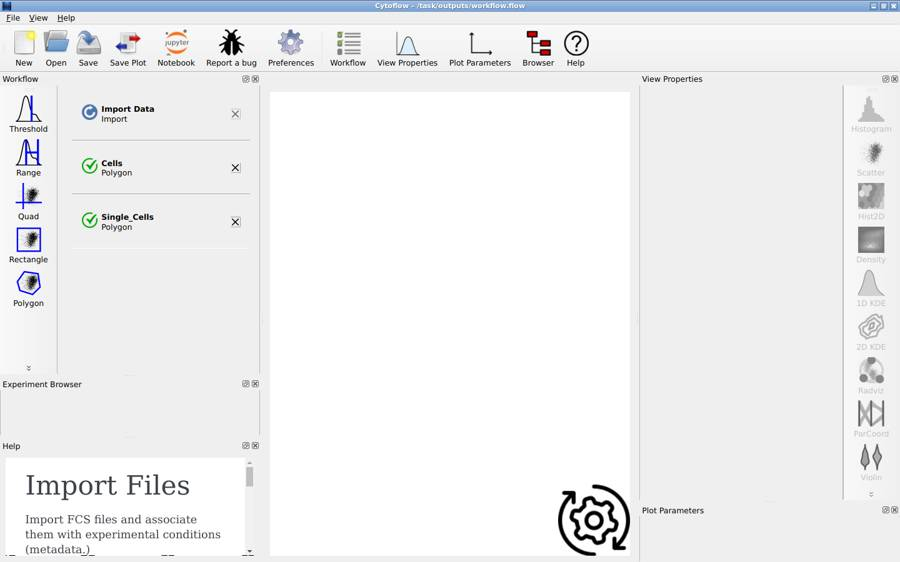
{"current_time":"2026-11-05 00:15:42 UTC"}text(await tools.exec_command({cmd:"cu click 407 713\ncu click 1431 816\nsleep 15\ncu screenshot /tmp/restored2.png","yield_time_ms":1000,"max_output_tokens":1000}));
Script completed
Wall time 1.2 seconds
Output:
{"chunk_id":"5dcc69","wall_time_seconds":1.00145523,"session_id":84970,"original_token_count":0,"output":""}text(await tools.exec_command({cmd:"sed -n '1170,1210p' /task/outputs/workflow.flow\nsed -n '1795,1828p' /task/outputs/workflow.flow","max_output_tokens":2500}));
Script completed
Wall time 0.0 seconds
Output:
{"chunk_id":"b7c70e","wall_time_seconds":0.00000363,"exit_code":0,"original_token_count":450,"output":" - !!python/tuple\n - 60123.01056952707\n - 23005.917130546368\n - !!python/tuple\n - 78305.56756818594\n - 9419.021969720778\n - !!python/tuple\n - 988660.1684691987\n - 9419.021969720778\n - !!python/tuple\n - 1032116.9709959738\n - 1020913.7625616924\n - !!python/tuple\n - 98647.11475054544\n - 1020913.7625616924\n - !!python/tuple\n - 60567.239010529986\n - 143098.84099316673\n xchannel: FSC-A\n xscale: logicle\n ychannel: SSC-A\n yscale: logicle\n plot_params: !polygon-params;1\n alpha: 0.25\n col_wrap: null\n density: false\n despine: true\n gridsize: 50\n huelabel: ''\n legend: true\n marker: o\n max_quantile: 1.0\n min_quantile: 0.001\n s: 2\n sharex: true\n sharey: true\n smoothed: false\n smoothed_sigma: 1.0\n sns_context: notebook\n sns_style: whitegrid\n title: ''\n replicate: *id007\n stain: *id008\n well: *id009\n current_view: &id031 !polygon-view;3\n current_plot: null\n huefacet: ''\n huescale: linear\n op: &id029 !polygon;1\n name: Single_Cells\n vertices:\n - !!python/tuple\n - 13152.319062287133\n - 7145.452617118543\n - !!python/tuple\n - 1020882.9086589008\n - 996366.5560349429\n - !!python/tuple\n - 1020882.9086589008\n - 1021516.2451048875\n - !!python/tuple\n - 606569.6898097578\n - 1021516.2451048875\n - !!python/tuple\n - 101625.45433736456\n - 174810.0464167498\n xchannel: SSC-H\n xscale: linear\n ychannel: SSC-A\n yscale: linear\n plot_params: !polygon-params;1\n alpha: 0.25\n col_wrap: null\n density: false\n despine: true\n"}text(await tools.write_stdin({session_id:84970,chars:"","yield_time_ms":1000,"max_output_tokens":1000}));
image((await tools.view_image({path:"/tmp/restored2.png"})).image_url);
Script completed Wall time 1.4 seconds Output:
{"chunk_id":"8390d7","wall_time_seconds":1.35673151,"exit_code":0,"original_token_count":5,"output":"/tmp/restored2.png\n"}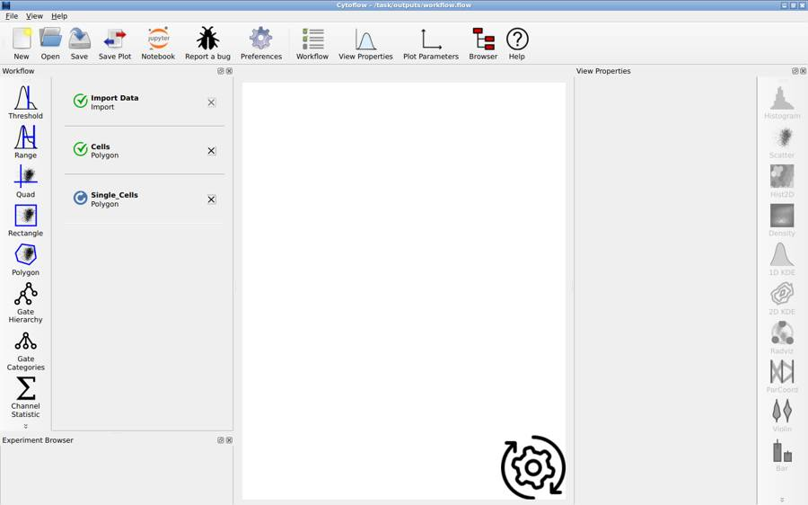
text(await tools.exec_command({cmd:"sleep 8\ncu click 242 352\nsleep 8\ncu screenshot /tmp/singleRest.png","yield_time_ms":1000,"max_output_tokens":1000}));
Script completed
Wall time 1.2 seconds
Output:
{"chunk_id":"a8fcc1","wall_time_seconds":1.00120281,"session_id":70704,"original_token_count":0,"output":""}text(await tools.write_stdin({session_id:70704,chars:"","yield_time_ms":1000,"max_output_tokens":1000}));
image((await tools.view_image({path:"/tmp/singleRest.png"})).image_url);
Script completed Wall time 0.0 seconds Output:
{"chunk_id":"5fcc91","wall_time_seconds":0.00000311,"exit_code":0,"original_token_count":5,"output":"/tmp/singleRest.png\n"}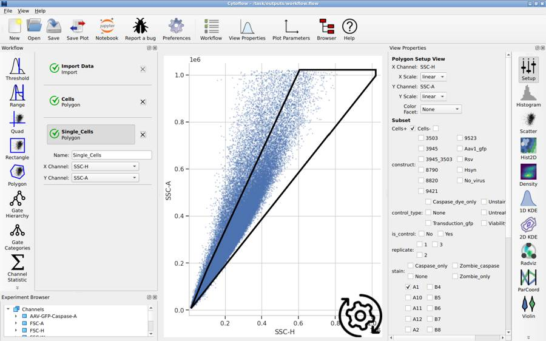
text(await tools.exec_command({cmd:"sleep 4\ncu screenshot /tmp/singleReady.png","max_output_tokens":1000}));image((await tools.view_image({path:"/tmp/singleReady.png"})).image_url);
Script completed Wall time 4.1 seconds Output:
{"chunk_id":"f5a93f","wall_time_seconds":3.92141803,"exit_code":0,"original_token_count":6,"output":"/tmp/singleReady.png\n"}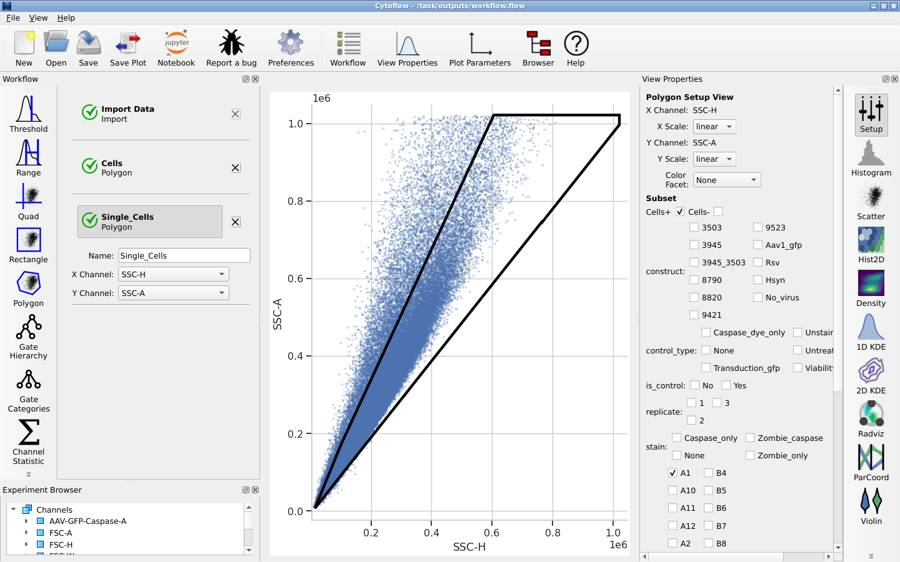
text(await tools.exec_command({cmd:"cu click 46 246\nsleep 1\ncu click 1088 286\ncu click 1133 309\ncu click 1277 557\ncu click 272 495\ncu type 'Live'\ncu click 1153 202\ncu key End\ncu key Return\ncu click 342 525\ncu key l\ncu key Return\ncu click 275 555\ncu type '-1000000'\ncu key Tab\ncu click 275 585\ncu type '1000'\ncu key Tab\ncu key ctrl+s\nsleep 15\ncu screenshot /tmp/liveRest.png","yield_time_ms":1000,"max_output_tokens":1000}));
Script completed
Wall time 1.2 seconds
Output:
{"chunk_id":"770835","wall_time_seconds":1.001222649,"session_id":99712,"original_token_count":0,"output":""}text(await tools.write_stdin({session_id:99712,chars:"","yield_time_ms":1000,"max_output_tokens":1000}));
Script completed
Wall time 5.0 seconds
Output:
{"chunk_id":"cf9569","wall_time_seconds":5.00184496,"session_id":99712,"original_token_count":0,"output":""}text(await tools.exec_command({cmd:"cu screenshot /tmp/livecheck.png","max_output_tokens":1000}));image((await tools.view_image({path:"/tmp/livecheck.png"})).image_url);
Script completed Wall time 0.1 seconds Output:
{"chunk_id":"fce68f","wall_time_seconds":0.00000466,"exit_code":0,"original_token_count":5,"output":"/tmp/livecheck.png\n"}text(await tools.write_stdin({session_id:99712,chars:"","yield_time_ms":1000,"max_output_tokens":1000}));
text(await tools.exec_command({cmd:"sleep 4\ncu screenshot /tmp/liveReady.png","max_output_tokens":1000}));image((await tools.view_image({path:"/tmp/liveReady.png"})).image_url);
Script completed Wall time 4.1 seconds Output:
{"chunk_id":"e33374","wall_time_seconds":0.00000342,"exit_code":0,"original_token_count":5,"output":"/tmp/liveRest.png\n"}{"chunk_id":"6dddad","wall_time_seconds":3.915086689,"exit_code":0,"original_token_count":5,"output":"/tmp/liveReady.png\n"}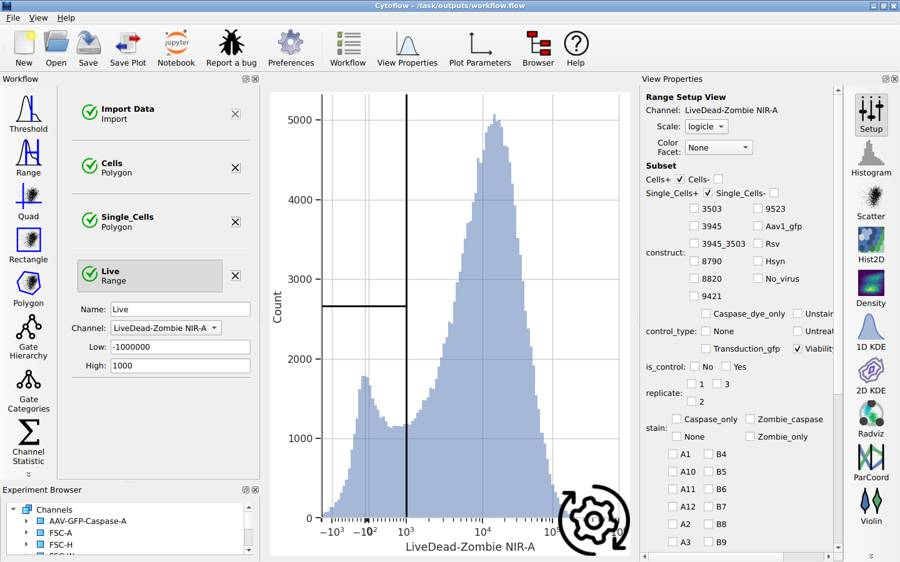
text(await tools.exec_command({cmd:"sleep 8\ncu screenshot /tmp/liveReady2.png","max_output_tokens":1000}));image((await tools.view_image({path:"/tmp/liveReady2.png"})).image_url);
Script completed Wall time 8.1 seconds Output:
{"chunk_id":"28604e","wall_time_seconds":7.913912519,"exit_code":0,"original_token_count":5,"output":"/tmp/liveReady2.png\n"}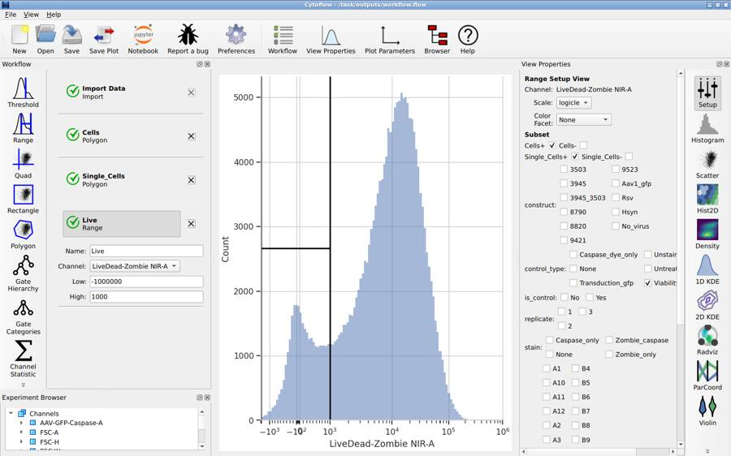
text(await tools.exec_command({cmd:"cu key ctrl+s\ncu click 47 245\nsleep 1\ncu click 1088 287\ncu click 1084 309\ncu click 1133 330\ncu click 1129 524\ncu click 273 581\ncu type 'Caspase_pos'\ncu click 1153 202\ncu key End\ncu key Return\ncu click 342 611\ncu key Home\ncu key Return\ncu key ctrl+s\nsleep 12\ncu screenshot /tmp/caspaseControl2.png","yield_time_ms":1000,"max_output_tokens":1000}));
Script completed
Wall time 1.2 seconds
Output:
{"chunk_id":"7beef7","wall_time_seconds":1.001223369,"session_id":54148,"original_token_count":0,"output":""}text(await tools.write_stdin({session_id:54148,chars:"","yield_time_ms":1000,"max_output_tokens":1000}));
Script completed
Wall time 5.0 seconds
Output:
{"chunk_id":"cf3562","wall_time_seconds":5.0006648,"session_id":54148,"original_token_count":0,"output":""}text(await tools.exec_command({cmd:"cu screenshot /tmp/caspasenow.png","max_output_tokens":1000}));image((await tools.view_image({path:"/tmp/caspasenow.png"})).image_url);
Script completed Wall time 0.1 seconds Output:
{"chunk_id":"487db3","wall_time_seconds":0.00000345,"exit_code":0,"original_token_count":5,"output":"/tmp/caspasenow.png\n"}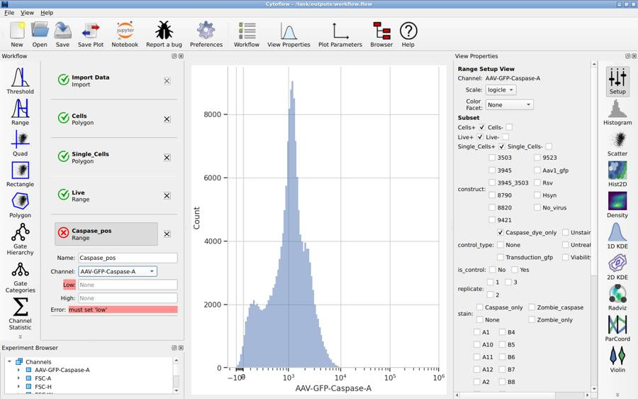
text(await tools.exec_command({cmd:"cu click 1277 524\ncu click 1129 524\nsleep 12\ncu screenshot /tmp/unstainedBL1.png","yield_time_ms":1000,"max_output_tokens":1000}));
Script completed
Wall time 1.2 seconds
Output:
{"chunk_id":"0d2955","wall_time_seconds":1.001250359,"session_id":29117,"original_token_count":0,"output":""}text(await tools.write_stdin({session_id:54148,chars:"","yield_time_ms":1000,"max_output_tokens":1000}));
text(await tools.write_stdin({session_id:29117,chars:"","yield_time_ms":1000,"max_output_tokens":1000}));
image((await tools.view_image({path:"/tmp/unstainedBL1.png"})).image_url);
Script completed Wall time 0.0 seconds Output:
{"chunk_id":"a980dd","wall_time_seconds":0.00000341,"exit_code":0,"original_token_count":7,"output":"/tmp/caspaseControl2.png\n"}{"chunk_id":"8fbb7c","wall_time_seconds":9.5e-7,"exit_code":0,"original_token_count":6,"output":"/tmp/unstainedBL1.png\n"}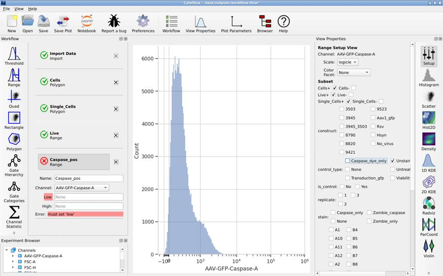
text(await tools.exec_command({cmd:"cu click 270 642\ncu key ctrl+a\ncu type '500'\ncu key Tab\ncu click 270 673\ncu key ctrl+a\ncu type '2000000'\ncu key Tab\ncu key ctrl+s\nsleep 20\ncu screenshot /tmp/caspaseGated.png","yield_time_ms":1000,"max_output_tokens":1000}));
Script completed
Wall time 1.2 seconds
Output:
{"chunk_id":"d64a9e","wall_time_seconds":1.00113119,"session_id":18604,"original_token_count":0,"output":""}text(await tools.clock__curr_time({}));
text(await tools.exec_command({cmd:"cp /tmp/liveReady2.png /task/outputs/work/control_C11_RL3.png\ncp /tmp/caspasenow.png /task/outputs/work/control_C12_BL1.png\ncp /tmp/unstainedBL1.png /task/outputs/work/control_C10_BL1.png\ncp /tmp/unstainedRL3c.png /task/outputs/work/control_C10_RL3.png","max_output_tokens":1000}));
Script completed
Wall time 0.0 seconds
Output:
{"current_time":"2026-11-05 00:18:39 UTC"}
{"chunk_id":"354498","wall_time_seconds":0.00000331,"exit_code":0,"original_token_count":0,"output":""}text(await tools.write_stdin({session_id:18604,chars:"","yield_time_ms":1000,"max_output_tokens":1000}));
image((await tools.view_image({path:"/tmp/caspaseGated.png"})).image_url);
Script completed Wall time 2.6 seconds Output:
{"chunk_id":"8a07ad","wall_time_seconds":2.53738986,"exit_code":0,"original_token_count":6,"output":"/tmp/caspaseGated.png\n"}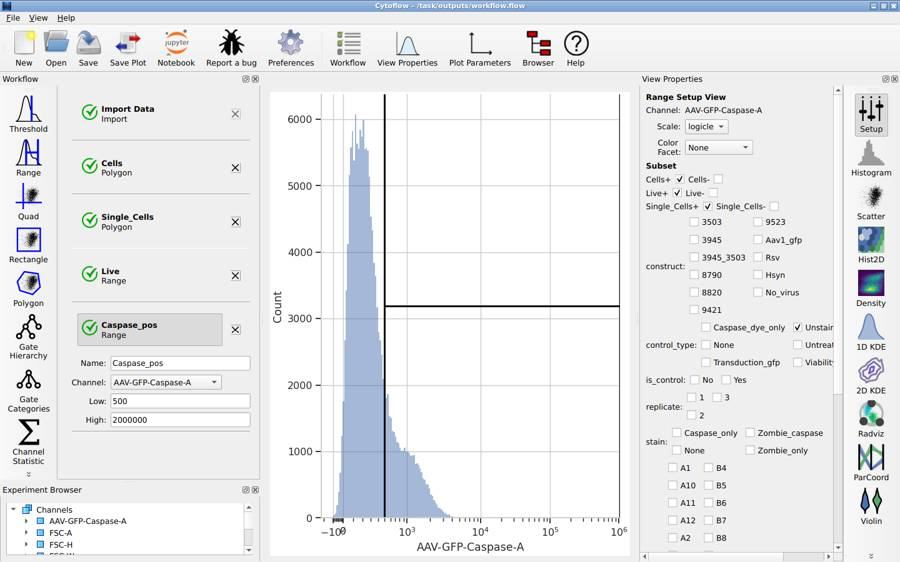
text(await tools.exec_command({cmd:"cu click 46 455\nsleep 2\ncu screenshot /tmp/lateNew.png","max_output_tokens":1000}));image((await tools.view_image({path:"/tmp/lateNew.png"})).image_url);
Script completed Wall time 2.2 seconds Output:
{"chunk_id":"75b845","wall_time_seconds":2.01915566,"exit_code":0,"original_token_count":5,"output":"/tmp/lateNew.png\n"}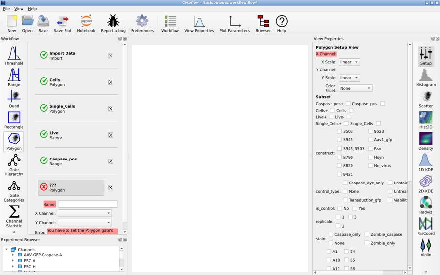
text(await tools.exec_command({cmd:"cu click 1088 360\ncu click 1133 404\ncu click 1277 626\ncu click 270 668\ncu type 'Late_apoptosis'\ncu click 1168 202\ncu key End\ncu key Return\ncu click 1168 254\ncu key End\ncu key Return\ncu click 354 698\ncu key Home\ncu key Return\ncu click 354 728\ncu key l\ncu key Return\ncu key ctrl+s\nsleep 15\ncu screenshot /tmp/lateView.png","yield_time_ms":1000,"max_output_tokens":1000}));
Script completed
Wall time 1.2 seconds
Output:
{"chunk_id":"df1a21","wall_time_seconds":1.00091831,"session_id":56357,"original_token_count":0,"output":""}text(await tools.write_stdin({session_id:56357,chars:"","yield_time_ms":1000,"max_output_tokens":1000}));
image((await tools.view_image({path:"/tmp/lateView.png"})).image_url);
Script completed Wall time 1.0 seconds Output:
{"chunk_id":"af55dd","wall_time_seconds":1.01077378,"exit_code":0,"original_token_count":5,"output":"/tmp/lateView.png\n"}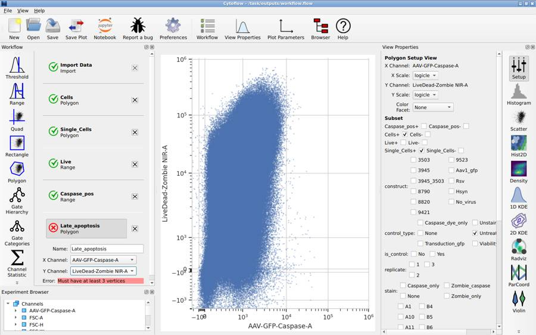
text(await tools.exec_command({cmd:"cu click 765 71\ncu screenshot /tmp/plotparams.png","max_output_tokens":1000}));image((await tools.view_image({path:"/tmp/plotparams.png"})).image_url);
Script completed Wall time 0.2 seconds Output:
{"chunk_id":"7b6e81","wall_time_seconds":0.02316872,"exit_code":0,"original_token_count":5,"output":"/tmp/plotparams.png\n"}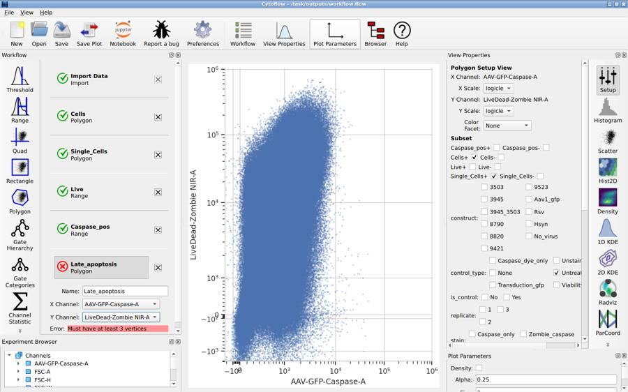
text(await tools.exec_command({cmd:"cu drag 1220 803 1220 448\ncu screenshot /tmp/params2.png","max_output_tokens":1000}));image((await tools.view_image({path:"/tmp/params2.png"})).image_url);
Script completed Wall time 0.1 seconds Output:
{"chunk_id":"0155ed","wall_time_seconds":0.00000393,"exit_code":0,"original_token_count":5,"output":"/tmp/params2.png\n"}text(await tools.exec_command({cmd:"cu click 1098 489\ncu click 1244 637\ncu key ctrl+a\ncu type '2000000'\ncu key Tab\ncu click 1244 697\ncu key ctrl+a\ncu type '2000000'\ncu key Tab\nsleep 15\ncu screenshot /tmp/lateDensity.png","yield_time_ms":1000,"max_output_tokens":1000}));
Script completed
Wall time 1.2 seconds
Output:
{"chunk_id":"a070a4","wall_time_seconds":1.00161189,"session_id":65661,"original_token_count":0,"output":""}text(await tools.write_stdin({session_id:65661,chars:"","yield_time_ms":1000,"max_output_tokens":1000}));
Script completed
Wall time 5.0 seconds
Output:
{"chunk_id":"14e1cc","wall_time_seconds":5.00103543,"session_id":65661,"original_token_count":0,"output":""}text(await tools.write_stdin({session_id:65661,chars:"","yield_time_ms":1000,"max_output_tokens":1000}));
image((await tools.view_image({path:"/tmp/lateDensity.png"})).image_url);
Script completed Wall time 0.0 seconds Output:
{"chunk_id":"93fdfc","wall_time_seconds":0.00000272,"exit_code":0,"original_token_count":6,"output":"/tmp/lateDensity.png\n"}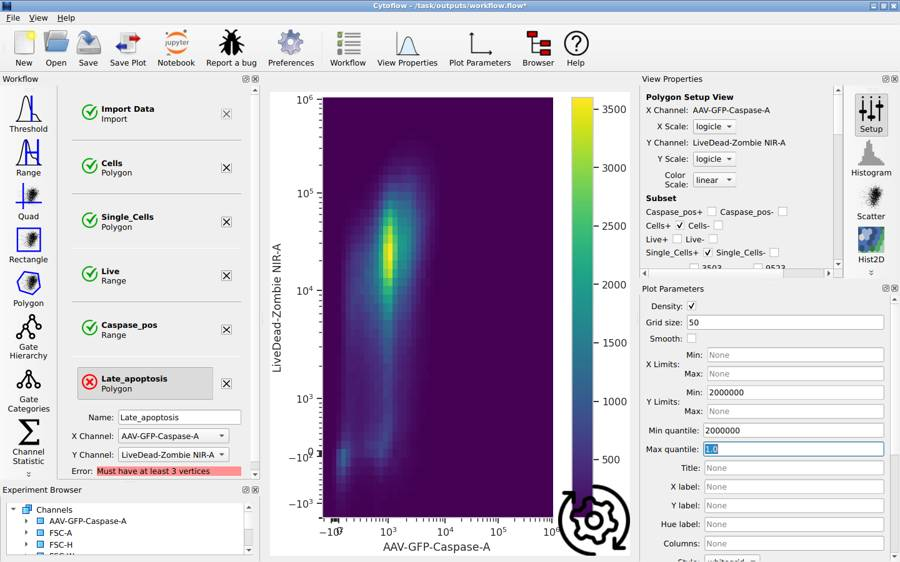
text(await tools.exec_command({cmd:"cu click 1234 599\ncu key ctrl+a\ncu type '2000000'\ncu key Tab\ncu click 1234 629\ncu key ctrl+a\ncu type 'None'\ncu key Tab\ncu click 1234 659\ncu key ctrl+a\ncu type '2000000'\ncu key Tab\ncu click 1234 689\ncu key ctrl+a\ncu type '0.001'\ncu key Tab\nsleep 15\ncu screenshot /tmp/lateDensity2.png","yield_time_ms":20000,"max_output_tokens":1000}));image((await tools.view_image({path:"/tmp/lateDensity2.png"})).image_url);
Script completed Wall time 16.3 seconds Output:
{"chunk_id":"1baae2","wall_time_seconds":16.111289608,"exit_code":0,"original_token_count":6,"output":"/tmp/lateDensity2.png\n"}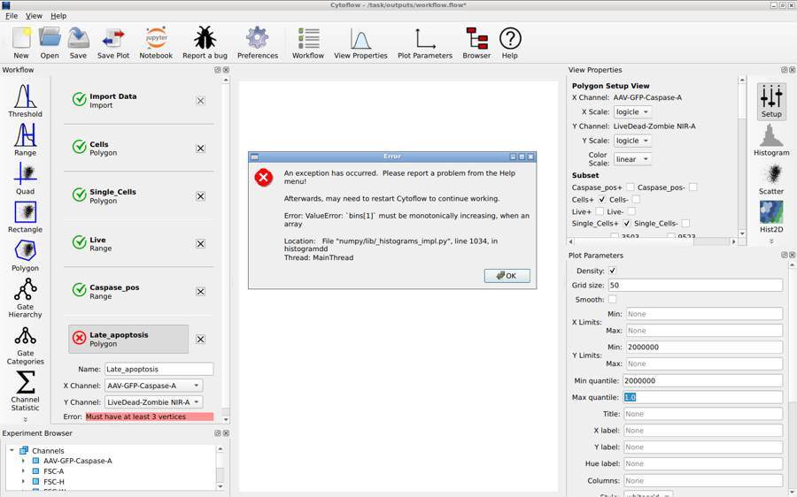
text(await tools.exec_command({cmd:"cu click 914 500\ncu screenshot /tmp/lateparamsError.png","max_output_tokens":1000}));image((await tools.view_image({path:"/tmp/lateparamsError.png"})).image_url);
Script completed Wall time 0.2 seconds Output:
{"chunk_id":"d3b115","wall_time_seconds":0.01805385,"exit_code":0,"original_token_count":7,"output":"/tmp/lateparamsError.png\n"}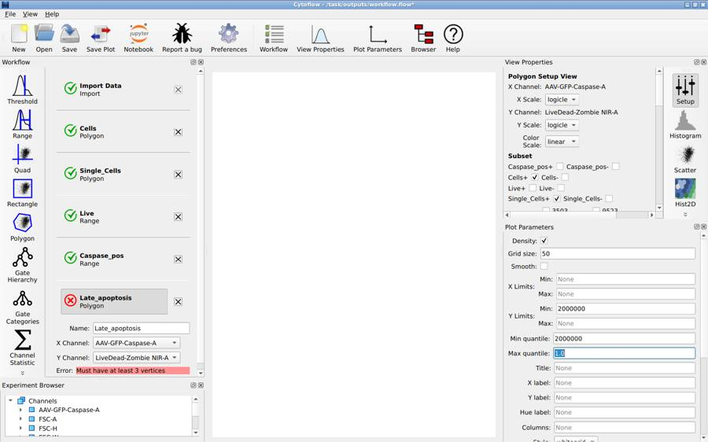
text(await tools.exec_command({cmd:"cu click 1234 689\ncu key ctrl+a\ncu type '0.001'\ncu key Tab\ncu click 1234 629\ncu key ctrl+a\ncu type 'None'\ncu key Tab\ncu click 1234 599\ncu key ctrl+a\ncu type '2000000'\ncu key Tab\ncu click 1234 659\ncu key ctrl+a\ncu type '2000000'\ncu key Tab\nsleep 15\ncu screenshot /tmp/lateparamsFixed.png","yield_time_ms":20000,"max_output_tokens":1000}));image((await tools.view_image({path:"/tmp/lateparamsFixed.png"})).image_url);
Script completed Wall time 16.3 seconds Output:
{"chunk_id":"a574b5","wall_time_seconds":16.103336718,"exit_code":0,"original_token_count":7,"output":"/tmp/lateparamsFixed.png\n"}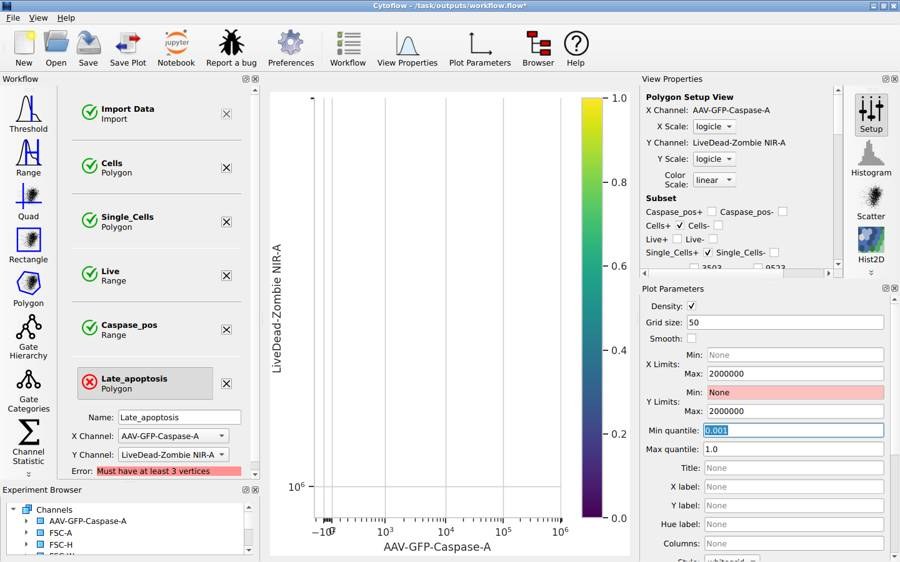
text(await tools.exec_command({cmd:"cu click 1241 629\ncu key ctrl+a\ncu type '-2000'\ncu key Tab\nsleep 12\ncu screenshot /tmp/lateReadyDraw.png","yield_time_ms":15000,"max_output_tokens":1000}));image((await tools.view_image({path:"/tmp/lateReadyDraw.png"})).image_url);
Script completed Wall time 12.4 seconds Output:
{"chunk_id":"24220f","wall_time_seconds":12.194328559,"exit_code":0,"original_token_count":6,"output":"/tmp/lateReadyDraw.png\n"}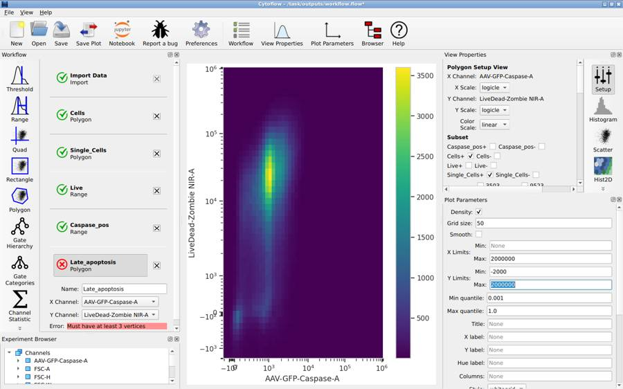
text(await tools.exec_command({cmd:"cu click 1106 489\nsleep 12\ncu screenshot /tmp/lateScatterLimits.png","yield_time_ms":15000,"max_output_tokens":1000}));image((await tools.view_image({path:"/tmp/lateScatterLimits.png"})).image_url);
Script completed Wall time 12.2 seconds Output:
{"chunk_id":"8dcad7","wall_time_seconds":12.024142009,"exit_code":0,"original_token_count":7,"output":"/tmp/lateScatterLimits.png\n"}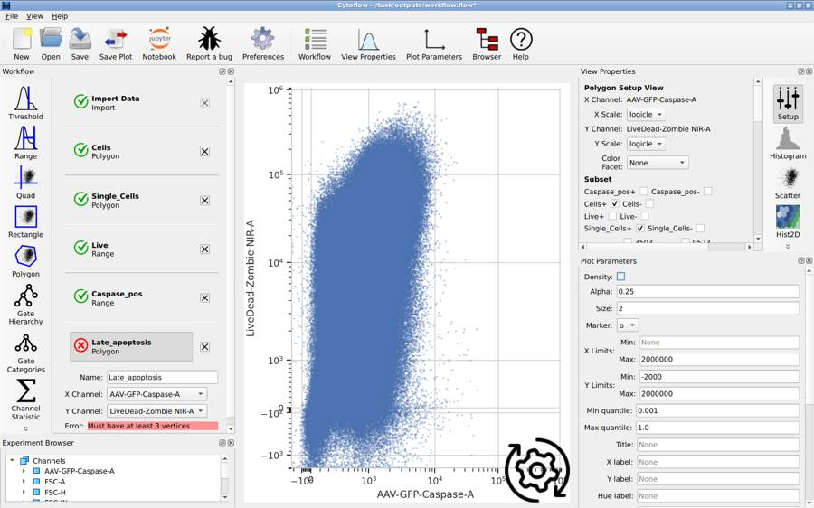
text(await tools.exec_command({cmd:"sleep 10\ncu screenshot /tmp/lateScatterReady.png","yield_time_ms":15000,"max_output_tokens":1000}));image((await tools.view_image({path:"/tmp/lateScatterReady.png"})).image_url);
Script completed Wall time 10.1 seconds Output:
{"chunk_id":"6fd19e","wall_time_seconds":9.919564119,"exit_code":0,"original_token_count":7,"output":"/tmp/lateScatterReady.png\n"}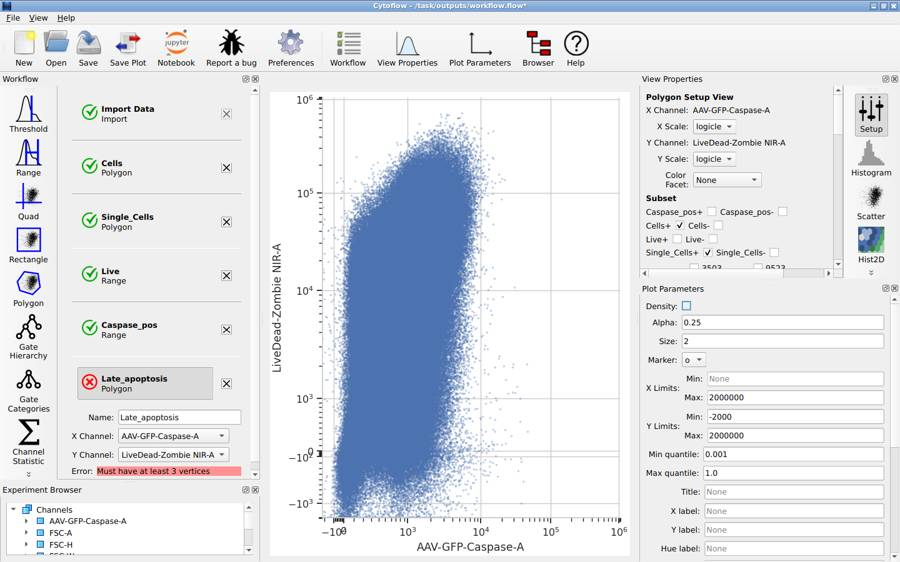
text(await tools.exec_command({cmd:"cu click 618 553\ncu click 995 553\ncu click 995 157\ncu click 618 157\ncu click 618 553 double\ncu key ctrl+s\nsleep 20\ncu screenshot /task/outputs/work/late_gate.png","yield_time_ms":25000,"max_output_tokens":1000}));image((await tools.view_image({path:"/task/outputs/work/late_gate.png"})).image_url);
text(await tools.exec_command({cmd:"rg -n -A23 'name: Late_apoptosis' /task/outputs/workflow.flow | head -28","max_output_tokens":2000}));
Script completed Wall time 20.8 seconds Output:
{"chunk_id":"abe0bc","wall_time_seconds":20.580639368,"exit_code":0,"original_token_count":9,"output":"/task/outputs/work/late_gate.png\n"}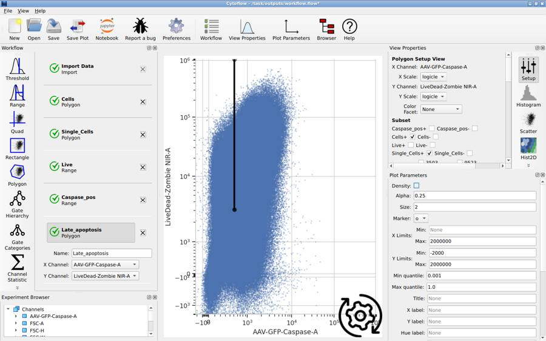
{"chunk_id":"29ce4b","wall_time_seconds":0.00000348,"exit_code":0,"original_token_count":168,"output":"4301: name: Late_apoptosis\n4302- vertices: []\n4303- xchannel: AAV-GFP-Caspase-A\n4304- xscale: logicle\n4305- ychannel: LiveDead-Zombie NIR-A\n4306- yscale: logicle\n4307- plot_params: !polygon-params;1\n4308- alpha: 0.25\n4309- col_wrap: null\n4310- density: false\n4311- despine: true\n4312- gridsize: 50\n4313- huelabel: ''\n4314- legend: true\n4315- marker: o\n4316- max_quantile: 1.0\n4317- min_quantile: 0.001\n4318- s: 2\n4319- sharex: true\n4320- sharey: true\n4321- smoothed: false\n4322- smoothed_sigma: 1.0\n4323- sns_context: notebook\n4324- sns_style: whitegrid\n"}text(await tools.exec_command({cmd:"cu click 618 553\ncu click 985 553\ncu click 985 166\ncu click 618 166\ncu click 618 553 double\nsleep 12\ncu key ctrl+s\ncu screenshot /tmp/lateDraw2.png","yield_time_ms":15000,"max_output_tokens":1000}));image((await tools.view_image({path:"/tmp/lateDraw2.png"})).image_url);
text(await tools.exec_command({cmd:"rg -n -A26 'name: Late_apoptosis' /task/outputs/workflow.flow | head -30","max_output_tokens":2000}));
Script completed Wall time 12.8 seconds Output:
{"chunk_id":"45e672","wall_time_seconds":12.577369359,"exit_code":0,"original_token_count":5,"output":"/tmp/lateDraw2.png\n"}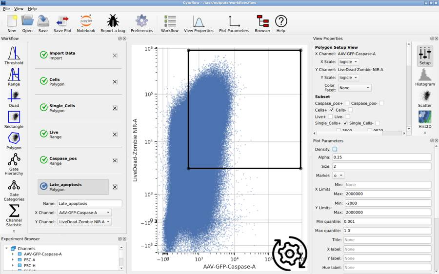
{"chunk_id":"827328","wall_time_seconds":0.00000335,"exit_code":0,"original_token_count":199,"output":"4506: name: Late_apoptosis\n4507- vertices:\n4508- - !!python/tuple\n4509- - 519.3401258365564\n4510- - 3070.264048281051\n4511- - !!python/tuple\n4512- - 914658.020000165\n4513- - 3070.264048281051\n4514- - !!python/tuple\n4515- - 914658.020000165\n4516- - 904282.8089977349\n4517- - !!python/tuple\n4518- - 519.3401258365564\n4519- - 904282.8089977349\n4520- xchannel: AAV-GFP-Caspase-A\n4521- xscale: logicle\n4522- ychannel: LiveDead-Zombie NIR-A\n4523- yscale: logicle\n4524- plot_params: !polygon-params;1\n4525- alpha: 0.25\n4526- col_wrap: null\n4527- density: false\n4528- despine: true\n4529- gridsize: 50\n4530- huelabel: ''\n4531- legend: true\n4532- marker: o\n"}text(await tools.exec_command({cmd:"sed -n '4530,4555p' /task/outputs/workflow.flow","max_output_tokens":1000}));
Script completed
Wall time 0.0 seconds
Output:
{"chunk_id":"c1d704","wall_time_seconds":0.00000375,"exit_code":0,"original_token_count":134,"output":" huelabel: ''\n legend: true\n marker: o\n max_quantile: 1.0\n min_quantile: 0.001\n s: 2\n sharex: true\n sharey: true\n smoothed: false\n smoothed_sigma: 1.0\n sns_context: notebook\n sns_style: whitegrid\n title: ''\n xlabel: ''\n xlim: !!python/tuple\n - null\n - 2000000.0\n ylabel: ''\n ylim: !!python/tuple\n - -2000.0\n - 2000000.0\n subset_list:\n - !bool-subset;1\n name: Caspase_pos\n selected_f: false\n selected_t: false\n"}text(await tools.exec_command({cmd:"cu click 1246 607\ncu key ctrl+a\ncu type '1'\ncu key Tab\ncu click 1246 667\ncu key ctrl+a\ncu type '1'\ncu key Tab\ncu click 1168 202\ncu key Home\ncu key Down\ncu key Return\ncu click 1168 254\ncu key Home\ncu key Down\ncu key Return\nsleep 20\ncu screenshot /tmp/lateExpand.png","yield_time_ms":25000,"max_output_tokens":1000}));image((await tools.view_image({path:"/tmp/lateExpand.png"})).image_url);
Script completed Wall time 20.8 seconds Output:
{"chunk_id":"76e9d5","wall_time_seconds":20.581925518,"exit_code":0,"original_token_count":5,"output":"/tmp/lateExpand.png\n"}text(await tools.exec_command({cmd:"cu click 1245 607\ncu key ctrl+a\ncu type '-2000'\ncu key Tab\ncu click 1245 667\ncu key ctrl+a\ncu type '-2000'\ncu key Tab\ncu click 1168 202\ncu key End\ncu key Return\ncu click 1168 254\ncu key End\ncu key Return\nsleep 15\ncu screenshot /tmp/lateFinalAxes.png","yield_time_ms":20000,"max_output_tokens":1000}));image((await tools.view_image({path:"/tmp/lateFinalAxes.png"})).image_url);
Script completed Wall time 15.9 seconds Output:
{"chunk_id":"7b8f03","wall_time_seconds":15.752009949,"exit_code":0,"original_token_count":6,"output":"/tmp/lateFinalAxes.png\n"}text(await tools.exec_command({cmd:"sleep 10\ncu screenshot /tmp/lateFinalAxes2.png","yield_time_ms":15000,"max_output_tokens":1000}));image((await tools.view_image({path:"/tmp/lateFinalAxes2.png"})).image_url);
Script completed Wall time 10.1 seconds Output:
{"chunk_id":"b79ca7","wall_time_seconds":9.919164559,"exit_code":0,"original_token_count":6,"output":"/tmp/lateFinalAxes2.png\n"}text(await tools.exec_command({cmd:"cu click 630 553\ncu click 991 553\ncu click 991 157\ncu click 630 157\ncu click 630 553 double\nsleep 20\ncu key ctrl+s\ncu screenshot /task/outputs/work/late_gate.png","yield_time_ms":25000,"max_output_tokens":1000}));image((await tools.view_image({path:"/task/outputs/work/late_gate.png"})).image_url);
text(await tools.exec_command({cmd:"rg -n -A18 'name: Late_apoptosis' /task/outputs/workflow.flow | head -22","max_output_tokens":1500}));
Script completed Wall time 20.8 seconds Output:
{"chunk_id":"41eb4e","wall_time_seconds":20.574825399,"exit_code":0,"original_token_count":9,"output":"/task/outputs/work/late_gate.png\n"}{"chunk_id":"108fa3","wall_time_seconds":0.00000417,"exit_code":0,"original_token_count":153,"output":"4508: name: Late_apoptosis\n4509- vertices:\n4510- - !!python/tuple\n4511- - 517.186261323028\n4512- - 3070.2640490030044\n4513- - !!python/tuple\n4514- - 1044950.0728123244\n4515- - 3070.2640490030044\n4516- - !!python/tuple\n4517- - 1044950.0728123244\n4518- - 1027691.2152450725\n4519- - !!python/tuple\n4520- - 517.186261323028\n4521- - 1027691.2152450725\n4522- xchannel: AAV-GFP-Caspase-A\n4523- xscale: logicle\n4524- ychannel: LiveDead-Zombie NIR-A\n4525- yscale: logicle\n4526- plot_params: !polygon-params;1\n"}text(await tools.exec_command({cmd:"sleep 5\ncu click 1431 461\ncu click 408 784\ncu click 246 522\nsleep 3\ncu screenshot /tmp/caspaseAdjust.png","max_output_tokens":1000}));image((await tools.view_image({path:"/tmp/caspaseAdjust.png"})).image_url);
Script completed Wall time 8.4 seconds Output:
{"chunk_id":"6b7d4c","wall_time_seconds":8.231250369,"exit_code":0,"original_token_count":6,"output":"/tmp/caspaseAdjust.png\n"}text(await tools.exec_command({cmd:"cu click 273 642\ncu key ctrl+a\ncu type '517.186261323028'\ncu key Tab\nsleep 18\ncu key ctrl+s\ncu screenshot /tmp/caspaseFinal.png","yield_time_ms":25000,"max_output_tokens":1000}));image((await tools.view_image({path:"/tmp/caspaseFinal.png"})).image_url);
Script completed Wall time 18.7 seconds Output:
{"chunk_id":"8331b2","wall_time_seconds":18.499535368,"exit_code":0,"original_token_count":6,"output":"/tmp/caspaseFinal.png\n"}text(await tools.exec_command({cmd:"sleep 10\ncu click 242 735\nsleep 12\ncu click 47 690\nsleep 2\ncu screenshot /tmp/statNew.png","yield_time_ms":30000,"max_output_tokens":1000}));image((await tools.view_image({path:"/tmp/statNew.png"})).image_url);
Script completed Wall time 24.3 seconds Output:
{"chunk_id":"2df706","wall_time_seconds":24.131749318,"exit_code":0,"original_token_count":5,"output":"/tmp/statNew.png\n"}text(await tools.exec_command({cmd:"cu click 270 755\ncu key ctrl+a\ncu type 'N_All_events'\ncu key Tab\ncu click 344 785\ncu key f\ncu key Return\ncu click 319 814\ncu screenshot /tmp/statFunction.png","max_output_tokens":1000}));image((await tools.view_image({path:"/tmp/statFunction.png"})).image_url);
Script completed Wall time 0.8 seconds Output:
{"chunk_id":"ea26e9","wall_time_seconds":0.61147897,"exit_code":0,"original_token_count":6,"output":"/tmp/statFunction.png\n"}text(await tools.exec_command({cmd:"cu click 207 576\ncu scroll 286 750 down 5\ncu screenshot /tmp/statGroups.png","max_output_tokens":1000}));image((await tools.view_image({path:"/tmp/statGroups.png"})).image_url);
Script completed Wall time 0.7 seconds Output:
{"chunk_id":"825ff5","wall_time_seconds":0.526605749,"exit_code":0,"original_token_count":5,"output":"/tmp/statGroups.png\n"}text(await tools.exec_command({cmd:"cu click 319 752\ncu key Home\ncu key Return\ncu scroll 121 751 down 12\ncu screenshot /tmp/statGroups2.png","max_output_tokens":1000}));image((await tools.view_image({path:"/tmp/statGroups2.png"})).image_url);
Script completed Wall time 1.4 seconds Output:
{"chunk_id":"5d8799","wall_time_seconds":1.25825947,"exit_code":0,"original_token_count":6,"output":"/tmp/statGroups2.png\n"}text(await tools.exec_command({cmd:"cu click 349 144\ncu scroll 1395 848 down 8\nsleep 12\ncu screenshot /tmp/statTableIcon.png","yield_time_ms":15000,"max_output_tokens":1000}));image((await tools.view_image({path:"/tmp/statTableIcon.png"})).image_url);
Script completed Wall time 13.0 seconds Output:
{"chunk_id":"543c51","wall_time_seconds":12.827347749,"exit_code":0,"original_token_count":6,"output":"/tmp/statTableIcon.png\n"}text(await tools.exec_command({cmd:"cu click 1394 890\ncu click 1394 890\ncu click 1394 890\ncu click 1394 890\ncu screenshot /tmp/viewsLower.png","max_output_tokens":1000}));image((await tools.view_image({path:"/tmp/viewsLower.png"})).image_url);
Script completed Wall time 0.5 seconds Output:
{"chunk_id":"4846e2","wall_time_seconds":0.33726127,"exit_code":0,"original_token_count":5,"output":"/tmp/viewsLower.png\n"}text(await tools.exec_command({cmd:"cu move 1377 889\ncu click 1377 889\nsleep 1\ncu screenshot /tmp/viewsLower2.png","max_output_tokens":1000}));image((await tools.view_image({path:"/tmp/viewsLower2.png"})).image_url);
Script completed Wall time 1.2 seconds Output:
{"chunk_id":"7a45e5","wall_time_seconds":1.02743953,"exit_code":0,"original_token_count":6,"output":"/tmp/viewsLower2.png\n"}text(await tools.exec_command({cmd:"cu click 1399 458\nsleep 2\ncu screenshot /tmp/tableSetup.png","max_output_tokens":1000}));image((await tools.view_image({path:"/tmp/tableSetup.png"})).image_url);
Script completed Wall time 2.2 seconds Output:
{"chunk_id":"13bf89","wall_time_seconds":2.0171747,"exit_code":0,"original_token_count":5,"output":"/tmp/tableSetup.png\n"}text(await tools.exec_command({cmd:"cu click 1210 181\ncu screenshot /tmp/tableStatList.png","max_output_tokens":1000}));image((await tools.view_image({path:"/tmp/tableStatList.png"})).image_url);
Script completed Wall time 0.2 seconds Output:
{"chunk_id":"c54939","wall_time_seconds":0.01445086,"exit_code":0,"original_token_count":6,"output":"/tmp/tableStatList.png\n"}text(await tools.exec_command({cmd:"cu click 1162 206\ncu click 1184 211\ncu screenshot /tmp/tableFeature.png","max_output_tokens":1000}));image((await tools.view_image({path:"/tmp/tableFeature.png"})).image_url);
Script completed Wall time 0.3 seconds Output:
{"chunk_id":"cb35c3","wall_time_seconds":0.11266559,"exit_code":0,"original_token_count":6,"output":"/tmp/tableFeature.png\n"}text(await tools.exec_command({cmd:"ps -eo pid,ppid,rss,comm | rg 'cytoflow$'\nhead -8 /task/outputs/work/cytoflow2.log\nls -lh /task/outputs/workflow.flow","max_output_tokens":1000}));
Script completed
Wall time 0.0 seconds
Output:
{"chunk_id":"82d968","wall_time_seconds":0.00000429,"exit_code":0,"original_token_count":207,"output":" 860 1 0 cytoflow\n 7639 1 0 cytoflow\n 7658 1 0 cytoflow\n 7660 1 0 cytoflow\n 7668 1 0 cytoflow\n 7670 1 0 cytoflow\n 7792 1 0 cytoflow\n 7794 1 0 cytoflow\n 8306 1 39368 cytoflow\n 8308 1 2330252 cytoflow\nQStandardPaths: XDG_RUNTIME_DIR not set, defaulting to '/tmp/runtime-cfapp'\nQXcbIntegration: Cannot create platform OpenGL context, neither GLX nor EGL are enabled\n2026-11-05 00:20:00,860 ERROR:root:Error: ValueError: `bins[1]` must be monotonically increasing, when an array\n\nLocation: File \"numpy/lib/_histograms_impl.py\", line 1034, in histogramdd\nThread: MainThread\n2026-11-05 00:20:44,816 ERROR:root:Error: ValueError: `bins[1]` must be monotonically increasing, when an array\n\n-rw-rw-r-- 1 cfapp task 87K Nov 5 00:26 /task/outputs/workflow.flow\n"}text(await tools.exec_command({cmd:"rg --files /opt/cytoflow | rg 'matplotlib_backend_local|start-cytoflow|cytoflowgui' | head -20\nkill 8306 8308\nrunuser -u cfapp -- env QT_X11_NO_MITSHM=1 /opt/cytoflow/cytoflow-1.3.2/cytoflow > /task/outputs/work/cytoflow3.log 2>&1","yield_time_ms":1000,"max_output_tokens":1500}));
Script completed
Wall time 1.2 seconds
Output:
{"chunk_id":"078516","wall_time_seconds":1.00127309,"session_id":75931,"original_token_count":419,"output":"/opt/cytoflow/cytoflow-1.3.2/_internal/cytoflowgui/help/operations/category.html\n/opt/cytoflow/cytoflow-1.3.2/_internal/cytoflowgui/help/operations/bead_calibration-1.png\n/opt/cytoflow/cytoflow-1.3.2/_internal/cytoflowgui/help/operations/polygon-1.py\n/opt/cytoflow/cytoflow-1.3.2/_internal/cytoflowgui/help/operations/xform_stat.html\n/opt/cytoflow/cytoflow-1.3.2/_internal/cytoflowgui/help/operations/autofluorescence-1.py\n/opt/cytoflow/cytoflow-1.3.2/_internal/cytoflowgui/help/operations/bead_calibration-1.py\n/opt/cytoflow/cytoflow-1.3.2/_internal/cytoflowgui/help/operations/tsne.html\n/opt/cytoflow/cytoflow-1.3.2/_internal/cytoflowgui/help/operations/gaussian_2d-1.py\n/opt/cytoflow/cytoflow-1.3.2/_internal/cytoflowgui/help/operations/quad-1.png\n/opt/cytoflow/cytoflow-1.3.2/_internal/cytoflowgui/help/operations/hierarchy.html\n/opt/cytoflow/cytoflow-1.3.2/_internal/cytoflowgui/help/operations/binning-1.png\n/opt/cytoflow/cytoflow-1.3.2/_internal/cytoflowgui/help/operations/flowpeaks-1_01.png\n/opt/cytoflow/cytoflow-1.3.2/_internal/cytoflowgui/help/operations/flowpeaks-1_00.png\n/opt/cytoflow/cytoflow-1.3.2/_internal/cytoflowgui/help/operations/tasbe-2.png\n/opt/cytoflow/cytoflow-1.3.2/_internal/cytoflowgui/help/operations/channel_stat.html\n/opt/cytoflow/cytoflow-1.3.2/_internal/cytoflowgui/help/operations/tasbe-1.png\n/opt/cytoflow/cytoflow-1.3.2/_internal/cytoflowgui/help/operations/threshold.html\n/opt/cytoflow/cytoflow-1.3.2/_internal/cytoflowgui/help/operations/bleedthrough_linear.html\n/opt/cytoflow/cytoflow-1.3.2/_internal/cytoflowgui/help/operations/flowpeaks-1.py\n/opt/cytoflow/cytoflow-1.3.2/_internal/cytoflowgui/help/operations/autofluorescence-1.png\n"}text(await tools.exec_command({cmd:"sleep 4\ncu key ctrl+o\ncu paste '/task/outputs/workflow.flow'\ncu key Return\nsleep 1\ncu screenshot /tmp/reloadFive.png","max_output_tokens":1000}));image((await tools.view_image({path:"/tmp/reloadFive.png"})).image_url);
Script completed Wall time 6.5 seconds Output:
{"chunk_id":"233956","wall_time_seconds":6.28042246,"exit_code":0,"original_token_count":5,"output":"/tmp/reloadFive.png\n"}text(await tools.exec_command({cmd:"cu click 749 449\ncu click 730 8 double\nsleep 45\ncu screenshot /tmp/reloadFive2.png","yield_time_ms":1000,"max_output_tokens":1000}));
Script completed
Wall time 1.2 seconds
Output:
{"chunk_id":"4b5c71","wall_time_seconds":1.00028705,"session_id":19725,"original_token_count":0,"output":""}text(await tools.exec_command({cmd:"cu screenshot /tmp/reloadProgress.png","max_output_tokens":1000}));image((await tools.view_image({path:"/tmp/reloadProgress.png"})).image_url);
text(await tools.clock__curr_time({}));
Script completed Wall time 0.1 seconds Output:
{"chunk_id":"e86a89","wall_time_seconds":0.00000348,"exit_code":0,"original_token_count":6,"output":"/tmp/reloadProgress.png\n"}{"current_time":"2026-11-05 00:30:36 UTC"}text(await tools.exec_command({cmd:"cu click 408 713\ncu click 408 614\ncu click 1431 816\nsleep 25\ncu click 239 523\nsleep 20\ncu screenshot /tmp/restoredCaspase.png","yield_time_ms":1000,"max_output_tokens":1000}));
Script completed
Wall time 1.2 seconds
Output:
{"chunk_id":"a728e8","wall_time_seconds":1.00106006,"session_id":49951,"original_token_count":0,"output":""}text(await tools.write_stdin({session_id:49951,chars:"","yield_time_ms":1000,"max_output_tokens":1000}));
Script completed
Wall time 5.0 seconds
Output:
{"chunk_id":"435e2a","wall_time_seconds":5.00056924,"session_id":49951,"original_token_count":0,"output":""}text(await tools.write_stdin({session_id:49951,chars:"","yield_time_ms":1000,"max_output_tokens":1000}));
image((await tools.view_image({path:"/tmp/restoredCaspase.png"})).image_url);
Script completed Wall time 1.6 seconds Output:
{"chunk_id":"1aee57","wall_time_seconds":1.5408062500000002,"exit_code":0,"original_token_count":7,"output":"/tmp/restoredCaspase.png\n"}text(await tools.exec_command({cmd:"cu click 1277 580\ncu click 1277 524\nsleep 18\ncu screenshot /task/outputs/work/control_C11_live_BL1.png","yield_time_ms":25000,"max_output_tokens":1000}));image((await tools.view_image({path:"/task/outputs/work/control_C11_live_BL1.png"})).image_url);
Script completed Wall time 18.3 seconds Output:
{"chunk_id":"8e0ce5","wall_time_seconds":18.124692369,"exit_code":0,"original_token_count":11,"output":"/task/outputs/work/control_C11_live_BL1.png\n"}text(await tools.exec_command({cmd:"cu key ctrl+s\ncu click 408 784\ncu click 238 735\nsleep 18\ncu click 46 692\nsleep 2\ncu screenshot /tmp/countAgain.png","yield_time_ms":25000,"max_output_tokens":1000}));image((await tools.view_image({path:"/tmp/countAgain.png"})).image_url);
Script completed Wall time 20.4 seconds Output:
{"chunk_id":"04ac52","wall_time_seconds":20.265470958,"exit_code":0,"original_token_count":5,"output":"/tmp/countAgain.png\n"}text(await tools.exec_command({cmd:"cu click 270 755\ncu key ctrl+a\ncu type 'N_All_events'\ncu key Tab\ncu click 344 785\ncu key f\ncu key Return\ncu click 319 814\ncu key Home\ncu key Return\ncu scroll 121 751 down 13\ncu screenshot /tmp/countGroupNow.png","max_output_tokens":1000}));image((await tools.view_image({path:"/tmp/countGroupNow.png"})).image_url);
Script completed Wall time 2.1 seconds Output:
{"chunk_id":"d17f33","wall_time_seconds":1.95613633,"exit_code":0,"original_token_count":6,"output":"/tmp/countGroupNow.png\n"}text(await tools.exec_command({cmd:"cu click 349 144\nsleep 12\ncu key ctrl+s\ncu click 1393 890\nsleep 1\ncu screenshot /tmp/tableChoose2.png","yield_time_ms":15000,"max_output_tokens":1000}));image((await tools.view_image({path:"/tmp/tableChoose2.png"})).image_url);
Script completed Wall time 13.3 seconds Output:
{"chunk_id":"5b32a6","wall_time_seconds":13.158053489,"exit_code":0,"original_token_count":6,"output":"/tmp/tableChoose2.png\n"}text(await tools.exec_command({cmd:"cu click 1397 453\nsleep 3\ncu click 1210 181\ncu key End\ncu key Return\nsleep 6\ncu screenshot /tmp/tableStatChosen.png","max_output_tokens":1000}));image((await tools.view_image({path:"/tmp/tableStatChosen.png"})).image_url);
Script completed Wall time 9.3 seconds Output:
{"chunk_id":"9a28d7","wall_time_seconds":9.156282599,"exit_code":0,"original_token_count":7,"output":"/tmp/tableStatChosen.png\n"}text(await tools.exec_command({cmd:"cu click 1184 211\ncu key Home\ncu key Return\nsleep 3\ncu click 1164 241\ncu key End\ncu key Return\nsleep 5\ncu screenshot /tmp/allCountsTable.png","max_output_tokens":1000}));image((await tools.view_image({path:"/tmp/allCountsTable.png"})).image_url);
Script completed Wall time 8.4 seconds Output:
{"chunk_id":"e325ad","wall_time_seconds":8.18899201,"exit_code":0,"original_token_count":6,"output":"/tmp/allCountsTable.png\n"}text(await tools.exec_command({cmd:"cu click 1165 241\ncu screenshot /tmp/tableRowsMenu.png","max_output_tokens":1000}));image((await tools.view_image({path:"/tmp/tableRowsMenu.png"})).image_url);
Script completed Wall time 0.2 seconds Output:
{"chunk_id":"409881","wall_time_seconds":0.01613806,"exit_code":0,"original_token_count":6,"output":"/tmp/tableRowsMenu.png\n"}text(await tools.exec_command({cmd:"cu key Home\ncu key Return\nsleep 4\ncu key ctrl+s\ncu screenshot /task/outputs/work/all_events_table.png","max_output_tokens":1000}));image((await tools.view_image({path:"/task/outputs/work/all_events_table.png"})).image_url);
Script completed Wall time 4.1 seconds Output:
{"chunk_id":"f22dbd","wall_time_seconds":3.97450986,"exit_code":0,"original_token_count":10,"output":"/task/outputs/work/all_events_table.png\n"}text(await tools.exec_command({cmd:"cu click 1214 392\nsleep 1\ncu paste '/task/outputs/work/All_events.csv'\ncu key Return\nsleep 2\ncu screenshot /tmp/exportAll.png","max_output_tokens":1000}));image((await tools.view_image({path:"/tmp/exportAll.png"})).image_url);
text(await tools.exec_command({cmd:"cat /task/outputs/work/All_events.csv","max_output_tokens":2000}));
Script completed Wall time 4.6 seconds Output:
{"chunk_id":"8f93a6","wall_time_seconds":4.36999314,"exit_code":0,"original_token_count":5,"output":"/tmp/exportAll.png\n"}{"chunk_id":"3abb28","wall_time_seconds":0.00000333,"exit_code":1,"original_token_count":17,"output":"cat: /task/outputs/work/All_events.csv: No such file or directory\n"}text(await tools.exec_command({cmd:"tail -35 /task/outputs/work/cytoflow3.log","max_output_tokens":3000}));
Script completed
Wall time 0.0 seconds
Output:
{"chunk_id":"416de6","wall_time_seconds":0.00000351,"exit_code":0,"original_token_count":213,"output":"QStandardPaths: XDG_RUNTIME_DIR not set, defaulting to '/tmp/runtime-cfapp'\nQXcbIntegration: Cannot create platform OpenGL context, neither GLX nor EGL are enabled\n2026-11-05 00:33:52,272 ERROR:traits:Exception occurred in traits notification handler for event object: TraitChangeEvent(object=<cytoflowgui.view_plugins.table.TableHandler object at 0x7f82ebd7bb30>, name='export', old=<undefined>, new=0)\nTraceback (most recent call last):\n File \"traits/observation/_trait_event_notifier.py\", line 122, in __call__\n File \"traits/observation/observe.py\", line 43, in dispatch_same\n File \"cytoflowgui/view_plugins/table.py\", line 236, in _on_export\n File \"cytoflow/views/table.py\", line 620, in _export_data\n File \"numpy/lib/_npyio_impl.py\", line 1563, in savetxt\nPermissionError: [Errno 13] Permission denied: '/task/outputs/work/All_events.csv'\n"}text(await tools.exec_command({cmd:"chown -R cfapp:task /task/outputs/work\nchmod 2775 /task/outputs/work\ncu click 920 482\ncu click 1214 392\nsleep 1\ncu screenshot /tmp/exportDialog.png","max_output_tokens":1000}));image((await tools.view_image({path:"/tmp/exportDialog.png"})).image_url);
Script completed Wall time 1.3 seconds Output:
{"chunk_id":"f6b9e9","wall_time_seconds":1.13190893,"exit_code":0,"original_token_count":6,"output":"/tmp/exportDialog.png\n"}text(await tools.exec_command({cmd:"cu paste '/task/outputs/work/All_events.csv'\ncu key Return\nsleep 2\ncu screenshot /tmp/allExported.png\ncat /task/outputs/work/All_events.csv","max_output_tokens":2500}));image((await tools.view_image({path:"/tmp/allExported.png"})).image_url);
Script completed Wall time 3.4 seconds Output:
{"chunk_id":"a19b97","wall_time_seconds":3.26389929,"exit_code":0,"original_token_count":179,"output":"/tmp/allExported.png\nwell = A1,183353.0\nwell = A10,335810.0\nwell = A11,228556.0\nwell = A12,330844.0\nwell = A2,221770.0\nwell = A3,222545.0\nwell = A4,160440.0\nwell = A5,169911.0\nwell = A6,230857.0\nwell = A7,282723.0\nwell = A8,236938.0\nwell = A9,241833.0\nwell = B1,254845.0\nwell = B10,187472.0\nwell = B11,271438.0\nwell = B12,286933.0\nwell = B2,319449.0\nwell = B3,275473.0\nwell = B4,219859.0\nwell = B5,225148.0\nwell = B6,369018.0\nwell = B7,186946.0\nwell = B8,412353.0\nwell = B9,219409.0\nwell = C1,250794.0\nwell = C10,276619.0\nwell = C11,364071.0\nwell = C12,307442.0\nwell = C2,305451.0\nwell = C3,418796.0\nwell = C4,230134.0\nwell = C5,206789.0\nwell = C6,189779.0\nwell = C7,317865.0\nwell = C8,214991.0\nwell = C9,222410.0\n"}text(await tools.exec_command({cmd:"cu click 46 692\nsleep 2\ncu screenshot /tmp/statCellsNew.png","max_output_tokens":1000}));image((await tools.view_image({path:"/tmp/statCellsNew.png"})).image_url);
Script completed Wall time 2.2 seconds Output:
{"chunk_id":"3b00f7","wall_time_seconds":2.01735327,"exit_code":0,"original_token_count":6,"output":"/tmp/statCellsNew.png\n"}text(await tools.exec_command({cmd:"cu click 349 230\ncu scroll 120 460 up 6\ncu screenshot /tmp/statCellsFields.png","max_output_tokens":1000}));image((await tools.view_image({path:"/tmp/statCellsFields.png"})).image_url);
Script completed Wall time 0.8 seconds Output:
{"chunk_id":"57a233","wall_time_seconds":0.62434209,"exit_code":0,"original_token_count":7,"output":"/tmp/statCellsFields.png\n"}text(await tools.exec_command({cmd:"cu click 270 404\ncu key ctrl+a\ncu type 'N_Cells'\ncu key Tab\ncu click 344 434\ncu key f\ncu key Return\ncu click 319 464\ncu key Home\ncu key Return\ncu scroll 119 755 down 16\ncu screenshot /tmp/statCellsSubset.png","max_output_tokens":1000}));image((await tools.view_image({path:"/tmp/statCellsSubset.png"})).image_url);
Script completed Wall time 2.3 seconds Output:
{"chunk_id":"1fe0a8","wall_time_seconds":2.12686044,"exit_code":0,"original_token_count":7,"output":"/tmp/statCellsSubset.png\n"}text(await tools.exec_command({cmd:"cu click 168 645\ncu scroll 120 380 up 16\ncu screenshot /tmp/statCellsField2.png","max_output_tokens":1000}));image((await tools.view_image({path:"/tmp/statCellsField2.png"})).image_url);
Script completed Wall time 1.8 seconds Output:
{"chunk_id":"fde60f","wall_time_seconds":1.625334139,"exit_code":0,"original_token_count":7,"output":"/tmp/statCellsField2.png\n"}text(await tools.exec_command({cmd:"cu key ctrl+s\ncu click 1394 890\nsleep 1\ncu click 1399 454\nsleep 2\ncu click 1210 181\ncu key End\ncu key Return\nsleep 3\ncu click 1184 211\ncu key Home\ncu key Return\nsleep 2\ncu click 1164 241\ncu key Home\ncu key Return\nsleep 4\ncu screenshot /tmp/cellsCountTable.png","yield_time_ms":20000,"max_output_tokens":1000}));image((await tools.view_image({path:"/tmp/cellsCountTable.png"})).image_url);
Script completed Wall time 12.8 seconds Output:
{"chunk_id":"7bec3b","wall_time_seconds":12.569055549,"exit_code":0,"original_token_count":7,"output":"/tmp/cellsCountTable.png\n"}text(await tools.exec_command({cmd:"rg -n -A115 'name: N_Cells' /task/outputs/workflow.flow | head -125","max_output_tokens":4000}));
Script completed
Wall time 0.0 seconds
Output:
{"chunk_id":"73e5c9","wall_time_seconds":0.00000349,"exit_code":0,"original_token_count":637,"output":"6612: name: N_Cells\n6613- subset_list:\n6614- - !bool-subset;1\n6615- name: Caspase_pos\n6616- selected_f: false\n6617- selected_t: false\n6618- values: []\n6619- - !bool-subset;1\n6620- name: Cells\n6621- selected_f: false\n6622- selected_t: false\n6623- values: []\n6624- - !bool-subset;1\n6625- name: Late_apoptosis\n6626- selected_f: false\n6627- selected_t: false\n6628- values: []\n6629- - !bool-subset;1\n6630- name: Live\n6631- selected_f: false\n6632- selected_t: false\n6633- values: []\n6634- - !bool-subset;1\n6635- name: Single_Cells\n6636- selected_f: false\n6637- selected_t: false\n6638- values: []\n6639- - !category-subset;1\n6640- name: construct\n6641- selected: []\n6642- values:\n6643- - '3503'\n6644- - '3945'\n6645- - '3945_3503'\n6646- - '8790'\n6647- - '8820'\n6648- - '9421'\n6649- - '9523'\n6650- - AAV1_GFP\n6651- - RSV\n6652- - hSyn\n6653- - no_virus\n6654- - !category-subset;1\n6655- name: control_type\n6656- selected: []\n6657- values:\n6658- - caspase_dye_only\n6659- - none\n6660- - transduction_gfp\n6661- - unstained\n6662- - untreated_no_virus\n6663- - viability_dye_only\n6664- - !category-subset;1\n6665- name: is_control\n6666- selected: []\n6667- values:\n6668- - 'no'\n6669- - 'yes'\n6670- - !category-subset;1\n6671- name: replicate\n6672- selected: []\n6673- values:\n6674- - '1'\n6675- - '2'\n6676- - '3'\n6677- - !category-subset;1\n6678- name: stain\n6679- selected: []\n6680- values:\n6681- - caspase_only\n6682- - none\n6683- - zombie_caspase\n6684- - zombie_only\n6685- - !category-subset;1\n6686- name: well\n6687- selected: []\n6688- values:\n6689- - A1\n6690- - A10\n6691- - A11\n6692- - A12\n6693- - A2\n6694- - A3\n6695- - A4\n6696- - A5\n6697- - A6\n6698- - A7\n6699- - A8\n6700- - A9\n6701- - B1\n6702- - B10\n6703- - B11\n6704- - B12\n6705- - B2\n6706- - B3\n6707- - B4\n6708- - B5\n6709- - B6\n6710- - B7\n6711- - B8\n6712- - B9\n6713- - C1\n6714- - C10\n6715- - C11\n6716- - C12\n6717- - C2\n6718- - C3\n6719- - C4\n6720- - C5\n6721- - C6\n6722- - C7\n6723- - C8\n6724- - C9\n6725- statistics:\n6726- Conditions: !pandas-dataframe;1\n6727- columns: []\n"}text(await tools.exec_command({cmd:"cu scroll 121 750 down 14\ncu screenshot /tmp/cellsSubsetReady.png","max_output_tokens":1000}));image((await tools.view_image({path:"/tmp/cellsSubsetReady.png"})).image_url);
Script completed Wall time 1.5 seconds Output:
{"chunk_id":"cbc2e7","wall_time_seconds":1.32072378,"exit_code":0,"original_token_count":7,"output":"/tmp/cellsSubsetReady.png\n"}text(await tools.exec_command({cmd:"cu click 168 791\nsleep 12\ncu key ctrl+s\ncu screenshot /tmp/cellsSubsetApplied.png","yield_time_ms":15000,"max_output_tokens":1000}));image((await tools.view_image({path:"/tmp/cellsSubsetApplied.png"})).image_url);
text(await tools.exec_command({cmd:"rg -n -A15 'name: N_Cells' /task/outputs/workflow.flow | head -17","max_output_tokens":1000}));
Script completed Wall time 12.3 seconds Output:
{"chunk_id":"1841f6","wall_time_seconds":12.051582548,"exit_code":0,"original_token_count":7,"output":"/tmp/cellsSubsetApplied.png\n"}{"chunk_id":"2e5bc7","wall_time_seconds":0.00000261,"exit_code":0,"original_token_count":106,"output":"6661: name: N_Cells\n6662- subset_list:\n6663- - !bool-subset;1\n6664- name: Caspase_pos\n6665- selected_f: false\n6666- selected_t: false\n6667- values: []\n6668- - !bool-subset;1\n6669- name: Cells\n6670- selected_f: false\n6671- selected_t: true\n6672- values: []\n6673- - !bool-subset;1\n6674- name: Late_apoptosis\n6675- selected_f: false\n6676- selected_t: false\n"}text(await tools.exec_command({cmd:"sleep 12\ncu screenshot /tmp/cellsCountsReady.png","yield_time_ms":15000,"max_output_tokens":1000}));image((await tools.view_image({path:"/tmp/cellsCountsReady.png"})).image_url);
Script completed Wall time 12.1 seconds Output:
{"chunk_id":"642ada","wall_time_seconds":11.915899729,"exit_code":0,"original_token_count":7,"output":"/tmp/cellsCountsReady.png\n"}text(await tools.exec_command({cmd:"cu click 1215 392\nsleep 1\ncu paste '/task/outputs/work/Cells.csv'\ncu key Return\nsleep 2\ncu key ctrl+s\ncu scroll 121 450 up 14\ncu screenshot /tmp/countRename.png","max_output_tokens":1000}));image((await tools.view_image({path:"/tmp/countRename.png"})).image_url);
text(await tools.exec_command({cmd:"cp /task/outputs/workflow.flow /task/outputs/work/count_Cells.flow\nhead -3 /task/outputs/work/Cells.csv","max_output_tokens":1000}));
Script completed Wall time 6.0 seconds Output:
{"chunk_id":"7ee80e","wall_time_seconds":5.800815379,"exit_code":0,"original_token_count":6,"output":"/tmp/countRename.png\n"}{"chunk_id":"542693","wall_time_seconds":0.00000357,"exit_code":0,"original_token_count":15,"output":"well = A1,123331.0\nwell = A10,227332.0\nwell = A11,149310.0\n"}text(await tools.exec_command({cmd:"cu click 271 593\ncu key ctrl+a\ncu type 'Population_count'\ncu key Tab\nsleep 12\ncu click 1210 181\ncu key End\ncu key Return\nsleep 4\ncu scroll 121 750 down 14\ncu screenshot /tmp/countReuse.png","yield_time_ms":20000,"max_output_tokens":1000}));image((await tools.view_image({path:"/tmp/countReuse.png"})).image_url);
Script completed Wall time 18.2 seconds Output:
{"chunk_id":"effe65","wall_time_seconds":18.016247328,"exit_code":0,"original_token_count":5,"output":"/tmp/countReuse.png\n"}text(await tools.exec_command({cmd:"cu click 213 523\nsleep 25\ncu key ctrl+s\ncu click 1240 181\ncu screenshot /tmp/countStatSelect.png","yield_time_ms":30000,"max_output_tokens":1000}));image((await tools.view_image({path:"/tmp/countStatSelect.png"})).image_url);
Script completed Wall time 25.3 seconds Output:
{"chunk_id":"840d6b","wall_time_seconds":25.151497087,"exit_code":0,"original_token_count":7,"output":"/tmp/countStatSelect.png\n"}text(await tools.exec_command({cmd:"cu key End\ncu key Return\nsleep 5\ncu screenshot /tmp/singlesTable.png","max_output_tokens":1000}));image((await tools.view_image({path:"/tmp/singlesTable.png"})).image_url);
Script completed Wall time 5.1 seconds Output:
{"chunk_id":"49083c","wall_time_seconds":4.948623079,"exit_code":0,"original_token_count":6,"output":"/tmp/singlesTable.png\n"}text(await tools.exec_command({cmd:"cu click 1215 392\nsleep 1\ncu paste '/task/outputs/work/Single_Cells.csv'\ncu key Return\nsleep 1\ncu key ctrl+s","max_output_tokens":1000}));
text(await tools.exec_command({cmd:"cp /task/outputs/workflow.flow /task/outputs/work/count_Single_Cells.flow\ncu click 164 813\nsleep 25\ncu screenshot /tmp/liveCountTable.png","yield_time_ms":30000,"max_output_tokens":1000}));image((await tools.view_image({path:"/tmp/liveCountTable.png"})).image_url);
Script completed Wall time 28.7 seconds Output:
{"chunk_id":"eaccaa","wall_time_seconds":3.33551836,"exit_code":0,"original_token_count":0,"output":""}{"chunk_id":"99690a","wall_time_seconds":25.021530058,"exit_code":0,"original_token_count":6,"output":"/tmp/liveCountTable.png\n"}text(await tools.exec_command({cmd:"cu click 1215 392\nsleep 1\ncu paste '/task/outputs/work/Live.csv'\ncu key Return\nsleep 1\ncu key ctrl+s\ncu scroll 121 460 up 4\ncu screenshot /tmp/caspaseCountSubset.png","max_output_tokens":1000}));image((await tools.view_image({path:"/tmp/caspaseCountSubset.png"})).image_url);
text(await tools.exec_command({cmd:"cp /task/outputs/workflow.flow /task/outputs/work/count_Live.flow","max_output_tokens":1000}));
Script completed Wall time 4.0 seconds Output:
{"chunk_id":"08f23a","wall_time_seconds":3.80210063,"exit_code":0,"original_token_count":7,"output":"/tmp/caspaseCountSubset.png\n"}{"chunk_id":"ccd586","wall_time_seconds":0.00000341,"exit_code":0,"original_token_count":0,"output":""}text(await tools.exec_command({cmd:"cu click 219 245\nsleep 25\ncu screenshot /tmp/caspaseCountReady.png","yield_time_ms":30000,"max_output_tokens":1000}));image((await tools.view_image({path:"/tmp/caspaseCountReady.png"})).image_url);
Script completed Wall time 25.2 seconds Output:
{"chunk_id":"37f51e","wall_time_seconds":25.021994768,"exit_code":0,"original_token_count":7,"output":"/tmp/caspaseCountReady.png\n"}text(await tools.exec_command({cmd:"cu click 1215 392\nsleep 1\ncu paste '/task/outputs/work/Caspase_pos.csv'\ncu key Return\nsleep 1\ncu key ctrl+s","max_output_tokens":1000}));
text(await tools.exec_command({cmd:"cp /task/outputs/workflow.flow /task/outputs/work/count_Caspase_pos.flow\ncu click 219 245\ncu scroll 121 460 down 4\ncu screenshot /tmp/lateCountSubset.png","max_output_tokens":1000}));image((await tools.view_image({path:"/tmp/lateCountSubset.png"})).image_url);
Script completed Wall time 4.1 seconds Output:
{"chunk_id":"904b08","wall_time_seconds":3.33402741,"exit_code":0,"original_token_count":0,"output":""}{"chunk_id":"8005e2","wall_time_seconds":0.42677269,"exit_code":0,"original_token_count":7,"output":"/tmp/lateCountSubset.png\n"}text(await tools.exec_command({cmd:"cu click 232 629\ncu click 164 813\nsleep 25\ncu screenshot /tmp/lateCountReady.png","yield_time_ms":30000,"max_output_tokens":1000}));image((await tools.view_image({path:"/tmp/lateCountReady.png"})).image_url);
Script completed Wall time 25.3 seconds Output:
{"chunk_id":"90d387","wall_time_seconds":25.127046218,"exit_code":0,"original_token_count":6,"output":"/tmp/lateCountReady.png\n"}text(await tools.exec_command({cmd:"sleep 18\ncu screenshot /tmp/lateCountReady2.png","yield_time_ms":20000,"max_output_tokens":1000}));image((await tools.view_image({path:"/tmp/lateCountReady2.png"})).image_url);
Script completed Wall time 18.1 seconds Output:
{"chunk_id":"13e898","wall_time_seconds":17.912198689,"exit_code":0,"original_token_count":7,"output":"/tmp/lateCountReady2.png\n"}text(await tools.exec_command({cmd:"cu click 1215 392\nsleep 1\ncu paste '/task/outputs/work/Late_apoptosis.csv'\ncu key Return\nsleep 1\ncu key ctrl+s\ncu screenshot /tmp/lateExported.png","max_output_tokens":1000}));image((await tools.view_image({path:"/tmp/lateExported.png"})).image_url);
text(await tools.exec_command({cmd:"cp /task/outputs/workflow.flow /task/outputs/work/count_Late_apoptosis.flow\npython - <<'PY'\nimport pandas as pd\nfrom pathlib import Path\np=Path('/task/outputs')\nlayout=pd.read_csv('/task/inputs/plate_layout.csv')\npops=['Cells','Single_Cells','Live','Caspase_pos','Late_apoptosis']\nparents=['All_events','Cells','Single_Cells','Live','Single_Cells']\ntables={}\nfor pop in ['All_events']+pops:\n t=pd.read_csv(p/'work'/f'{pop}.csv',header=None,names=['well','count'])\n t['well']=t['well'].str.replace('well = ','',regex=False)\n assert len(t)==36 and t.well.is_unique\n assert (t['count']%1==0).all()\n tables[pop]=t.set_index('well')['count'].astype('int64')\nassert tables['All_events'].sum()==9379064\nrows=[]\nfor x in layout.itertuples():\n for pop,parent in zip(pops,parents):\n n=int(tables[pop][x.well]); d=int(tables[parent][x.well])\n assert 0<=n<=d,(x.well,pop,n,d)\n rows.append([x.file,x.well,pop,n,parent,100*n/d if d else 0.0])\ncounts=pd.DataFrame(rows,columns=['file','well','population','count','parent_population','pct_of_parent'])\ncounts.to_csv(p/'counts.csv',index=False,float_format='%.8f')\nsummary=pd.DataFrame(tables).reindex(layout.well)\nsummary['Live_pct']=100*summary.Live/summary.Single_Cells\nsummary['Caspase_live_pct']=100*summary.Caspase_pos/summary.Live\nsummary['Late_pct']=100*summary.Late_apoptosis/summary.Single_Cells\nsummary.to_csv(p/'work'/'population_summary.csv')\nprint(summary.to_string())\nprint('Validated:',len(counts),'population rows; total events',tables['All_events'].sum())\nPY","max_output_tokens":5000}));
Script completed Wall time 3.6 seconds Output:
{"chunk_id":"0a63e7","wall_time_seconds":3.398534769,"exit_code":0,"original_token_count":6,"output":"/tmp/lateExported.png\n"}{"chunk_id":"07ff61","wall_time_seconds":0.00000382,"exit_code":127,"original_token_count":12,"output":"/bin/bash: line 2: python: command not found\n"}text(await tools.exec_command({cmd:"python3 - <<'PY'\nimport pandas as pd\nfrom pathlib import Path\np=Path('/task/outputs')\nlayout=pd.read_csv('/task/inputs/plate_layout.csv')\npops=['Cells','Single_Cells','Live','Caspase_pos','Late_apoptosis']\nparents=['All_events','Cells','Single_Cells','Live','Single_Cells']\ntables={}\nfor pop in ['All_events']+pops:\n t=pd.read_csv(p/'work'/f'{pop}.csv',header=None,names=['well','count'])\n t['well']=t['well'].str.replace('well = ','',regex=False)\n assert len(t)==36 and t.well.is_unique\n assert (t['count']%1==0).all()\n tables[pop]=t.set_index('well')['count'].astype('int64')\nassert tables['All_events'].sum()==9379064\nrows=[]\nfor x in layout.itertuples():\n for pop,parent in zip(pops,parents):\n n=int(tables[pop][x.well]); d=int(tables[parent][x.well])\n assert 0<=n<=d,(x.well,pop,n,d)\n rows.append([x.file,x.well,pop,n,parent,100*n/d if d else 0.0])\ncounts=pd.DataFrame(rows,columns=['file','well','population','count','parent_population','pct_of_parent'])\ncounts.to_csv(p/'counts.csv',index=False,float_format='%.8f')\nsummary=pd.DataFrame(tables).reindex(layout.well)\nsummary['Live_pct']=100*summary.Live/summary.Single_Cells\nsummary['Caspase_live_pct']=100*summary.Caspase_pos/summary.Live\nsummary['Late_pct']=100*summary.Late_apoptosis/summary.Single_Cells\nsummary.to_csv(p/'work'/'population_summary.csv')\nprint(summary.to_string())\nprint('Validated:',len(counts),'population rows; total events',tables['All_events'].sum())\nPY","max_output_tokens":5000}));
Script completed
Wall time 0.5 seconds
Output:
{"chunk_id":"a79add","wall_time_seconds":0.3659883,"exit_code":0,"original_token_count":1116,"output":" All_events Cells Single_Cells Live Caspase_pos Late_apoptosis Live_pct Caspase_live_pct Late_pct\nwell \nA1 183353 123331 113394 2232 757 85948 1.968358 33.915771 75.795897\nA2 221770 148552 132431 7157 1869 96740 5.404324 26.114294 73.049362\nA3 222545 155086 142344 8164 3675 103870 5.735402 45.014699 72.971112\nA4 160440 113164 104069 4485 1331 78725 4.309641 29.676700 75.646927\nA5 169911 116207 107549 8098 3028 77351 7.529591 37.391949 71.921636\nA6 230857 161120 146277 11898 3245 107669 8.133883 27.273491 73.606240\nA7 282723 189011 165006 12790 2999 119495 7.751233 23.448006 72.418579\nA8 236938 161741 144234 17444 5675 100354 12.094236 32.532676 69.577215\nA9 241833 168474 151601 9909 2657 113949 6.536237 26.814007 75.163752\nA10 335810 227332 201266 8674 2218 153059 4.309719 25.570671 76.048115\nA11 228556 149310 135750 10985 3785 99892 8.092081 34.456076 73.585267\nA12 330844 218288 193685 11992 3741 144577 6.191497 31.195797 74.645429\nB1 254845 168146 149286 14787 4240 103295 9.905149 28.673835 69.192691\nB2 319449 208743 180846 27561 11296 118525 15.240038 40.985450 65.539188\nB3 275473 186254 163925 20830 7397 113787 12.707031 35.511282 69.414061\nB4 219859 144237 130362 6337 2009 95249 4.861079 31.702698 73.065004\nB5 225148 147324 134121 9903 3260 96198 7.383631 32.919317 71.724786\nB6 369018 242422 212064 18861 8245 151733 8.894013 43.714543 71.550570\nB7 186946 126000 116397 5998 2132 87436 5.153054 35.545182 75.118775\nB8 412353 276123 241586 15901 6959 174524 6.581921 43.764543 72.240941\nB9 219409 147030 133857 7037 2435 99741 5.257103 34.602814 74.513100\nB10 187472 124015 115037 5015 1612 85021 4.359467 32.143569 73.907525\nB11 271438 184943 167861 10901 4502 125451 6.494064 41.298963 74.735049\nB12 286933 194712 177021 11439 5080 129681 6.461945 44.409476 73.257410\nC1 250794 174011 148472 3406 679 102327 2.294035 19.935408 68.920066\nC2 305451 214099 185493 9184 3084 138575 4.951130 33.580139 74.706323\nC3 418796 282148 241715 21255 9423 168988 8.793414 44.333098 69.912087\nC4 230134 158211 145599 3115 1252 111520 2.139438 40.192616 76.593933\nC5 206789 143031 131785 3787 1679 101435 2.873620 44.335886 76.970065\nC6 189779 129541 120836 2068 1013 96653 1.711411 48.984526 79.986924\nC7 317865 205464 172083 31057 18813 104888 18.047686 60.575716 60.951982\nC8 214991 134766 117638 8687 3205 83862 7.384519 36.894210 71.288189\nC9 222410 141949 121758 17782 7813 78751 14.604379 43.937690 64.678296\nC10 276619 183458 156266 156220 31310 10 99.970563 20.042248 0.006399\nC11 364071 231519 189229 31160 915 31212 16.466821 2.936457 16.494301\nC12 307442 201237 172111 172028 134809 47 99.951775 78.364569 0.027308\nValidated: 180 population rows; total events 9379064\n"}text(await tools.exec_command({cmd:"cu click 1394 175\nsleep 2\ncu screenshot /tmp/qcHistogramSetup.png","max_output_tokens":1000}));image((await tools.view_image({path:"/tmp/qcHistogramSetup.png"})).image_url);
Script completed Wall time 2.2 seconds Output:
{"chunk_id":"c856e5","wall_time_seconds":2.018841839,"exit_code":0,"original_token_count":7,"output":"/tmp/qcHistogramSetup.png\n"}text(await tools.exec_command({cmd:"cu click 1214 389\ncu key w\ncu key Return\nsleep 2\ncu click 1268 181\ncu key t\ncu key Return\nsleep 12\ncu screenshot /tmp/qcTimeA1.png","yield_time_ms":20000,"max_output_tokens":1000}));image((await tools.view_image({path:"/tmp/qcTimeA1.png"})).image_url);
Script completed Wall time 14.4 seconds Output:
{"chunk_id":"42539b","wall_time_seconds":14.189101159,"exit_code":0,"original_token_count":5,"output":"/tmp/qcTimeA1.png\n"}text(await tools.exec_command({cmd:"mkdir -p /task/outputs/work/qc\nchmod 2775 /task/outputs/work/qc\ncu screenshot /task/outputs/work/qc/time_A1.png\ncu click 525 140\nsleep 7\ncu screenshot /task/outputs/work/qc/time_A2.png","max_output_tokens":1000}));image((await tools.view_image({path:"/task/outputs/work/qc/time_A2.png"})).image_url);
Script completed Wall time 7.3 seconds Output:
{"chunk_id":"a88da1","wall_time_seconds":7.08111726,"exit_code":0,"original_token_count":17,"output":"/task/outputs/work/qc/time_A1.png\n/task/outputs/work/qc/time_A2.png\n"}text(await tools.exec_command({cmd:"cu click 568 140\nsleep 7\ncu screenshot /task/outputs/work/qc/time_A3.png\ncu click 610 140\nsleep 7\ncu screenshot /task/outputs/work/qc/time_A4.png\ncu click 652 140\nsleep 7\ncu screenshot /task/outputs/work/qc/time_A5.png\npython3 - <<'PY'\nfrom PIL import Image\nfor w in ['A3','A4','A5']:\n p=f'/task/outputs/work/qc/time_{w}'\n Image.open(p+'.png').crop((432,120,1009,890)).save(p+'_plot.png')\nPY","yield_time_ms":25000,"max_output_tokens":1000}));
for (const w of ["A3","A4","A5"]) image((await tools.view_image({path:`/task/outputs/work/qc/time_${w}_plot.png`})).image_url);
Script completed Wall time 21.7 seconds Output:
{"chunk_id":"361a4c","wall_time_seconds":21.494718698,"exit_code":0,"original_token_count":26,"output":"/task/outputs/work/qc/time_A3.png\n/task/outputs/work/qc/time_A4.png\n/task/outputs/work/qc/time_A5.png\n"}text(await tools.exec_command({cmd:"cu click 694 140\nsleep 7\ncu screenshot /task/outputs/work/qc/time_A6.png\ncu click 736 140\nsleep 7\ncu screenshot /task/outputs/work/qc/time_A7.png\ncu click 778 140\nsleep 7\ncu screenshot /task/outputs/work/qc/time_A8.png\npython3 - <<'PY'\nfrom PIL import Image\nfor w in ['A6','A7','A8']:\n p=f'/task/outputs/work/qc/time_{w}'\n Image.open(p+'.png').crop((432,120,1009,890)).save(p+'_plot.png')\nPY","yield_time_ms":25000,"max_output_tokens":1000}));
for (const w of ["A6","A7","A8"]) image((await tools.view_image({path:`/task/outputs/work/qc/time_${w}_plot.png`})).image_url);
Script completed Wall time 21.7 seconds Output:
{"chunk_id":"dfbe62","wall_time_seconds":21.479468008,"exit_code":0,"original_token_count":26,"output":"/task/outputs/work/qc/time_A6.png\n/task/outputs/work/qc/time_A7.png\n/task/outputs/work/qc/time_A8.png\n"}text(await tools.exec_command({cmd:"cu click 820 140\nsleep 7\ncu screenshot /task/outputs/work/qc/time_A9.png\ncu click 863 140\nsleep 7\ncu screenshot /task/outputs/work/qc/time_A10.png\ncu click 914 140\nsleep 7\ncu screenshot /task/outputs/work/qc/time_A11.png\npython3 - <<'PY'\nfrom PIL import Image\nfor w in ['A9','A10','A11']:\n p=f'/task/outputs/work/qc/time_{w}'\n Image.open(p+'.png').crop((432,120,1009,890)).save(p+'_plot.png')\nPY","yield_time_ms":25000,"max_output_tokens":1000}));
for (const w of ["A9","A10","A11"]) image((await tools.view_image({path:`/task/outputs/work/qc/time_${w}_plot.png`})).image_url);
Script completed Wall time 21.7 seconds Output:
{"chunk_id":"9c2125","wall_time_seconds":21.481422608,"exit_code":0,"original_token_count":26,"output":"/task/outputs/work/qc/time_A9.png\n/task/outputs/work/qc/time_A10.png\n/task/outputs/work/qc/time_A11.png\n"}text(await tools.exec_command({cmd:"cu click 960 140\nsleep 7\ncu screenshot /task/outputs/work/qc/time_A12.png\ncu key Right\nsleep 7\ncu screenshot /task/outputs/work/qc/time_B1.png\ncu key Right\nsleep 7\ncu screenshot /task/outputs/work/qc/time_B2.png\npython3 - <<'PY'\nfrom PIL import Image\nfor w in ['A12','B1','B2']:\n p=f'/task/outputs/work/qc/time_{w}'\n Image.open(p+'.png').crop((432,120,1009,890)).save(p+'_plot.png')\nPY","yield_time_ms":25000,"max_output_tokens":1000}));
for (const w of ["A12","B1","B2"]) image((await tools.view_image({path:`/task/outputs/work/qc/time_${w}_plot.png`})).image_url);
Script completed Wall time 21.5 seconds Output:
{"chunk_id":"5bd65a","wall_time_seconds":21.298619348,"exit_code":0,"original_token_count":26,"output":"/task/outputs/work/qc/time_A12.png\n/task/outputs/work/qc/time_B1.png\n/task/outputs/work/qc/time_B2.png\n"}text(await tools.exec_command({cmd:"cu click 999 140\ncu screenshot /tmp/tabsB.png","max_output_tokens":1000}));image((await tools.view_image({path:"/tmp/tabsB.png"})).image_url);
Script completed Wall time 0.2 seconds Output:
{"chunk_id":"f16049","wall_time_seconds":0.01882897,"exit_code":0,"original_token_count":4,"output":"/tmp/tabsB.png\n"}text(await tools.exec_command({cmd:"cu click 954 140\nsleep 7\ncu screenshot /task/outputs/work/qc/time_B1.png\ncu click 999 140\ncu click 954 140\nsleep 7\ncu screenshot /task/outputs/work/qc/time_B2.png\ncu click 999 140\ncu click 954 140\nsleep 7\ncu screenshot /task/outputs/work/qc/time_B3.png\npython3 - <<'PY'\nfrom PIL import Image\nfor w in ['B1','B2','B3']:\n p=f'/task/outputs/work/qc/time_{w}'\n Image.open(p+'.png').crop((432,120,1009,890)).save(p+'_plot.png')\nPY","yield_time_ms":25000,"max_output_tokens":1000}));
for (const w of ["B1","B2","B3"]) image((await tools.view_image({path:`/task/outputs/work/qc/time_${w}_plot.png`})).image_url);
Script completed Wall time 21.9 seconds Output:
{"chunk_id":"745533","wall_time_seconds":21.690004648,"exit_code":0,"original_token_count":26,"output":"/task/outputs/work/qc/time_B1.png\n/task/outputs/work/qc/time_B2.png\n/task/outputs/work/qc/time_B3.png\n"}text(await tools.exec_command({cmd:"cu click 999 140\ncu click 954 140\nsleep 7\ncu screenshot /task/outputs/work/qc/time_B4.png\ncu click 999 140\ncu click 954 140\nsleep 7\ncu screenshot /task/outputs/work/qc/time_B5.png\ncu click 999 140\ncu click 954 140\nsleep 7\ncu screenshot /task/outputs/work/qc/time_B6.png\npython3 - <<'PY'\nfrom PIL import Image\nfor w in ['B4','B5','B6']:\n p=f'/task/outputs/work/qc/time_{w}'\n Image.open(p+'.png').crop((432,120,1009,890)).save(p+'_plot.png')\nPY","yield_time_ms":25000,"max_output_tokens":1000}));
for (const w of ["B4","B5","B6"]) image((await tools.view_image({path:`/task/outputs/work/qc/time_${w}_plot.png`})).image_url);
Script completed Wall time 22.0 seconds Output:
{"chunk_id":"65c624","wall_time_seconds":21.799621688,"exit_code":0,"original_token_count":26,"output":"/task/outputs/work/qc/time_B4.png\n/task/outputs/work/qc/time_B5.png\n/task/outputs/work/qc/time_B6.png\n"}text(await tools.exec_command({cmd:"cu click 999 140\ncu click 954 140\nsleep 7\ncu screenshot /task/outputs/work/qc/time_B7.png\ncu click 999 140\ncu click 954 140\nsleep 7\ncu screenshot /task/outputs/work/qc/time_B8.png\ncu click 999 140\ncu click 954 140\nsleep 7\ncu screenshot /task/outputs/work/qc/time_B9.png\npython3 - <<'PY'\nfrom PIL import Image\nfor w in ['B7','B8','B9']:\n p=f'/task/outputs/work/qc/time_{w}'\n Image.open(p+'.png').crop((432,120,1009,890)).save(p+'_plot.png')\nPY","yield_time_ms":25000,"max_output_tokens":1000}));
for (const w of ["B7","B8","B9"]) image((await tools.view_image({path:`/task/outputs/work/qc/time_${w}_plot.png`})).image_url);
Script completed Wall time 22.0 seconds Output:
{"chunk_id":"d1cd68","wall_time_seconds":21.793024138,"exit_code":0,"original_token_count":26,"output":"/task/outputs/work/qc/time_B7.png\n/task/outputs/work/qc/time_B8.png\n/task/outputs/work/qc/time_B9.png\n"}text(await tools.exec_command({cmd:"cu click 999 140\ncu click 954 140\nsleep 7\ncu screenshot /task/outputs/work/qc/time_B10.png\ncu click 999 140\ncu click 954 140\nsleep 7\ncu screenshot /task/outputs/work/qc/time_B11.png\ncu click 999 140\ncu click 954 140\nsleep 7\ncu screenshot /task/outputs/work/qc/time_B12.png\npython3 - <<'PY'\nfrom PIL import Image\nfor w in ['B10','B11','B12']:\n p=f'/task/outputs/work/qc/time_{w}'\n Image.open(p+'.png').crop((432,120,1009,890)).save(p+'_plot.png')\nPY","yield_time_ms":25000,"max_output_tokens":1000}));
for (const w of ["B10","B11","B12"]) image((await tools.view_image({path:`/task/outputs/work/qc/time_${w}_plot.png`})).image_url);
Script completed Wall time 22.0 seconds Output:
{"chunk_id":"46c598","wall_time_seconds":21.797390678,"exit_code":0,"original_token_count":27,"output":"/task/outputs/work/qc/time_B10.png\n/task/outputs/work/qc/time_B11.png\n/task/outputs/work/qc/time_B12.png\n"}text(await tools.exec_command({cmd:"cu click 999 140\ncu click 954 140\nsleep 7\ncu screenshot /task/outputs/work/qc/time_C1.png\ncu click 999 140\ncu click 954 140\nsleep 7\ncu screenshot /task/outputs/work/qc/time_C2.png\ncu click 999 140\ncu click 954 140\nsleep 7\ncu screenshot /task/outputs/work/qc/time_C3.png\npython3 - <<'PY'\nfrom PIL import Image\nfor w in ['C1','C2','C3']:\n p=f'/task/outputs/work/qc/time_{w}'\n Image.open(p+'.png').crop((432,120,1009,890)).save(p+'_plot.png')\nPY","yield_time_ms":25000,"max_output_tokens":1000}));
for (const w of ["C1","C2","C3"]) image((await tools.view_image({path:`/task/outputs/work/qc/time_${w}_plot.png`})).image_url);
Script completed Wall time 22.0 seconds Output:
{"chunk_id":"6bfb3f","wall_time_seconds":21.798531848,"exit_code":0,"original_token_count":26,"output":"/task/outputs/work/qc/time_C1.png\n/task/outputs/work/qc/time_C2.png\n/task/outputs/work/qc/time_C3.png\n"}text(await tools.exec_command({cmd:"cu click 999 140\ncu click 954 140\nsleep 7\ncu screenshot /task/outputs/work/qc/time_C4.png\ncu click 999 140\ncu click 954 140\nsleep 7\ncu screenshot /task/outputs/work/qc/time_C5.png\ncu click 999 140\ncu click 954 140\nsleep 7\ncu screenshot /task/outputs/work/qc/time_C6.png\npython3 - <<'PY'\nfrom PIL import Image\nfor w in ['C4','C5','C6']:\n p=f'/task/outputs/work/qc/time_{w}'\n Image.open(p+'.png').crop((432,120,1009,890)).save(p+'_plot.png')\nPY","yield_time_ms":25000,"max_output_tokens":1000}));
for (const w of ["C4","C5","C6"]) image((await tools.view_image({path:`/task/outputs/work/qc/time_${w}_plot.png`})).image_url);
Script completed Wall time 22.0 seconds Output:
{"chunk_id":"430cf7","wall_time_seconds":21.794228318000002,"exit_code":0,"original_token_count":26,"output":"/task/outputs/work/qc/time_C4.png\n/task/outputs/work/qc/time_C5.png\n/task/outputs/work/qc/time_C6.png\n"}text(await tools.exec_command({cmd:"cu click 999 140\ncu click 954 140\nsleep 7\ncu screenshot /task/outputs/work/qc/time_C7.png\ncu click 999 140\ncu click 954 140\nsleep 7\ncu screenshot /task/outputs/work/qc/time_C8.png\ncu click 999 140\ncu click 954 140\nsleep 7\ncu screenshot /task/outputs/work/qc/time_C9.png\npython3 - <<'PY'\nfrom PIL import Image\nfor w in ['C7','C8','C9']:\n p=f'/task/outputs/work/qc/time_{w}'\n Image.open(p+'.png').crop((432,120,1009,890)).save(p+'_plot.png')\nPY","yield_time_ms":25000,"max_output_tokens":1000}));
for (const w of ["C7","C8","C9"]) image((await tools.view_image({path:`/task/outputs/work/qc/time_${w}_plot.png`})).image_url);
Script completed Wall time 22.0 seconds Output:
{"chunk_id":"56da50","wall_time_seconds":21.799186828,"exit_code":0,"original_token_count":26,"output":"/task/outputs/work/qc/time_C7.png\n/task/outputs/work/qc/time_C8.png\n/task/outputs/work/qc/time_C9.png\n"}text(await tools.exec_command({cmd:"cu click 999 140\ncu click 954 140\nsleep 7\ncu screenshot /task/outputs/work/qc/time_C10.png\ncu click 999 140\ncu click 954 140\nsleep 7\ncu screenshot /task/outputs/work/qc/time_C11.png\ncu click 999 140\ncu click 954 140\nsleep 7\ncu screenshot /task/outputs/work/qc/time_C12.png\npython3 - <<'PY'\nfrom PIL import Image\nfor w in ['C10','C11','C12']:\n p=f'/task/outputs/work/qc/time_{w}'\n Image.open(p+'.png').crop((432,120,1009,890)).save(p+'_plot.png')\nPY","yield_time_ms":25000,"max_output_tokens":1000}));
for (const w of ["C10","C11","C12"]) image((await tools.view_image({path:`/task/outputs/work/qc/time_${w}_plot.png`})).image_url);
Script completed Wall time 22.0 seconds Output:
{"chunk_id":"083918","wall_time_seconds":21.796714958,"exit_code":0,"original_token_count":27,"output":"/task/outputs/work/qc/time_C10.png\n/task/outputs/work/qc/time_C11.png\n/task/outputs/work/qc/time_C12.png\n"}text(await tools.clock__curr_time({}));
text(await tools.exec_command({cmd:"python3 - <<'PY'\nimport json\nobs={\n'A1':'Continuous; ~1500-2000 events/bin; modest late decline.',\n'A2':'Continuous; initial ~3000/bin settles to ~2200; late ~1700.',\n'A3':'Continuous; short dip near 23000 (~1600 vs ~2300/bin), recovery.',\n'A4':'Terminal decline after ~39000 from ~1700 to ~550/bin; inspect dry-end artifact.',\n'A5':'Continuous ~1500-1900/bin.',\n'A6':'Terminal decline to ~1100/bin vs ~2400 baseline.',\n'A7':'Early short burst near 3500 (~4800 vs ~2900/bin); otherwise continuous.',\n'A8':'Late short dips (~1600 vs ~2500/bin), no near-zero interruption.',\n'A9':'Terminal decline ~1300 vs ~2500/bin; short dip near 36000.',\n'A10':'Terminal decline ~1700 vs ~3500/bin.',\n'A11':'Short dips near 29000 and 32000, ~1500 and ~1000 vs ~2300/bin.',\n'A12':'Short dip near 24000; terminal decline ~1800 vs ~3500/bin.',\n'B1':'Terminal decline after ~39000 to ~600 vs ~2700/bin; short dip near 28000.',\n'B2':'Deep interruption near 30000-31000, ~100 vs ~3300/bin; recovery burst ~5000; earlier dip ~16000.',\n'B3':'Short dip near 26000 to ~1000 vs ~3000/bin; terminal ~750.',\n'B4':'Continuous; isolated dips ~1700-1900 vs ~2300/bin.',\n'B5':'Terminal decline after ~39000 to ~700 vs ~2300/bin.',\n'B6':'Continuous ~3000-4000/bin; no severe terminal collapse.',\n'B7':'Continuous ~1500-2100/bin.',\n'B8':'Early burst near 3500 (~9000 vs ~4100/bin); otherwise mostly ~3500-4400.',\n'B9':'Terminal collapse after ~39000 to ~350 vs ~2400/bin.',\n'B10':'Narrow interruption near 29500, ~450 vs ~1900/bin with recovery spike.',\n'B11':'Terminal collapse after ~38000 to ~400 vs ~3000/bin.',\n'B12':'Continuous ~2300-3100/bin.',\n'C1':'Highly intermittent throughout: sparse until ~10000, repeated bursts 5000-8400/bin and troughs <1000; near zero around ~39000.',\n'C2':'Near-zero acquisition until ~5000, irregular bursts/dips through ~21000, then ~4000/bin; largest burst ~6700.',\n'C3':'Continuous ~3300-4700/bin with moderate isolated dips.',\n'C4':'Continuous broad hump ~1800-2600/bin; GFP confounds caspase detector.',\n'C5':'Terminal collapse after ~38000 to ~150 vs ~2200/bin; GFP confound.',\n'C6':'Terminal collapse after ~38000 to ~150 vs ~2100/bin; GFP confound.',\n'C7':'Multiple severe interruptions near ~18000 and ~26500, ~300 and near-zero vs ~3400/bin; bursts to ~6000.',\n'C8':'Severe dip near ~23000 (~200 vs ~2400/bin) and terminal collapse to ~150 after ~38000.',\n'C9':'Multiple deep dips near ~27500 and ~31000 (~650 and ~400 vs ~2300/bin), recovery burst ~3400.',\n'C10':'Deep interruption near ~27000 (~300 vs ~2900/bin), recovery burst ~4900; other shorter dips.',\n'C11':'Multiple severe interruptions near ~25000, ~29000 and ~31000 (~800, ~600, near zero vs ~3900/bin), bursts up to ~5800.',\n'C12':'Continuous ~2400-3400/bin; no severe interruption.'}\njson.dump(obs,open('/task/outputs/work/time_observations.json','w'),indent=2)\nPY","max_output_tokens":1000}));
Script completed
Wall time 0.1 seconds
Output:
{"current_time":"2026-11-05 00:52:22 UTC"}
{"chunk_id":"f8a460","wall_time_seconds":0.00000328,"exit_code":0,"original_token_count":0,"output":""}text(await tools.exec_command({cmd:"cu click 1394 245\nsleep 2\ncu screenshot /tmp/qcScatterSetup.png","max_output_tokens":1000}));image((await tools.view_image({path:"/tmp/qcScatterSetup.png"})).image_url);
Script completed Wall time 2.2 seconds Output:
{"chunk_id":"286187","wall_time_seconds":2.02355573,"exit_code":0,"original_token_count":6,"output":"/tmp/qcScatterSetup.png\n"}text(await tools.exec_command({cmd:"cu click 1201 480\ncu key w\ncu key Return\ncu click 1256 181\ncu key t\ncu key Return\ncu click 1256 241\ncu key f\ncu key Return\nsleep 15\ncu screenshot /tmp/timeFSC_A1.png","yield_time_ms":20000,"max_output_tokens":1000}));image((await tools.view_image({path:"/tmp/timeFSC_A1.png"})).image_url);
Script completed Wall time 15.5 seconds Output:
{"chunk_id":"083a6b","wall_time_seconds":15.333661689,"exit_code":0,"original_token_count":5,"output":"/tmp/timeFSC_A1.png\n"}text(await tools.exec_command({cmd:"sleep 8\ncu screenshot /task/outputs/work/qc/fsc_time_A1.png","max_output_tokens":1000}));image((await tools.view_image({path:"/task/outputs/work/qc/fsc_time_A1.png"})).image_url);
Script completed Wall time 8.1 seconds Output:
{"chunk_id":"11d121","wall_time_seconds":7.928830939,"exit_code":0,"original_token_count":10,"output":"/task/outputs/work/qc/fsc_time_A1.png\n"}text(await tools.exec_command({cmd:"cu click 525 140\nsleep 8\ncu screenshot /task/outputs/work/qc/fsc_time_A2.png\ncu click 568 140\nsleep 8\ncu screenshot /task/outputs/work/qc/fsc_time_A3.png\ncu click 610 140\nsleep 8\ncu screenshot /task/outputs/work/qc/fsc_time_A4.png\npython3 - <<'PY'\nfrom PIL import Image\nfor w in ['A2','A3','A4']:\n p=f'/task/outputs/work/qc/fsc_time_{w}'\n Image.open(p+'.png').crop((432,120,1009,890)).save(p+'_plot.png')\nPY","yield_time_ms":30000,"max_output_tokens":1000}));
for (const w of ["A2","A3","A4"]) image((await tools.view_image({path:`/task/outputs/work/qc/fsc_time_${w}_plot.png`})).image_url);
Script completed Wall time 24.8 seconds Output:
{"chunk_id":"15f18d","wall_time_seconds":24.589208137,"exit_code":0,"original_token_count":29,"output":"/task/outputs/work/qc/fsc_time_A2.png\n/task/outputs/work/qc/fsc_time_A3.png\n/task/outputs/work/qc/fsc_time_A4.png\n"}text(await tools.exec_command({cmd:"cu click 652 140\nsleep 8\ncu screenshot /task/outputs/work/qc/fsc_time_A5.png\ncu click 694 140\nsleep 8\ncu screenshot /task/outputs/work/qc/fsc_time_A6.png\ncu click 736 140\nsleep 8\ncu screenshot /task/outputs/work/qc/fsc_time_A7.png\npython3 - <<'PY'\nfrom PIL import Image\nfor w in ['A5','A6','A7']:\n p=f'/task/outputs/work/qc/fsc_time_{w}'\n Image.open(p+'.png').crop((432,120,1009,890)).save(p+'_plot.png')\nPY","yield_time_ms":30000,"max_output_tokens":1000}));
for (const w of ["A5","A6","A7"]) image((await tools.view_image({path:`/task/outputs/work/qc/fsc_time_${w}_plot.png`})).image_url);
Script completed Wall time 24.8 seconds Output:
{"chunk_id":"58446b","wall_time_seconds":24.603116037,"exit_code":0,"original_token_count":29,"output":"/task/outputs/work/qc/fsc_time_A5.png\n/task/outputs/work/qc/fsc_time_A6.png\n/task/outputs/work/qc/fsc_time_A7.png\n"}text(await tools.exec_command({cmd:"cu click 778 140\nsleep 8\ncu screenshot /task/outputs/work/qc/fsc_time_A8.png\ncu click 820 140\nsleep 8\ncu screenshot /task/outputs/work/qc/fsc_time_A9.png\ncu click 863 140\nsleep 8\ncu screenshot /task/outputs/work/qc/fsc_time_A10.png\npython3 - <<'PY'\nfrom PIL import Image\nfor w in ['A8','A9','A10']:\n p=f'/task/outputs/work/qc/fsc_time_{w}'\n Image.open(p+'.png').crop((432,120,1009,890)).save(p+'_plot.png')\nPY","yield_time_ms":30000,"max_output_tokens":1000}));
for (const w of ["A8","A9","A10"]) image((await tools.view_image({path:`/task/outputs/work/qc/fsc_time_${w}_plot.png`})).image_url);
Script completed Wall time 24.8 seconds Output:
{"chunk_id":"40900c","wall_time_seconds":24.611900698,"exit_code":0,"original_token_count":29,"output":"/task/outputs/work/qc/fsc_time_A8.png\n/task/outputs/work/qc/fsc_time_A9.png\n/task/outputs/work/qc/fsc_time_A10.png\n"}text(await tools.exec_command({cmd:"cu click 914 140\nsleep 8\ncu screenshot /task/outputs/work/qc/fsc_time_A11.png\ncu click 960 140\nsleep 8\ncu screenshot /task/outputs/work/qc/fsc_time_A12.png\ncu click 999 140\ncu click 954 140\nsleep 8\ncu screenshot /task/outputs/work/qc/fsc_time_B1.png\npython3 - <<'PY'\nfrom PIL import Image\nfor w in ['A11','A12','B1']:\n p=f'/task/outputs/work/qc/fsc_time_{w}'\n Image.open(p+'.png').crop((432,120,1009,890)).save(p+'_plot.png')\nPY","yield_time_ms":30000,"max_output_tokens":1000}));
for (const w of ["A11","A12","B1"]) image((await tools.view_image({path:`/task/outputs/work/qc/fsc_time_${w}_plot.png`})).image_url);
Script completed Wall time 24.9 seconds Output:
{"chunk_id":"fe4a91","wall_time_seconds":24.713583697,"exit_code":0,"original_token_count":29,"output":"/task/outputs/work/qc/fsc_time_A11.png\n/task/outputs/work/qc/fsc_time_A12.png\n/task/outputs/work/qc/fsc_time_B1.png\n"}text(await tools.exec_command({cmd:"cu click 999 140\ncu click 954 140\nsleep 8\ncu screenshot /task/outputs/work/qc/fsc_time_B2.png\ncu click 999 140\ncu click 954 140\nsleep 8\ncu screenshot /task/outputs/work/qc/fsc_time_B3.png\ncu click 999 140\ncu click 954 140\nsleep 8\ncu screenshot /task/outputs/work/qc/fsc_time_B4.png\npython3 - <<'PY'\nfrom PIL import Image\nfor w in ['B2','B3','B4']:\n p=f'/task/outputs/work/qc/fsc_time_{w}'\n Image.open(p+'.png').crop((432,120,1009,890)).save(p+'_plot.png')\nPY","yield_time_ms":30000,"max_output_tokens":1000}));
for (const w of ["B2","B3","B4"]) image((await tools.view_image({path:`/task/outputs/work/qc/fsc_time_${w}_plot.png`})).image_url);
Script completed Wall time 25.1 seconds Output:
{"chunk_id":"41eb83","wall_time_seconds":24.934023918,"exit_code":0,"original_token_count":29,"output":"/task/outputs/work/qc/fsc_time_B2.png\n/task/outputs/work/qc/fsc_time_B3.png\n/task/outputs/work/qc/fsc_time_B4.png\n"}text(await tools.exec_command({cmd:"cu click 999 140\ncu click 954 140\nsleep 8\ncu screenshot /task/outputs/work/qc/fsc_time_B5.png\ncu click 999 140\ncu click 954 140\nsleep 8\ncu screenshot /task/outputs/work/qc/fsc_time_B6.png\ncu click 999 140\ncu click 954 140\nsleep 8\ncu screenshot /task/outputs/work/qc/fsc_time_B7.png\npython3 - <<'PY'\nfrom PIL import Image\nfor w in ['B5','B6','B7']:\n p=f'/task/outputs/work/qc/fsc_time_{w}'\n Image.open(p+'.png').crop((432,120,1009,890)).save(p+'_plot.png')\nPY","yield_time_ms":30000,"max_output_tokens":1000}));
for (const w of ["B5","B6","B7"]) image((await tools.view_image({path:`/task/outputs/work/qc/fsc_time_${w}_plot.png`})).image_url);
Script completed Wall time 25.1 seconds Output:
{"chunk_id":"97212b","wall_time_seconds":24.911739578,"exit_code":0,"original_token_count":29,"output":"/task/outputs/work/qc/fsc_time_B5.png\n/task/outputs/work/qc/fsc_time_B6.png\n/task/outputs/work/qc/fsc_time_B7.png\n"}text(await tools.exec_command({cmd:"cu click 999 140\ncu click 954 140\nsleep 8\ncu screenshot /task/outputs/work/qc/fsc_time_B8.png\ncu click 999 140\ncu click 954 140\nsleep 8\ncu screenshot /task/outputs/work/qc/fsc_time_B9.png\ncu click 999 140\ncu click 954 140\nsleep 8\ncu screenshot /task/outputs/work/qc/fsc_time_B10.png\npython3 - <<'PY'\nfrom PIL import Image\nfor w in ['B8','B9','B10']:\n p=f'/task/outputs/work/qc/fsc_time_{w}'\n Image.open(p+'.png').crop((432,120,1009,890)).save(p+'_plot.png')\nPY","yield_time_ms":30000,"max_output_tokens":1000}));
for (const w of ["B8","B9","B10"]) image((await tools.view_image({path:`/task/outputs/work/qc/fsc_time_${w}_plot.png`})).image_url);
Script completed Wall time 25.1 seconds Output:
{"chunk_id":"4c4aaa","wall_time_seconds":24.914827138,"exit_code":0,"original_token_count":29,"output":"/task/outputs/work/qc/fsc_time_B8.png\n/task/outputs/work/qc/fsc_time_B9.png\n/task/outputs/work/qc/fsc_time_B10.png\n"}text(await tools.exec_command({cmd:"cu click 999 140\ncu click 954 140\nsleep 8\ncu screenshot /task/outputs/work/qc/fsc_time_B11.png\ncu click 999 140\ncu click 954 140\nsleep 8\ncu screenshot /task/outputs/work/qc/fsc_time_B12.png\ncu click 999 140\ncu click 954 140\nsleep 8\ncu screenshot /task/outputs/work/qc/fsc_time_C1.png\npython3 - <<'PY'\nfrom PIL import Image\nfor w in ['B11','B12','C1']:\n p=f'/task/outputs/work/qc/fsc_time_{w}'\n Image.open(p+'.png').crop((432,120,1009,890)).save(p+'_plot.png')\nPY","yield_time_ms":30000,"max_output_tokens":1000}));
for (const w of ["B11","B12","C1"]) image((await tools.view_image({path:`/task/outputs/work/qc/fsc_time_${w}_plot.png`})).image_url);
Script completed Wall time 25.1 seconds Output:
{"chunk_id":"bc958c","wall_time_seconds":24.904983028,"exit_code":0,"original_token_count":29,"output":"/task/outputs/work/qc/fsc_time_B11.png\n/task/outputs/work/qc/fsc_time_B12.png\n/task/outputs/work/qc/fsc_time_C1.png\n"}text(await tools.exec_command({cmd:"cu key ctrl+s\ncu click 999 140\ncu click 954 140\nsleep 8\ncu screenshot /task/outputs/work/qc/fsc_time_C2.png\ncu click 999 140\ncu click 954 140\nsleep 8\ncu screenshot /task/outputs/work/qc/fsc_time_C3.png\ncu click 999 140\ncu click 954 140\nsleep 8\ncu screenshot /task/outputs/work/qc/fsc_time_C4.png\npython3 - <<'PY'\nfrom PIL import Image\nfor w in ['C2','C3','C4']:\n p=f'/task/outputs/work/qc/fsc_time_{w}'\n Image.open(p+'.png').crop((432,120,1009,890)).save(p+'_plot.png')\nPY","yield_time_ms":30000,"max_output_tokens":1000}));
for (const w of ["C2","C3","C4"]) image((await tools.view_image({path:`/task/outputs/work/qc/fsc_time_${w}_plot.png`})).image_url);
Script completed Wall time 25.1 seconds Output:
{"chunk_id":"93848f","wall_time_seconds":24.946211877,"exit_code":0,"original_token_count":29,"output":"/task/outputs/work/qc/fsc_time_C2.png\n/task/outputs/work/qc/fsc_time_C3.png\n/task/outputs/work/qc/fsc_time_C4.png\n"}text(await tools.exec_command({cmd:"cu click 999 140\ncu click 954 140\nsleep 8\ncu screenshot /task/outputs/work/qc/fsc_time_C5.png\ncu click 999 140\ncu click 954 140\nsleep 8\ncu screenshot /task/outputs/work/qc/fsc_time_C6.png\ncu click 999 140\ncu click 954 140\nsleep 8\ncu screenshot /task/outputs/work/qc/fsc_time_C7.png\npython3 - <<'PY'\nfrom PIL import Image\nfor w in ['C5','C6','C7']:\n p=f'/task/outputs/work/qc/fsc_time_{w}'\n Image.open(p+'.png').crop((432,120,1009,890)).save(p+'_plot.png')\nPY","yield_time_ms":30000,"max_output_tokens":1000}));
for (const w of ["C5","C6","C7"]) image((await tools.view_image({path:`/task/outputs/work/qc/fsc_time_${w}_plot.png`})).image_url);
Script completed Wall time 25.1 seconds Output:
{"chunk_id":"85b6b9","wall_time_seconds":24.912206338,"exit_code":0,"original_token_count":29,"output":"/task/outputs/work/qc/fsc_time_C5.png\n/task/outputs/work/qc/fsc_time_C6.png\n/task/outputs/work/qc/fsc_time_C7.png\n"}text(await tools.exec_command({cmd:"cu click 999 140\ncu click 954 140\nsleep 8\ncu screenshot /task/outputs/work/qc/fsc_time_C8.png\ncu click 999 140\ncu click 954 140\nsleep 8\ncu screenshot /task/outputs/work/qc/fsc_time_C9.png\ncu click 999 140\ncu click 954 140\nsleep 8\ncu screenshot /task/outputs/work/qc/fsc_time_C10.png\npython3 - <<'PY'\nfrom PIL import Image\nfor w in ['C8','C9','C10']:\n p=f'/task/outputs/work/qc/fsc_time_{w}'\n Image.open(p+'.png').crop((432,120,1009,890)).save(p+'_plot.png')\nPY","yield_time_ms":30000,"max_output_tokens":1000}));
for (const w of ["C8","C9","C10"]) image((await tools.view_image({path:`/task/outputs/work/qc/fsc_time_${w}_plot.png`})).image_url);
Script completed Wall time 25.1 seconds Output:
{"chunk_id":"2bf057","wall_time_seconds":24.939488628,"exit_code":0,"original_token_count":29,"output":"/task/outputs/work/qc/fsc_time_C8.png\n/task/outputs/work/qc/fsc_time_C9.png\n/task/outputs/work/qc/fsc_time_C10.png\n"}text(await tools.exec_command({cmd:"cu click 999 140\ncu click 954 140\nsleep 8\ncu screenshot /task/outputs/work/qc/fsc_time_C11.png\ncu click 999 140\ncu click 954 140\nsleep 8\ncu screenshot /task/outputs/work/qc/fsc_time_C12.png\npython3 - <<'PY'\nfrom PIL import Image\nfor w in ['C11','C12']:\n p=f'/task/outputs/work/qc/fsc_time_{w}'\n Image.open(p+'.png').crop((432,120,1009,890)).save(p+'_plot.png')\nPY","yield_time_ms":20000,"max_output_tokens":1000}));
for (const w of ["C11","C12"]) image((await tools.view_image({path:`/task/outputs/work/qc/fsc_time_${w}_plot.png`})).image_url);
Script completed Wall time 16.8 seconds Output:
{"chunk_id":"32f0f2","wall_time_seconds":16.610244588,"exit_code":0,"original_token_count":20,"output":"/task/outputs/work/qc/fsc_time_C11.png\n/task/outputs/work/qc/fsc_time_C12.png\n"}text(await tools.exec_command({cmd:"cu click 1045 553\ncu click 1091 618\ncu click 1256 181\ncu key Home\ncu key Return\ncu click 1256 241\ncu key l\ncu key Return\ncu click 1149 211\ncu key End\ncu key Return\ncu click 1149 271\ncu key End\ncu key Return\nsleep 22\ncu screenshot /tmp/fluoroC12.png","yield_time_ms":30000,"max_output_tokens":1000}));image((await tools.view_image({path:"/tmp/fluoroC12.png"})).image_url);
Script completed Wall time 22.8 seconds Output:
{"chunk_id":"1cc4c2","wall_time_seconds":22.672288088,"exit_code":0,"original_token_count":5,"output":"/tmp/fluoroC12.png\n"}text(await tools.exec_command({cmd:"sleep 15\ncu screenshot /task/outputs/work/qc/fluoro_C12.png","yield_time_ms":20000,"max_output_tokens":1000}));image((await tools.view_image({path:"/task/outputs/work/qc/fluoro_C12.png"})).image_url);
Script completed Wall time 15.1 seconds Output:
{"chunk_id":"00eb4a","wall_time_seconds":14.917450608,"exit_code":0,"original_token_count":10,"output":"/task/outputs/work/qc/fluoro_C12.png\n"}text(await tools.exec_command({cmd:"cu click 901 140\nsleep 8\ncu screenshot /task/outputs/work/qc/fluoro_C11.png\ncu click 851 140\nsleep 8\ncu screenshot /task/outputs/work/qc/fluoro_C10.png\ncu click 805 140\nsleep 8\ncu screenshot /task/outputs/work/qc/fluoro_C9.png\npython3 - <<'PY'\nfrom PIL import Image\nfor w in ['C11','C10','C9']:\n p=f'/task/outputs/work/qc/fluoro_{w}'\n Image.open(p+'.png').crop((432,120,1009,890)).save(p+'_plot.png')\nPY","yield_time_ms":30000,"max_output_tokens":1000}));
for (const w of ["C11","C10","C9"]) image((await tools.view_image({path:`/task/outputs/work/qc/fluoro_${w}_plot.png`})).image_url);
Script completed Wall time 24.7 seconds Output:
{"chunk_id":"d530c8","wall_time_seconds":24.514864648,"exit_code":0,"original_token_count":28,"output":"/task/outputs/work/qc/fluoro_C11.png\n/task/outputs/work/qc/fluoro_C10.png\n/task/outputs/work/qc/fluoro_C9.png\n"}text(await tools.exec_command({cmd:"cu click 763 140\nsleep 8\ncu screenshot /task/outputs/work/qc/fluoro_C8.png\ncu click 721 140\nsleep 8\ncu screenshot /task/outputs/work/qc/fluoro_C7.png\ncu click 679 140\nsleep 8\ncu screenshot /task/outputs/work/qc/fluoro_C6.png\npython3 - <<'PY'\nfrom PIL import Image\nfor w in ['C8','C7','C6']:\n p=f'/task/outputs/work/qc/fluoro_{w}'\n Image.open(p+'.png').crop((432,120,1009,890)).save(p+'_plot.png')\nPY","yield_time_ms":30000,"max_output_tokens":1000}));
for (const w of ["C8","C7","C6"]) image((await tools.view_image({path:`/task/outputs/work/qc/fluoro_${w}_plot.png`})).image_url);
Script completed Wall time 24.7 seconds Output:
{"chunk_id":"2ab6d0","wall_time_seconds":24.525439787,"exit_code":0,"original_token_count":27,"output":"/task/outputs/work/qc/fluoro_C8.png\n/task/outputs/work/qc/fluoro_C7.png\n/task/outputs/work/qc/fluoro_C6.png\n"}text(await tools.exec_command({cmd:"cu click 637 140\nsleep 8\ncu screenshot /task/outputs/work/qc/fluoro_C5.png\ncu click 595 140\nsleep 8\ncu screenshot /task/outputs/work/qc/fluoro_C4.png\ncu click 555 140\nsleep 8\ncu screenshot /task/outputs/work/qc/fluoro_C3.png\npython3 - <<'PY'\nfrom PIL import Image\nfor w in ['C5','C4','C3']:\n p=f'/task/outputs/work/qc/fluoro_{w}'\n Image.open(p+'.png').crop((432,120,1009,890)).save(p+'_plot.png')\nPY","yield_time_ms":30000,"max_output_tokens":1000}));
for (const w of ["C5","C4","C3"]) image((await tools.view_image({path:`/task/outputs/work/qc/fluoro_${w}_plot.png`})).image_url);
Script completed Wall time 24.7 seconds Output:
{"chunk_id":"f302c8","wall_time_seconds":24.530448048,"exit_code":0,"original_token_count":27,"output":"/task/outputs/work/qc/fluoro_C5.png\n/task/outputs/work/qc/fluoro_C4.png\n/task/outputs/work/qc/fluoro_C3.png\n"}text(await tools.exec_command({cmd:"cu click 513 140\nsleep 8\ncu screenshot /task/outputs/work/qc/fluoro_C2.png\ncu click 474 140\nsleep 8\ncu screenshot /task/outputs/work/qc/fluoro_C1.png\ncu click 983 140\ncu screenshot /tmp/tabsBeforeB12.png\npython3 - <<'PY'\nfrom PIL import Image\nfor w in ['C2','C1']:\n p=f'/task/outputs/work/qc/fluoro_{w}'\n Image.open(p+'.png').crop((432,120,1009,890)).save(p+'_plot.png')\nPY","yield_time_ms":20000,"max_output_tokens":1000}));
for (const w of ["C2","C1"]) image((await tools.view_image({path:`/task/outputs/work/qc/fluoro_${w}_plot.png`})).image_url);
image((await tools.view_image({path:"/tmp/tabsBeforeB12.png"})).image_url);
Script completed Wall time 16.7 seconds Output:
{"chunk_id":"34d736","wall_time_seconds":16.505888818,"exit_code":0,"original_token_count":24,"output":"/task/outputs/work/qc/fluoro_C2.png\n/task/outputs/work/qc/fluoro_C1.png\n/tmp/tabsBeforeB12.png\n"}text(await tools.exec_command({cmd:"cu click 495 140\nsleep 8\ncu screenshot /task/outputs/work/qc/fluoro_B12.png\ncu click 983 140\ncu click 495 140\nsleep 8\ncu screenshot /task/outputs/work/qc/fluoro_B11.png\ncu click 983 140\ncu click 495 140\nsleep 8\ncu screenshot /task/outputs/work/qc/fluoro_B10.png\npython3 - <<'PY'\nfrom PIL import Image\nfor w in ['B12','B11','B10']:\n p=f'/task/outputs/work/qc/fluoro_{w}'\n Image.open(p+'.png').crop((432,120,1009,890)).save(p+'_plot.png')\nPY","yield_time_ms":30000,"max_output_tokens":1000}));
for (const w of ["B12","B11","B10"]) image((await tools.view_image({path:`/task/outputs/work/qc/fluoro_${w}_plot.png`})).image_url);
Script completed Wall time 25.0 seconds Output:
{"chunk_id":"31f76f","wall_time_seconds":24.768085158,"exit_code":0,"original_token_count":28,"output":"/task/outputs/work/qc/fluoro_B12.png\n/task/outputs/work/qc/fluoro_B11.png\n/task/outputs/work/qc/fluoro_B10.png\n"}text(await tools.exec_command({cmd:"cu click 983 140\ncu click 495 140\nsleep 8\ncu screenshot /task/outputs/work/qc/fluoro_B9.png\ncu click 983 140\ncu click 495 140\nsleep 8\ncu screenshot /task/outputs/work/qc/fluoro_B8.png\ncu click 983 140\ncu click 495 140\nsleep 8\ncu screenshot /task/outputs/work/qc/fluoro_B7.png\npython3 - <<'PY'\nfrom PIL import Image\nfor w in ['B9','B8','B7']:\n p=f'/task/outputs/work/qc/fluoro_{w}'\n Image.open(p+'.png').crop((432,120,1009,890)).save(p+'_plot.png')\nPY","yield_time_ms":30000,"max_output_tokens":1000}));
for (const w of ["B9","B8","B7"]) image((await tools.view_image({path:`/task/outputs/work/qc/fluoro_${w}_plot.png`})).image_url);
Script completed Wall time 25.1 seconds Output:
{"chunk_id":"94019c","wall_time_seconds":24.864655748,"exit_code":0,"original_token_count":27,"output":"/task/outputs/work/qc/fluoro_B9.png\n/task/outputs/work/qc/fluoro_B8.png\n/task/outputs/work/qc/fluoro_B7.png\n"}text(await tools.exec_command({cmd:"cu click 983 140\ncu click 495 140\nsleep 8\ncu screenshot /task/outputs/work/qc/fluoro_B6.png\ncu click 983 140\ncu click 495 140\nsleep 8\ncu screenshot /task/outputs/work/qc/fluoro_B5.png\ncu click 983 140\ncu click 495 140\nsleep 8\ncu screenshot /task/outputs/work/qc/fluoro_B4.png\npython3 - <<'PY'\nfrom PIL import Image\nfor w in ['B6','B5','B4']:\n p=f'/task/outputs/work/qc/fluoro_{w}'\n Image.open(p+'.png').crop((432,120,1009,890)).save(p+'_plot.png')\nPY","yield_time_ms":30000,"max_output_tokens":1000}));
for (const w of ["B6","B5","B4"]) image((await tools.view_image({path:`/task/outputs/work/qc/fluoro_${w}_plot.png`})).image_url);
Script completed Wall time 25.0 seconds Output:
{"chunk_id":"3461ba","wall_time_seconds":24.856726228,"exit_code":0,"original_token_count":27,"output":"/task/outputs/work/qc/fluoro_B6.png\n/task/outputs/work/qc/fluoro_B5.png\n/task/outputs/work/qc/fluoro_B4.png\n"}text(await tools.exec_command({cmd:"cu click 983 140\ncu click 495 140\nsleep 8\ncu screenshot /task/outputs/work/qc/fluoro_B3.png\ncu click 983 140\ncu click 495 140\nsleep 8\ncu screenshot /task/outputs/work/qc/fluoro_B2.png\ncu click 983 140\ncu click 495 140\nsleep 8\ncu screenshot /task/outputs/work/qc/fluoro_B1.png\npython3 - <<'PY'\nfrom PIL import Image\nfor w in ['B3','B2','B1']:\n p=f'/task/outputs/work/qc/fluoro_{w}'\n Image.open(p+'.png').crop((432,120,1009,890)).save(p+'_plot.png')\nPY","yield_time_ms":30000,"max_output_tokens":1000}));
for (const w of ["B3","B2","B1"]) image((await tools.view_image({path:`/task/outputs/work/qc/fluoro_${w}_plot.png`})).image_url);
Script completed Wall time 25.1 seconds Output:
{"chunk_id":"5e114e","wall_time_seconds":24.869459608,"exit_code":0,"original_token_count":27,"output":"/task/outputs/work/qc/fluoro_B3.png\n/task/outputs/work/qc/fluoro_B2.png\n/task/outputs/work/qc/fluoro_B1.png\n"}text(await tools.exec_command({cmd:"cu click 983 140\ncu click 495 140\nsleep 8\ncu screenshot /task/outputs/work/qc/fluoro_A12.png\ncu click 983 140\ncu click 495 140\nsleep 8\ncu screenshot /task/outputs/work/qc/fluoro_A11.png\ncu click 983 140\ncu click 495 140\nsleep 8\ncu screenshot /task/outputs/work/qc/fluoro_A10.png\npython3 - <<'PY'\nfrom PIL import Image\nfor w in ['A12','A11','A10']:\n p=f'/task/outputs/work/qc/fluoro_{w}'\n Image.open(p+'.png').crop((432,120,1009,890)).save(p+'_plot.png')\nPY","yield_time_ms":30000,"max_output_tokens":1000}));
for (const w of ["A12","A11","A10"]) image((await tools.view_image({path:`/task/outputs/work/qc/fluoro_${w}_plot.png`})).image_url);
Script completed Wall time 25.1 seconds Output:
{"chunk_id":"3ac99a","wall_time_seconds":24.873446477999998,"exit_code":0,"original_token_count":28,"output":"/task/outputs/work/qc/fluoro_A12.png\n/task/outputs/work/qc/fluoro_A11.png\n/task/outputs/work/qc/fluoro_A10.png\n"}text(await tools.exec_command({cmd:"cu click 983 140\ncu click 495 140\nsleep 8\ncu screenshot /task/outputs/work/qc/fluoro_A9.png\ncu click 983 140\ncu click 495 140\nsleep 8\ncu screenshot /task/outputs/work/qc/fluoro_A8.png\ncu click 983 140\ncu click 495 140\nsleep 8\ncu screenshot /task/outputs/work/qc/fluoro_A7.png\npython3 - <<'PY'\nfrom PIL import Image\nfor w in ['A9','A8','A7']:\n p=f'/task/outputs/work/qc/fluoro_{w}'\n Image.open(p+'.png').crop((432,120,1009,890)).save(p+'_plot.png')\nPY","yield_time_ms":30000,"max_output_tokens":1000}));
for (const w of ["A9","A8","A7"]) image((await tools.view_image({path:`/task/outputs/work/qc/fluoro_${w}_plot.png`})).image_url);
Script completed Wall time 25.1 seconds Output:
{"chunk_id":"d13408","wall_time_seconds":24.875516058,"exit_code":0,"original_token_count":27,"output":"/task/outputs/work/qc/fluoro_A9.png\n/task/outputs/work/qc/fluoro_A8.png\n/task/outputs/work/qc/fluoro_A7.png\n"}for (const w of ['A9','A8','A7']) image((await tools.view_image({path:`/task/outputs/work/qc/fluoro_${w}_plot.png`})).image_url);
text(await tools.clock__curr_time({}));
Script completed Wall time 0.0 seconds Output:
{"current_time":"2026-11-05 01:12:45 UTC"}text(await tools.exec_command({cmd:"cu click 983 140\ncu click 495 140\nsleep 8\ncu screenshot /task/outputs/work/qc/fluoro_A6.png\ncu click 983 140\ncu click 495 140\nsleep 8\ncu screenshot /task/outputs/work/qc/fluoro_A5.png\ncu click 983 140\ncu click 495 140\nsleep 8\ncu screenshot /task/outputs/work/qc/fluoro_A4.png\npython3 - <<'PY'\nfrom PIL import Image\nfor w in ['A6','A5','A4']:\n p=f'/task/outputs/work/qc/fluoro_{w}'\n Image.open(p+'.png').crop((432,120,1009,890)).save(p+'_plot.png')\nPY",yield_time_ms:30000,max_output_tokens:500}));
for(const w of ['A6','A5','A4']) image((await tools.view_image({path:`/task/outputs/work/qc/fluoro_${w}_plot.png`})).image_url);
Script completed Wall time 25.1 seconds Output:
{"chunk_id":"eac257","wall_time_seconds":24.869983278,"exit_code":0,"original_token_count":27,"output":"/task/outputs/work/qc/fluoro_A6.png\n/task/outputs/work/qc/fluoro_A5.png\n/task/outputs/work/qc/fluoro_A4.png\n"}text(await tools.exec_command({cmd:"cu click 983 140\ncu click 495 140\nsleep 8\ncu screenshot /task/outputs/work/qc/fluoro_A3.png\ncu click 983 140\ncu click 495 140\nsleep 8\ncu screenshot /task/outputs/work/qc/fluoro_A2.png\ncu click 983 140\ncu click 495 140\nsleep 8\ncu screenshot /task/outputs/work/qc/fluoro_A1.png\npython3 - <<'PY'\nfrom PIL import Image\nfor w in ['A3','A2','A1']:\n p=f'/task/outputs/work/qc/fluoro_{w}'\n Image.open(p+'.png').crop((432,120,1009,890)).save(p+'_plot.png')\nPY",yield_time_ms:30000,max_output_tokens:500}));
for(const w of ['A3','A2','A1']) image((await tools.view_image({path:`/task/outputs/work/qc/fluoro_${w}_plot.png`})).image_url);
Script completed Wall time 25.1 seconds Output:
{"chunk_id":"094436","wall_time_seconds":24.867978148,"exit_code":0,"original_token_count":27,"output":"/task/outputs/work/qc/fluoro_A3.png\n/task/outputs/work/qc/fluoro_A2.png\n/task/outputs/work/qc/fluoro_A1.png\n"}text(await tools.exec_command({cmd:"cu key ctrl+s\ncu click 46 890\ncu screenshot /tmp/ui.png",max_output_tokens:500}));
image((await tools.view_image({path:"/tmp/ui.png"})).image_url);
Script completed Wall time 0.2 seconds Output:
{"chunk_id":"24a446","wall_time_seconds":0.05720564,"exit_code":0,"original_token_count":3,"output":"/tmp/ui.png\n"}text(await tools.exec_command({cmd:"cu click 46 890\ncu screenshot /tmp/ui.png",max_output_tokens:200}));
image((await tools.view_image({path:"/tmp/ui.png"})).image_url);
Script completed Wall time 0.2 seconds Output:
{"chunk_id":"6f7448","wall_time_seconds":0.02856781,"exit_code":0,"original_token_count":3,"output":"/tmp/ui.png\n"}text(await tools.exec_command({cmd:"cu move 120 880\nsleep 3\ncu screenshot /tmp/ui.png",max_output_tokens:200}));
image((await tools.view_image({path:"/tmp/ui.png"})).image_url);
Script completed Wall time 3.1 seconds Output:
{"chunk_id":"a5eadf","wall_time_seconds":2.92943266,"exit_code":0,"original_token_count":3,"output":"/tmp/ui.png\n"}text(await tools.exec_command({cmd:"cu click 46 890\nsleep 2\ncu screenshot /tmp/ui.png",max_output_tokens:200}));
image((await tools.view_image({path:"/tmp/ui.png"})).image_url);
Script completed Wall time 2.2 seconds Output:
{"chunk_id":"3b5fea","wall_time_seconds":2.0324011300000002,"exit_code":0,"original_token_count":3,"output":"/tmp/ui.png\n"}text(await tools.exec_command({cmd:"cu click 129 484\nsleep 3\ncu screenshot /tmp/ui.png",max_output_tokens:200}));
image((await tools.view_image({path:"/tmp/ui.png"})).image_url);
Script completed Wall time 3.2 seconds Output:
{"chunk_id":"7d57ae","wall_time_seconds":3.02132136,"exit_code":0,"original_token_count":3,"output":"/tmp/ui.png\n"}text(await tools.exec_command({cmd:"cu move 700 500\nsleep 2\ncu scroll 121 750 down 6\ncu screenshot /tmp/ui.png",max_output_tokens:200}));
image((await tools.view_image({path:"/tmp/ui.png"})).image_url);
Script completed Wall time 2.7 seconds Output:
{"chunk_id":"cd4aca","wall_time_seconds":2.52338195,"exit_code":0,"original_token_count":3,"output":"/tmp/ui.png\n"}text(await tools.exec_command({cmd:"cu click 1035 725\ncu click 272 754\ncu key ctrl+a\ncu type 'QC_Time_bin'\ncu key Tab\ncu click 351 785\ncu key t\ncu key Return\ncu click 268 845\ncu key ctrl+a\ncu type '200'\ncu key Tab\nsleep 10\ncu screenshot /tmp/ui.png",yield_time_ms:30000,max_output_tokens:200}));
image((await tools.view_image({path:"/tmp/ui.png"})).image_url);
Script completed Wall time 11.0 seconds Output:
{"chunk_id":"a6af0e","wall_time_seconds":10.816765529,"exit_code":0,"original_token_count":3,"output":"/tmp/ui.png\n"}text(await tools.exec_command({cmd:"cu click 269 845\ncu key ctrl+a\ncu type '500'\ncu key Tab\nsleep 12\ncu screenshot /tmp/ui.png",yield_time_ms:30000,max_output_tokens:200}));
image((await tools.view_image({path:"/tmp/ui.png"})).image_url);
Script completed Wall time 12.3 seconds Output:
{"chunk_id":"8bd582","wall_time_seconds":12.143558339,"exit_code":0,"original_token_count":3,"output":"/tmp/ui.png\n"}text(await tools.exec_command({cmd:"cu click 46 692\nsleep 3\ncu scroll 121 750 down 7\ncu screenshot /tmp/ui.png",max_output_tokens:200}));
image((await tools.view_image({path:"/tmp/ui.png"})).image_url);
Script completed Wall time 3.9 seconds Output:
{"chunk_id":"865410","wall_time_seconds":3.724550659,"exit_code":0,"original_token_count":3,"output":"/tmp/ui.png\n"}text(await tools.exec_command({cmd:"cu click 271 426\ncu key ctrl+a\ncu type 'QC_all_by_time'\ncu key Tab\ncu click 343 456\ncu key f\ncu key Return\ncu click 320 487\ncu key Home\ncu key Return\ncu click 185 627\ncu click 349 655\nsleep 12\ncu click 1394 890\nsleep 2\ncu screenshot /tmp/ui.png",yield_time_ms:30000,max_output_tokens:200}));
image((await tools.view_image({path:"/tmp/ui.png"})).image_url);
Script completed Wall time 15.2 seconds Output:
{"chunk_id":"53cf45","wall_time_seconds":15.014451808,"exit_code":0,"original_token_count":3,"output":"/tmp/ui.png\n"}text(await tools.exec_command({cmd:"cu click 1398 455\ncu move 700 500\nsleep 10\ncu screenshot /tmp/ui.png",yield_time_ms:30000,max_output_tokens:200}));
image((await tools.view_image({path:"/tmp/ui.png"})).image_url);
Script completed Wall time 10.2 seconds Output:
{"chunk_id":"a191c1","wall_time_seconds":10.020169909,"exit_code":0,"original_token_count":3,"output":"/tmp/ui.png\n"}text(await tools.exec_command({cmd:"cu click 1241 181\ncu key End\ncu key Return\nsleep 3\ncu click 1184 211\ncu key Home\ncu key Return\ncu click 1164 241\ncu key w\ncu key Return\ncu click 1164 301\ncu key q\ncu key Return\ncu click 1201 362\ncu key ctrl+a\ncu type '0'\ncu key Tab\nsleep 8\ncu screenshot /tmp/ui.png",yield_time_ms:30000,max_output_tokens:200}));
image((await tools.view_image({path:"/tmp/ui.png"})).image_url);
Script completed Wall time 11.8 seconds Output:
{"chunk_id":"ef0a44","wall_time_seconds":11.636053099,"exit_code":0,"original_token_count":3,"output":"/tmp/ui.png\n"}text(await tools.exec_command({cmd:"sleep 8\ncu click 1216 392\nsleep 2\ncu screenshot /tmp/ui.png",yield_time_ms:30000,max_output_tokens:200}));
image((await tools.view_image({path:"/tmp/ui.png"})).image_url);
Script completed Wall time 10.2 seconds Output:
{"chunk_id":"677f37","wall_time_seconds":10.025294819,"exit_code":0,"original_token_count":3,"output":"/tmp/ui.png\n"}text(await tools.exec_command({cmd:"cu paste '/task/outputs/work/QC_all_by_time.csv'\ncu key Return\nsleep 3\ncu key ctrl+s\ncu screenshot /tmp/ui.png\npython3 - <<'PY'\nimport pandas as pd\np='/task/outputs/work/QC_all_by_time.csv'\nd=pd.read_csv(p,header=None)\nprint(d.shape)\nprint(d.iloc[:4,:8].to_string(index=False,header=False))\nPY",max_output_tokens:1000}));
image((await tools.view_image({path:"/tmp/ui.png"})).image_url);
Script completed Wall time 4.7 seconds Output:
{"chunk_id":"9ddef0","wall_time_seconds":4.52317571,"exit_code":0,"original_token_count":160,"output":"/tmp/ui.png\n(37, 84)\n 0.0 QC_Time_bin = 0.0 QC_Time_bin = 500.0 QC_Time_bin = 1000.0 QC_Time_bin = 1500.0 QC_Time_bin = 2000.0 QC_Time_bin = 2500.0 QC_Time_bin = 3000.0\n well = A1 2107.0 2265.0 2275.0 2311.0 2326.0 2317.0 2328.0\nwell = A10 4235.0 4373.0 4472.0 4575.0 4473.0 4455.0 4335.0\nwell = A11 2595.0 2730.0 2867.0 2898.0 2853.0 2897.0 2883.0\n"}text(await tools.exec_command({cmd:"cu click 46 692\nsleep 3\ncu scroll 121 750 down 3\ncu screenshot /tmp/ui.png",max_output_tokens:200}));
image((await tools.view_image({path:"/tmp/ui.png"})).image_url);
Script completed Wall time 3.5 seconds Output:
{"chunk_id":"a814dd","wall_time_seconds":3.32258973,"exit_code":0,"original_token_count":3,"output":"/tmp/ui.png\n"}text(await tools.exec_command({cmd:"cu click 269 325\ncu key ctrl+a\ncu type 'QC_Cells_by_time'\ncu key Tab\ncu click 343 356\ncu key f\ncu key Return\ncu click 320 386\ncu key Home\ncu key Return\ncu click 185 527\ncu click 349 555\nsleep 18\ncu scroll 121 750 down 13\ncu screenshot /tmp/ui.png",yield_time_ms:30000,max_output_tokens:200}));
image((await tools.view_image({path:"/tmp/ui.png"})).image_url);
Script completed Wall time 20.4 seconds Output:
{"chunk_id":"c94d03","wall_time_seconds":20.260199498,"exit_code":0,"original_token_count":3,"output":"/tmp/ui.png\n"}text(await tools.exec_command({cmd:"cu click 168 666\nsleep 12\ncu click 1394 890\nsleep 2\ncu click 1398 455\ncu move 700 500\nsleep 3\ncu click 1241 181\ncu screenshot /tmp/ui.png",yield_time_ms:30000,max_output_tokens:200}));
image((await tools.view_image({path:"/tmp/ui.png"})).image_url);
Script completed Wall time 17.5 seconds Output:
{"chunk_id":"1f3b3a","wall_time_seconds":17.338709848,"exit_code":0,"original_token_count":3,"output":"/tmp/ui.png\n"}text(await tools.exec_command({cmd:"cu click 1182 254\nsleep 3\ncu click 1184 211\ncu key Home\ncu key Return\ncu click 1164 241\ncu key w\ncu key Return\ncu click 1164 301\ncu key q\ncu key Return\ncu click 1201 362\ncu key ctrl+a\ncu type '0'\ncu key Tab\nsleep 8\ncu click 1216 392\nsleep 2\ncu paste '/task/outputs/work/QC_Cells_by_time.csv'\ncu key Return\nsleep 3\ncu key ctrl+s\nsleep 2\ncu screenshot /tmp/ui.png",yield_time_ms:30000,max_output_tokens:200}));
image((await tools.view_image({path:"/tmp/ui.png"})).image_url);
Script completed Wall time 20.3 seconds Output:
{"chunk_id":"e3efaf","wall_time_seconds":20.094040498,"exit_code":0,"original_token_count":3,"output":"/tmp/ui.png\n"}text(await tools.exec_command({cmd:"python3 - <<'PY'\nimport pandas as pd,numpy as np\nfrom pathlib import Path\np=Path('/task/outputs/work')\ndef readbin(name):\n d=pd.read_csv(p/name,index_col=0)\n d.index=d.index.str.replace('well = ','',regex=False)\n d.columns=[float(x.split(' = ')[1]) for x in d.columns]\n return d.astype(float).sort_index(key=lambda x:x.map(lambda w:(ord(w[0])-65)*12+int(w[1:])))\na=readbin('QC_all_by_time.csv'); c=readbin('QC_Cells_by_time.csv')\ns=pd.read_csv(p/'population_summary.csv').set_index('well')\nprint(s.columns.tolist())\nprint('bin sums: All matches:',np.array_equal(a.sum(axis=1),s.loc[a.index,'All_events']),'Cells matches:',np.array_equal(c.sum(axis=1),s.loc[c.index,'Cells']))\nrows=[]\nfor w in a.index:\n av=a.loc[w];cv=c.loc[w]; mid=(a.columns>=1000)&(a.columns<37000); late=(a.columns>=39000)&(a.columns<41000)\n med=av[mid].median(); m=av[mid].idxmin()\n cfmid=cv[mid].sum()/av[mid].sum(); cflate=cv[late].sum()/av[late].sum()\n rows.append(dict(well=w,median=med,min_time=m,min_count=av[m],min_pct=100*av[m]/med,low_bins=int((av[mid]<.25*med).sum()),late_mean=av[late].mean(),late_pct=100*av[late].mean()/med,mid_cells_pct=100*cfmid,late_cells_pct=100*cflate,last_full=int(av[40500.0]),last_cells=int(cv[40500.0])))\nr=pd.DataFrame(rows);r.to_csv(p/'qc_bin_summary.csv',index=False)\nprint(r.round(1).to_string(index=False))\na.to_csv(p/'qc_time_all_tidy.csv');c.to_csv(p/'qc_time_cells_tidy.csv')\nPY","max_output_tokens":6000}));
Script completed
Wall time 0.3 seconds
Output:
{"chunk_id":"9cd598","wall_time_seconds":0.13245625,"exit_code":0,"original_token_count":1228,"output":"['All_events', 'Cells', 'Single_Cells', 'Live', 'Caspase_pos', 'Late_apoptosis', 'Live_pct', 'Caspase_live_pct', 'Late_pct']\nbin sums: All matches: True Cells matches: True\nwell median min_time min_count min_pct low_bins late_mean late_pct mid_cells_pct late_cells_pct last_full last_cells\n A1 2287.5 34000.0 1980.0 86.6 0 2088.2 91.3 67.4 67.7 1942 1332\n A2 2736.0 34500.0 2267.0 82.9 0 2079.8 76.0 67.1 64.0 1706 1090\n A3 2772.0 26500.0 2337.0 84.3 0 2256.0 81.4 69.7 68.4 2049 1366\n A4 2023.0 35000.0 1540.0 76.1 0 1292.2 63.9 70.7 67.2 781 463\n A5 2134.0 27500.0 1467.0 68.7 0 1670.8 78.3 68.5 65.0 1465 984\n A6 2924.5 36000.0 2128.0 72.8 0 1866.0 63.8 69.9 67.3 1143 680\n A7 3525.0 28500.0 2645.0 75.0 0 2467.2 70.0 67.0 64.1 953 644\n A8 2990.0 36000.0 2286.0 76.5 0 2332.2 78.0 68.5 64.9 2412 1614\n A9 3080.0 35500.0 2048.0 66.5 0 2041.5 66.3 69.8 66.6 1406 891\n A10 4273.5 36500.0 3117.0 72.9 0 2248.5 52.6 67.8 64.4 496 280\n A11 2861.5 32000.0 1883.0 65.8 0 2550.5 89.1 65.6 63.0 2660 1748\n A12 4214.5 35000.0 3420.0 81.1 0 2446.8 58.1 66.1 62.3 1344 738\n B1 3258.5 28500.0 2517.0 77.2 0 1532.8 47.0 66.2 56.9 728 285\n B2 4072.0 30000.0 364.0 8.9 1 3363.0 82.6 65.5 63.7 3116 2090\n B3 3476.5 26000.0 2050.0 59.0 0 1788.5 51.4 67.8 60.3 777 381\n B4 2729.0 25500.0 1974.0 72.3 0 2368.5 86.8 65.7 64.1 2090 1367\n B5 2831.0 27000.0 2119.0 74.8 0 1933.5 68.3 65.6 61.8 1052 587\n B6 4606.0 32500.0 3813.0 82.8 0 4383.5 95.2 65.9 65.1 3476 2269\n B7 2349.0 36500.0 2008.0 85.5 0 2074.8 88.3 67.5 65.9 2339 1614\n B8 5024.0 29500.0 4327.0 86.1 0 4029.8 80.2 67.1 67.6 1287 859\n B9 2844.0 35000.0 2221.0 78.1 0 1048.0 36.8 67.2 55.6 469 164\n B10 2345.0 29500.0 1554.0 66.3 0 2322.5 99.0 66.3 64.7 2076 1357\n B11 3546.5 35500.0 2675.0 75.4 0 1105.0 31.2 68.4 53.7 490 159\n B12 3629.0 36500.0 2840.0 78.3 0 3203.0 88.3 68.1 67.4 2287 1537\n C1 3156.5 4000.0 0.0 0.0 16 321.0 10.2 69.9 66.8 1047 786\n C2 4232.5 3000.0 5.0 0.1 11 4078.8 96.4 70.3 68.8 2727 1843\n C3 5280.5 32000.0 3995.0 75.7 0 4318.0 81.8 67.5 65.6 2572 1715\n C4 2886.5 1000.0 2294.0 79.5 0 2638.8 91.4 69.1 67.6 2139 1425\n C5 2603.5 34000.0 2123.0 81.5 0 790.0 30.3 69.4 55.6 152 38\n C6 2477.0 36000.0 1904.0 76.9 0 685.0 27.7 68.6 53.6 226 63\n C7 4023.5 26500.0 12.0 0.3 2 3676.2 91.4 64.8 63.5 2768 1739\n C8 2835.5 22500.0 1248.0 44.0 0 227.2 8.0 63.0 33.1 16 1\n C9 2786.5 30500.0 773.0 27.7 0 2591.0 93.0 63.9 64.1 1733 1090\n C10 3502.0 26500.0 546.0 15.6 1 2978.2 85.0 66.4 65.3 2240 1501\n C11 4614.5 30500.0 138.0 3.0 1 4007.0 86.8 63.6 63.1 3594 2307\n C12 3906.0 26500.0 2752.0 70.5 0 3121.5 79.9 65.6 63.5 2581 1674\n"}text(await tools.exec_command({cmd:"python3 - <<'PY'\nimport pandas as pd\np='/task/outputs/work/'\na=pd.read_csv(p+'qc_time_all_tidy.csv',index_col=0);c=pd.read_csv(p+'qc_time_cells_tidy.csv',index_col=0)\nx=[str(float(t)) for t in range(37500,41500,500)]\nfor w in a.index:\n print(w,'counts',a.loc[w,x].astype(int).tolist(),'Cells%',(100*c.loc[w,x]/a.loc[w,x]).round(1).tolist())\nPY","max_output_tokens":4000}));
Script completed
Wall time 0.3 seconds
Output:
{"chunk_id":"5efd33","wall_time_seconds":0.11307032,"exit_code":0,"original_token_count":995,"output":"A1 counts [1881, 1795, 1936, 2081, 1988, 2342, 1942, 0] Cells% [63.6, 63.2, 63.0, 64.2, 67.7, 70.1, 68.6, nan]\nA2 counts [2411, 2378, 2496, 2135, 2198, 2280, 1706, 0] Cells% [66.4, 67.9, 66.5, 64.8, 64.3, 63.1, 63.9, nan]\nA3 counts [2607, 2577, 2459, 2440, 2478, 2057, 2049, 0] Cells% [68.9, 70.2, 69.2, 68.8, 69.5, 68.3, 66.7, nan]\nA4 counts [1829, 1882, 2223, 2014, 1261, 1113, 781, 85] Cells% [69.2, 69.0, 72.0, 71.6, 67.0, 64.8, 59.3, 50.6]\nA5 counts [1885, 1832, 1718, 1649, 1662, 1907, 1465, 0] Cells% [70.2, 68.7, 65.8, 65.4, 63.1, 64.9, 67.2, nan]\nA6 counts [2755, 2875, 3259, 2418, 1971, 1932, 1143, 0] Cells% [69.1, 69.2, 71.8, 70.2, 69.1, 66.7, 59.5, nan]\nA7 counts [2645, 2614, 2623, 2780, 2961, 3175, 953, 0] Cells% [64.9, 62.6, 62.4, 62.4, 62.7, 65.6, 67.6, nan]\nA8 counts [2007, 2637, 2057, 2231, 2206, 2480, 2412, 0] Cells% [67.0, 67.5, 63.3, 63.4, 62.6, 66.4, 66.9, nan]\nA9 counts [2781, 2850, 3174, 2799, 2198, 1763, 1406, 0] Cells% [69.3, 69.4, 69.8, 69.8, 68.3, 62.1, 63.4, nan]\nA10 counts [3523, 3986, 4237, 3180, 2653, 2665, 496, 0] Cells% [68.0, 68.1, 69.0, 68.4, 64.0, 61.5, 56.5, nan]\nA11 counts [2232, 2403, 2542, 2398, 2557, 2587, 2660, 0] Cells% [64.1, 61.1, 61.0, 61.1, 61.2, 63.8, 65.7, nan]\nA12 counts [3695, 4009, 4924, 3339, 2753, 2351, 1344, 0] Cells% [66.5, 66.1, 65.7, 65.9, 63.5, 59.9, 54.9, nan]\nB1 counts [3170, 3667, 2793, 2524, 1754, 1125, 728, 0] Cells% [66.8, 66.8, 66.3, 62.3, 58.5, 53.7, 39.1, nan]\nB2 counts [3305, 3120, 3176, 3153, 3607, 3576, 3116, 0] Cells% [64.3, 61.3, 61.1, 61.3, 62.6, 63.9, 67.1, nan]\nB3 counts [3584, 3187, 3076, 2686, 2139, 1552, 777, 0] Cells% [68.2, 68.3, 68.1, 64.9, 61.5, 56.3, 49.0, nan]\nB4 counts [2324, 2313, 2200, 2731, 1985, 2668, 2090, 0] Cells% [64.3, 62.0, 64.0, 65.1, 62.9, 63.1, 65.4, nan]\nB5 counts [2624, 2588, 3254, 2751, 2275, 1656, 1052, 0] Cells% [63.6, 65.5, 65.7, 65.7, 62.3, 58.3, 55.8, nan]\nB6 counts [3905, 3937, 3925, 4513, 4627, 4918, 3476, 0] Cells% [61.9, 61.3, 61.9, 63.3, 64.7, 67.1, 65.3, nan]\nB7 counts [1774, 2092, 1855, 2017, 2028, 1915, 2339, 3] Cells% [64.5, 65.8, 63.3, 62.8, 65.7, 65.6, 69.0, 100.0]\nB8 counts [4157, 4546, 4499, 4825, 4580, 5427, 1287, 0] Cells% [64.5, 63.9, 66.3, 67.2, 67.5, 68.2, 66.7, nan]\nB9 counts [3139, 2659, 2248, 1822, 1206, 695, 469, 0] Cells% [68.0, 67.2, 65.4, 61.1, 58.5, 49.9, 35.0, nan]\nB10 counts [1975, 1720, 2124, 2016, 2325, 2873, 2076, 0] Cells% [62.2, 61.5, 61.9, 63.3, 65.9, 64.1, 65.4, nan]\nB11 counts [3397, 2728, 2243, 1878, 1182, 870, 490, 0] Cells% [69.8, 66.3, 64.8, 61.5, 55.9, 45.6, 32.4, nan]\nB12 counts [2804, 2756, 3072, 3331, 3348, 3846, 2287, 0] Cells% [60.6, 61.5, 63.2, 66.4, 66.9, 68.7, 67.2, nan]\nC1 counts [2127, 1313, 967, 98, 16, 123, 1047, 0] Cells% [56.5, 45.9, 37.8, 5.1, 12.5, 52.8, 75.1, nan]\nC2 counts [4461, 4666, 4278, 4851, 4901, 3836, 2727, 0] Cells% [67.6, 69.2, 68.2, 69.3, 69.3, 68.4, 67.6, nan]\nC3 counts [4289, 4598, 5119, 3578, 5783, 5339, 2572, 0] Cells% [65.4, 66.4, 67.8, 65.9, 64.3, 66.3, 66.7, nan]\nC4 counts [2336, 2539, 2745, 2764, 2961, 2691, 2139, 0] Cells% [64.5, 64.5, 65.1, 66.4, 68.1, 68.9, 66.6, nan]\nC5 counts [2483, 2280, 1756, 1567, 885, 556, 152, 0] Cells% [71.1, 69.9, 66.5, 61.7, 57.3, 44.2, 25.0, nan]\nC6 counts [1952, 1648, 1600, 1252, 715, 547, 226, 3] Cells% [68.1, 66.1, 64.8, 61.4, 56.8, 42.0, 27.9, 0.0]\nC7 counts [3243, 3501, 4189, 3635, 4603, 3699, 2768, 0] Cells% [60.5, 63.2, 64.3, 61.2, 65.0, 64.3, 62.8, nan]\nC8 counts [1932, 1930, 953, 636, 247, 10, 16, 0] Cells% [59.5, 56.1, 46.8, 38.2, 23.1, 0.0, 6.2, nan]\nC9 counts [2075, 2546, 2557, 2681, 2882, 3068, 1733, 0] Cells% [59.9, 61.7, 61.5, 64.2, 63.6, 65.1, 62.9, nan]\nC10 counts [2782, 3161, 2979, 2884, 3505, 3284, 2240, 0] Cells% [67.2, 65.0, 63.2, 62.4, 65.2, 66.8, 67.0, nan]\nC11 counts [3721, 4402, 3640, 3313, 4628, 4493, 3594, 0] Cells% [64.4, 63.6, 60.2, 59.6, 64.0, 63.8, 64.2, nan]\nC12 counts [3133, 3162, 3228, 3012, 3680, 3213, 2581, 0] Cells% [62.4, 64.0, 60.8, 59.8, 63.8, 65.5, 64.9, nan]\n"}text(await tools.exec_command({cmd:"cu click 46 692\nsleep 3\ncu scroll 121 750 down 3\ncu screenshot /tmp/ui.png",max_output_tokens:200}));
image((await tools.view_image({path:"/tmp/ui.png"})).image_url);
Script completed Wall time 3.5 seconds Output:
{"chunk_id":"3d3800","wall_time_seconds":3.32140872,"exit_code":0,"original_token_count":3,"output":"/tmp/ui.png\n"}text(await tools.exec_command({cmd:"cu scroll 121 500 up 15\ncu screenshot /tmp/ui.png",max_output_tokens:200}));
image((await tools.view_image({path:"/tmp/ui.png"})).image_url);
Script completed Wall time 1.6 seconds Output:
{"chunk_id":"153dea","wall_time_seconds":1.41510661,"exit_code":0,"original_token_count":3,"output":"/tmp/ui.png\n"}text(await tools.exec_command({cmd:"cu click 270 478\ncu key ctrl+a\ncu type 'QC_median_FSC'\ncu key Tab\ncu click 343 508\ncu key f\ncu key Return\ncu click 320 539\ncu screenshot /tmp/ui.png",max_output_tokens:200}));
image((await tools.view_image({path:"/tmp/ui.png"})).image_url);
Script completed Wall time 0.8 seconds Output:
{"chunk_id":"e8ca64","wall_time_seconds":0.62950547,"exit_code":0,"original_token_count":3,"output":"/tmp/ui.png\n"}text(await tools.exec_command({cmd:"cu click 214 804\ncu click 185 680\ncu click 349 707\nsleep 18\ncu click 1394 890\nsleep 2\ncu click 1398 455\ncu move 700 500\nsleep 3\ncu click 1241 181\ncu key End\ncu key Return\nsleep 3\ncu screenshot /tmp/ui.png",yield_time_ms:30000,max_output_tokens:200}));
image((await tools.view_image({path:"/tmp/ui.png"})).image_url);
Script completed Wall time 26.8 seconds Output:
{"chunk_id":"cdc886","wall_time_seconds":26.587319188,"exit_code":0,"original_token_count":3,"output":"/tmp/ui.png\n"}text(await tools.exec_command({cmd:"cu click 1184 211\ncu key Home\ncu key Return\ncu click 1211 241\ncu key w\ncu key Return\ncu click 1211 301\ncu key q\ncu key Return\nsleep 8\ncu click 1216 392\nsleep 2\ncu paste '/task/outputs/work/QC_median_FSC.csv'\ncu key Return\nsleep 3\ncu key ctrl+s\nsleep 2\ncu screenshot /tmp/ui.png",yield_time_ms:30000,max_output_tokens:200}));
image((await tools.view_image({path:"/tmp/ui.png"})).image_url);
Script completed Wall time 17.0 seconds Output:
{"chunk_id":"66c738","wall_time_seconds":16.806049099,"exit_code":0,"original_token_count":3,"output":"/tmp/ui.png\n"}text(await tools.exec_command({cmd:"python3 - <<'PY'\nimport pandas as pd\np='/task/outputs/work/'\nf=pd.read_csv(p+'QC_median_FSC.csv',index_col=0);f.index=f.index.str.replace('well = ','',regex=False);f.columns=[float(x.split(' = ')[1]) for x in f.columns];f=f.astype(float);f.to_csv(p+'qc_time_fsc_tidy.csv')\na=pd.read_csv(p+'qc_time_all_tidy.csv',index_col=0);a.columns=a.columns.astype(float)\nr=[]\nfor w in a.index:\n mid=f.loc[w,(f.columns>=1000)&(f.columns<37000)].median()\n print(w,'midFSC',int(mid),'lateFSC',f.loc[w,[39000.,39500.,40000.,40500.,41000.]].round(0).tolist(),'ratio40000',round(f.loc[w,40000.]/mid,2))\n r.append(dict(well=w,median_bin_FSC=mid,FSC_39000=f.loc[w,39000.],FSC_39500=f.loc[w,39500.],FSC_40000=f.loc[w,40000.],FSC_40500=f.loc[w,40500.]))\npd.DataFrame(r).to_csv(p+'qc_fsc_summary.csv',index=False)\nPY","max_output_tokens":4000}));
text(await tools.clock__curr_time({}));
Script completed
Wall time 0.3 seconds
Output:
{"chunk_id":"9790ba","wall_time_seconds":0.09513851,"exit_code":1,"original_token_count":182,"output":"Traceback (most recent call last):\n File \"<stdin>\", line 4, in <module>\n File \"/usr/lib/python3/dist-packages/pandas/core/indexes/base.py\", line 1090, in astype\n new_values = astype_array(values, dtype=dtype, copy=copy)\n ^^^^^^^^^^^^^^^^^^^^^^^^^^^^^^^^^^^^^^^^^^^^\n File \"/usr/lib/python3/dist-packages/pandas/core/dtypes/astype.py\", line 183, in astype_array\n values = _astype_nansafe(values, dtype, copy=copy)\n ^^^^^^^^^^^^^^^^^^^^^^^^^^^^^^^^^^^^^^^^^\n File \"/usr/lib/python3/dist-packages/pandas/core/dtypes/astype.py\", line 134, in _astype_nansafe\n return arr.astype(dtype, copy=True)\n ^^^^^^^^^^^^^^^^^^^^^^^^^^^^\nValueError: could not convert string to float: '0.0.1'\n"}
{"current_time":"2026-11-05 01:20:40 UTC"}text(await tools.exec_command({cmd:"python3 - <<'PY'\nimport pandas as pd\np='/task/outputs/work/'\ndef load(n):\n d=pd.read_csv(p+n,index_col=0);d.index=d.index.str.replace('well = ','',regex=False);d.index.name='well';d.columns=[float(x.split(' = ')[1]) for x in d.columns];return d.astype(float)\na=load('QC_all_by_time.csv');c=load('QC_Cells_by_time.csv');f=load('QC_median_FSC.csv')\nfor d,n in [(a,'all'),(c,'cells'),(f,'fsc')]:d.to_csv(p+'qc_time_'+n+'_tidy.csv')\nr=[]\nfor w in sorted(a.index,key=lambda w:(ord(w[0])-65)*12+int(w[1:])):\n mid=f.loc[w,(f.columns>=1000)&(f.columns<37000)].median()\n print(w,'midFSC',int(mid),'lateFSC',f.loc[w,[39000.,39500.,40000.,40500.,41000.]].round(0).tolist(),'ratio40000',round(f.loc[w,40000.]/mid,2))\n r.append(dict(well=w,median_bin_FSC=mid,FSC_39000=f.loc[w,39000.],FSC_39500=f.loc[w,39500.],FSC_40000=f.loc[w,40000.],FSC_40500=f.loc[w,40500.]))\npd.DataFrame(r).to_csv(p+'qc_fsc_summary.csv',index=False)\nPY","max_output_tokens":4000}));
Script completed
Wall time 0.3 seconds
Output:
{"chunk_id":"a7d493","wall_time_seconds":0.10975397,"exit_code":0,"original_token_count":766,"output":"A1 midFSC 108388 lateFSC [95186.0, 104268.0, 106828.0, 102062.0, nan] ratio40000 0.99\nA2 midFSC 110446 lateFSC [105130.0, 103225.0, 91901.0, 90331.0, nan] ratio40000 0.83\nA3 midFSC 110373 lateFSC [102782.0, 102757.0, 97870.0, 93867.0, nan] ratio40000 0.89\nA4 midFSC 117456 lateFSC [116529.0, 105564.0, 94758.0, 79940.0, 67531.0] ratio40000 0.81\nA5 midFSC 107710 lateFSC [95139.0, 92322.0, 95314.0, 102645.0, nan] ratio40000 0.88\nA6 midFSC 111090 lateFSC [112900.0, 108836.0, 98990.0, 77161.0, nan] ratio40000 0.89\nA7 midFSC 110154 lateFSC [97221.0, 93835.0, 100520.0, 102127.0, nan] ratio40000 0.91\nA8 midFSC 116786 lateFSC [97070.0, 102445.0, 103704.0, 107608.0, nan] ratio40000 0.89\nA9 midFSC 113004 lateFSC [112089.0, 113347.0, 90417.0, 84229.0, nan] ratio40000 0.8\nA10 midFSC 110615 lateFSC [108186.0, 97200.0, 82906.0, 72172.0, nan] ratio40000 0.75\nA11 midFSC 102675 lateFSC [89895.0, 88484.0, 98166.0, 97904.0, nan] ratio40000 0.96\nA12 midFSC 105165 lateFSC [101135.0, 95013.0, 81073.0, 67004.0, nan] ratio40000 0.77\nB1 midFSC 108412 lateFSC [100204.0, 78035.0, 65685.0, 49892.0, nan] ratio40000 0.61\nB2 midFSC 105583 lateFSC [93553.0, 92075.0, 97524.0, 108074.0, nan] ratio40000 0.92\nB3 midFSC 111575 lateFSC [98394.0, 88225.0, 74612.0, 58669.0, nan] ratio40000 0.67\nB4 midFSC 103983 lateFSC [101603.0, 92102.0, 92506.0, 100101.0, nan] ratio40000 0.89\nB5 midFSC 104858 lateFSC [104804.0, 95600.0, 78324.0, 67912.0, nan] ratio40000 0.75\nB6 midFSC 103987 lateFSC [94419.0, 96433.0, 101142.0, 103258.0, nan] ratio40000 0.97\nB7 midFSC 106683 lateFSC [94611.0, 99795.0, 100805.0, 108059.0, 106347.0] ratio40000 0.94\nB8 midFSC 105537 lateFSC [101912.0, 103465.0, 106250.0, 103788.0, nan] ratio40000 1.01\nB9 midFSC 107489 lateFSC [87448.0, 75507.0, 60306.0, 44113.0, nan] ratio40000 0.56\nB10 midFSC 102316 lateFSC [89856.0, 99105.0, 93058.0, 96760.0, nan] ratio40000 0.91\nB11 midFSC 108676 lateFSC [87945.0, 70936.0, 55752.0, 45399.0, nan] ratio40000 0.51\nB12 midFSC 105736 lateFSC [98667.0, 98208.0, 104684.0, 103107.0, nan] ratio40000 0.99\nC1 midFSC 103522 lateFSC [31533.0, 27792.0, 79541.0, 127243.0, nan] ratio40000 0.77\nC2 midFSC 110614 lateFSC [109191.0, 110889.0, 107612.0, 102694.0, nan] ratio40000 0.97\nC3 midFSC 112053 lateFSC [100310.0, 99995.0, 105911.0, 106326.0, nan] ratio40000 0.95\nC4 midFSC 109563 lateFSC [99454.0, 103644.0, 103261.0, 102718.0, nan] ratio40000 0.94\nC5 midFSC 111502 lateFSC [87914.0, 76449.0, 51952.0, 39304.0, nan] ratio40000 0.47\nC6 midFSC 103632 lateFSC [81616.0, 70889.0, 50891.0, 41800.0, 49117.0] ratio40000 0.49\nC7 midFSC 99510 lateFSC [90901.0, 94331.0, 95722.0, 94688.0, nan] ratio40000 0.96\nC8 midFSC 95189 lateFSC [47804.0, 38012.0, 29038.0, 30708.0, nan] ratio40000 0.31\nC9 midFSC 101814 lateFSC [95043.0, 96012.0, 100626.0, 95298.0, nan] ratio40000 0.99\nC10 midFSC 108883 lateFSC [91584.0, 101566.0, 106066.0, 107760.0, nan] ratio40000 0.97\nC11 midFSC 104682 lateFSC [93420.0, 94706.0, 100734.0, 100283.0, nan] ratio40000 0.96\nC12 midFSC 108229 lateFSC [84010.0, 98952.0, 104551.0, 95325.0, nan] ratio40000 0.97\n"}text(await tools.exec_command({cmd:"cat /task/inputs/gating_strategy.md\nls -lh /task/outputs\nsed -n '1,12p' /task/outputs/counts.csv\nrg -n 'name:|function:|type:|selected_t: true|channel:|xchannel:|ychannel:|vertices:' /task/outputs/workflow.flow","max_output_tokens":6000}));
Script completed
Wall time 0.0 seconds
Output:
{"chunk_id":"a6751a","wall_time_seconds":0.00000354,"exit_code":0,"original_token_count":10241,"output":"Warning: truncated output (original token count: 10241)\nTotal output lines: 1380\n\n# Gating strategy\n\nThis describes the scientist's original analysis of this plate: gate order, channels and gate shapes. Placing the boundaries is your job.\n\n## Hierarchy\n- All_events\n - Cells — polygon, FSC-A × SSC-A\n - Single_Cells — polygon, SSC-H × SSC-A\n - Live — rectangle, BL1-A × RL3-A\n - Caspase_pos — rectangle, BL1-A × RL3-A\n - Late_apoptosis — polygon, BL1-A × RL3-A\n\nThe scientist's original population names were Cells, Single Cells, Live, Caspase+ and Late apoptosis.\n\n## Global settings\n- One gate set applied to every well.\n- No compensation: BL1-A and RL3-A were gated as acquired.\n- Display BL1-A and RL3-A on a scale that shows values ≤ 0 (logicle).\n- Lower gate boundaries on these axes should sit below the negative population, so that negative-valued events are kept.\n\n## Gates\n| Population | Drawn on | Shape and axes | Include |\n|---|---|---|---|\n| Cells | all events | polygon, FSC-A (x) × SSC-A (y) | the cell cluster; exclude low-FSC-A debris |\n| Single_Cells | Cells | polygon, SSC-H (x) × SSC-A (y) | the diagonal singlet band; exclude events with SSC-A high relative to SSC-H |\n| Live | Single_Cells | rectangle, BL1-A × RL3-A | Zombie NIR-negative events (see note 1) |\n| Caspase_pos | Live | rectangle, BL1-A × RL3-A | CellEvent-positive events (see note 2) |\n| Late_apoptosis | Single_Cells (not Live) | polygon, BL1-A × RL3-A | events that are both Zombie NIR-bright and CellEvent-positive |\n\nNotes on the gates:\n1. The Live rectangle spans the whole BL1-A range, so it selects on RL3-A only. A Range gate on RL3-A is an acceptable equivalent.\n2. The Caspase_pos rectangle spans the RL3-A range of Live, so it selects on BL1-A only. A Range gate on BL1-A is an acceptable equivalent.\n3. Live and Late_apoptosis are sibling gates, not complements. Events in neither are not reported, e.g.:\n - events with intermediate RL3-A;\n - events that are Zombie NIR-bright but CellEvent-negative.\n\n## Choosing boundaries (guidance)\n- Use the control wells to decide where negative ends on each fluorescence axis:\n - C10 (unstained): position of unstained cells on BL1-A and RL3-A.\n - C11 (Zombie NIR only): RL3-A boundary between Zombie-negative and Zombie-bright cells. This sets the Live upper edge and the Late_apoptosis lower edge.\n - C12 (CellEvent only): BL1-A boundary between caspase-negative and caspase-positive cells. This sets the Caspase_pos and Late_apoptosis left edges.\n- Check the boundaries on the fully stained no-virus wells C7–C9.\n- Do not set BL1-A boundaries on C4–C6: their BL1-A signal includes GFP.\n\n## Cytoflow mapping\n| Population | Cytoflow operation | Channels (as shown) | View subset when drawing |\n|---|---|---|---|\n| Cells | Polygon | FSC-A, SSC-A | none |\n| Single_Cells | Polygon | SSC-H, SSC-A | Cells |\n| Live | Rectangle (or Range on RL3-A) | AAV-GFP-Caspase-A, LiveDead-Zombie NIR-A | Cells, Single_Cells |\n| Caspase_pos | Rectangle (or Range on BL1-A) | AAV-GFP-Caspase-A, LiveDead-Zombie NIR-A | Cells, Single_Cells, Live |\n| Late_apoptosis | Polygon | AAV-GFP-Caspase-A, LiveDead-Zombie NIR-A | Cells, Single_Cells |\ntotal 1.3M\n-rw-r--r-- 1 root task 16K Nov 5 00:42 counts.csv\ndrwxrwsr-x 3 cfapp task 4.0K Nov 5 01:20 work\n-rw-rw-r-- 1 cfapp task 1.2M Nov 5 01:20 workflow.flow\nfile,well,population,count,parent_population,pct_of_parent\nCaspase_KO_RNAswap-rep2_caspase_Group_A1.fcs,A1,Cells,123331,All_events,67.26423893\nCaspase_KO_RNAswap-rep2_caspase_Group_A1.fcs,A1,Single_Cells,113394,Cells,91.94282054\nCaspase_KO_RNAswap-rep2_caspase_Group_A1.fcs,A1,Live,2232,Single_Cells,1.96835811\nCaspase_KO_RNAswap-rep2_caspase_Group_A1.fcs,A1,Caspase_pos,757,Live,33.91577061\nCaspase_KO_RNAswap-rep2_caspase_Group_A1.fcs,A1,Late_apoptosis,85948,Single_Cells,75.79589749\nCaspase_KO_RNAswap-rep2_caspase_Group_A2.fcs,A2,Cells,148552,All_events,66.98471389\nCaspase_KO_RNAswap-rep2_caspase_Group_A2.fcs,A2,Single_Cells,132431,Cells,89.14790780\nCaspase_KO_RNAswap-rep2_caspase_Group_A2.fcs,A2,Live,7157,Single_Cells,5.40432376\nCaspase_KO_RNAswap-rep2_caspase_Group_A2.fcs,A2,Caspase_pos,1869,Live,26.11429370\nCaspase_KO_RNAswap-rep2_caspase_Group_A2.fcs,A2,Late_apoptosis,96740,Single_Cells,73.04936155\nCaspase_KO_RNAswap-rep2_caspase_Group_A3.fcs,A3,Cells,155086,All_events,69.68747894\n26: dtype: object\n28: dtype: int64\n29: name: null\n42: control_type: !pandas-series;3\n50: dtype: object\n52: dtype: int64\n53: name: null\n65: dtype: object\n67: name: null\n76: dtype: object\n78: name: null\n88: dtype: object\n90: dtype: int64\n91: name: null\n135: dtype: object\n137: dtype: int64\n138: name: null\n179: fcs_name: AAV-GFP-Caspase-A\n181: type: channel\n184: fcs_name: FSC-A\n186: type: channel\n189: fcs_name: FSC-H\n191: type: channel\n194: fcs_name: FSC-W\n196: type: channel\n199: fcs_name: LiveDead-Zombie NIR-A\n201: type: channel\n204: fcs_name: SSC-A\n206: type: channel\n209: fcs_name: SSC-H\n211: type: channel\n214: fcs_name: SSC-W\n216: type: channel\n219: fcs_name: Time\n221: type: channel\n224: dtype: category\n226: type: condition\n239: values_type: categorical\n240: control_type:\n241: dtype: category\n243: type: condition\n251: values_type: categorical\n254: dtype: category\n256: type: condition\n260: values_type: categorical\n263: dtype: category\n265: type: condition\n270: values_type: categorical\n272: dtype: category\n274: type: condition\n280: values_type: categorical\n282: dtype: category\
… [18,996 more characters not shown]text(await tools.exec_command({cmd:"cat > /task/outputs/work/write_reports.py <<'PY'\nfrom pathlib import Path\nimport pandas as pd\nimport numpy as np\np=Path('/task/outputs'); work=p/'work'\nlayout=pd.read_csv('/task/inputs/plate_layout.csv')\ns=pd.read_csv(work/'population_summary.csv').set_index('well')\nq=pd.read_csv(work/'qc_bin_summary.csv').set_index('well')\nf=pd.read_csv(work/'qc_fsc_summary.csv').set_index('well')\na=pd.read_csv(work/'qc_time_all_tidy.csv',index_col=0);a.columns=a.columns.astype(float)\nc=pd.read_csv(work/'qc_time_cells_tidy.csv',index_col=0);c.columns=c.columns.astype(float)\ndry=set('A4 A6 A9 A10 A12 B1 B3 B5 B9 B11 C5 C6 C8'.split())\nclog=set('B2 C1 C2 C7 C9 C10 C11'.split())\nrows=[]\nfor _,r in layout.iterrows():\n w=r.well; n=int(s.loc[w,'All_events']); ns=int(s.loc[w,'Single_Cells']); z=q.loc[w]; fs=f.loc[w]\n base=f'{n} total events; {ns} Single_Cells. '\n if w in dry:\n cat='ran_dry'\n times=[39000.,39500.,40000.,40500.]\n vals=[int(a.loc[w,t]) for t in times]\n fracs=[100*c.loc[w,t]/a.loc[w,t] for t in times]\n evidence=(base+'Progressive terminal loss of the cell stream, consistent with running dry: counts in consecutive 500-Time-unit bins [39000,41000) were '+','.join(map(str,vals))+f' (interior median {z[\"median\"]:g}/bin); Cells fraction fell from {fracs[0]:.1f}% to {fracs[-1]:.1f}%; median FSC-A fell from {fs[\"FSC_39000\"]:.0f} to {fs[\"FSC_40500\"]:.0f}. Time vs FSC-A showed a downward terminal shift. Final-bin count alone was not used.')\n if w=='C8':evidence+=' An additional interruption was visible near Time 23000.'\n if w in {'C5','C6'}:evidence+=f' GFP also confounds BL1-A: {s.loc[w,\"Caspase_live_pct\"]:.2f}% of Live crossed the green gate; this is not caspase-specific.'\n elif w in clog:\n cat='clog_or_interrupted_flow'\n t=int(z['min_time']); mn=int(z['min_count'])\n evidence=(base+f'Time histogram and Time vs FSC-A showed interrupted flow. Bin [{t},{t+500}) contained {mn} events versus interior median {z[\"median\"]:g}/500 Time units ({z[\"min_pct\"]:.1f}%); {int(z[\"low_bins\"])} interior bins were below 25% of that median. ')\n if w=='C1': evidence+='Repeated near-empty intervals and bursts across acquisition, with marked scatter changes; terminal recovery after another near-empty interval.'\n elif w=='C2': evidence+='Near-empty early acquisition through approximately Time 5000 and a step in scatter/flow around 21000.'\n elif w=='C9': evidence+='Repeated gaps near Time 27500 and 31000 with scatter changes; the worst bin was below 30% of baseline.'\n else:evidence+='A deep interruption followed by recovery/bursting was visible in the event-time plots.'\n if w in {'C10','C11'}:evidence+=' Control fluorescence positions were used qualitatively; this acquisition is excluded from quantitative comparisons.'\n elif w=='C4':\n cat='other'\n evidence=(base+f'Expected AAV1-GFP control: GFP and CellEvent share the single BL1-A parameter. {int(s.loc[w,\"Caspase_pos\"])} of {int(s.loc[w,\"Live\"])} Live events ({s.loc[w,\"Caspase_live_pct\"]:.2f}%) crossed the green gate, but GFP cannot be separated from caspase. Unusable for caspase-specific comparisons; retained as a transduction reference. No major acquisition failure observed.')\n else:\n cat='ok'\n evidence=(base+f'Per-well Time, Time vs FSC-A, and BL1-A vs RL3-A reviewed. Lowest interior 500-Time-unit bin was {int(z[\"min_count\"])} events ({z[\"min_pct\"]:.1f}% of median {z[\"median\"]:g}); no major interruption or progressive terminal collapse of the cell stream. Median FSC-A at Time [40500,41000) was {100*fs[\"FSC_40500\"]/fs[\"median_bin_FSC\"]:.1f}% of the interior median. No prominent fluorescence ceiling pile-up.')\n if w=='B10':evidence+=' A brief dip near 29500 recovered without a persistent scatter shift.'\n if w=='C12':evidence+=f' CellEvent-only control had {s.loc[w,\"Live_pct\"]:.2f}% Zombie-negative singlets and {s.loc[w,\"Caspase_live_pct\"]:.2f}% green-positive Live events, consistent with the assigned stain.'\n rows.append(dict(file=Path(r.file).name,well=w,usable='yes' if cat=='ok' else 'no',reason_category=cat,evidence=evidence))\nflags=pd.DataFrame(rows)\nflags.to_csv(p/'flags.csv',index=False)\nassert len(flags)==36 and flags.well.nunique()==36\nprint(flags.groupby('reason_category').size().to_string())\nprint('Excluded:',','.join(flags.loc[flags.usable=='no','well']))\nPY\npython3 /task/outputs/work/write_reports.py\ncat > /task/outputs/notes.md <<'MD'\nOne global gate set was drawn in Cytoflow 1.3.2 and applied to all 36 full-data imports (9,379,064 events). Channels remained raw and uncompensated. Fluorescence displays used logicle scales, retaining negative values. BL1-A (`AAV-GFP-Caspase-A`) was treated as CellEvent, except in GFP controls.\n\n- **Cells:** FSC-A × SSC-A polygon around the main cell cloud, excluding the low-FSC debris cloud (lower FSC edge approximately 60,000–78,000). The broad upper boundary accommodates the observed cell scatter distribution.\n- **Single_Cells:** SSC-H × SSC-A polygon around the diagonal band within Cells, excluding disproportionately high SSC-A events. Its main boundaries approximately follow SSC-A/SSC-H of 1.0–1.7; exact vertices are saved in the workflow.\n- **Live:** RL3-A Range from −1,000,000 to 1,000 within Cells AND Single_Cells. C10 located the unstained distribution; C11 showed the negative/bright separation. The lower bound preserves negative-valued events.\n- **Caspase_pos:** BL1-A Range from 517.186 to 2,000,000 within Cells AND Single_Cells AND Live. C12's negative shoulder/positive mode set the green boundary, checked against C10 and Zombie-only C11. In C11, 2.94% of Live crossed it. The high bound exceeds the recorded detector range.\n- **Late_apoptosis:** BL1-A × RL3-A polygon within Cells AND Single_Cells, with lower edges BL1-A 517.186 and RL3-A 3,070.264, and upper edges approximately 1.04 million. C11 established Zombie brightness; C12 established green positivity; C7–C9 checked the fu
… [1,994 more characters not shown]Script completed
Wall time 0.3 seconds
Output:
{"chunk_id":"71c659","wall_time_seconds":0.10488592,"exit_code":0,"original_token_count":62,"output":"reason_category\nclog_or_interrupted_flow 7\nok 15\nother 1\nran_dry 13\nExcluded: A4,A6,A9,A10,A12,B1,B2,B3,B5,B9,B11,C1,C2,C4,C5,C6,C7,C8,C9,C10,C11\n460 /task/outputs/notes.md\n"}text(await tools.exec_command({cmd:"cu click 46 692\nsleep 3\ncu scroll 121 750 up 3\ncu screenshot /tmp/ui.png",max_output_tokens:200}));
image((await tools.view_image({path:"/tmp/ui.png"})).image_url);
Script completed Wall time 3.5 seconds Output:
{"chunk_id":"6e5c01","wall_time_seconds":3.321588869,"exit_code":0,"original_token_count":3,"output":"/tmp/ui.png\n"}text(await tools.exec_command({cmd:"cu click 269 752\ncu key ctrl+a\ncu type 'N_Cells'\ncu key Tab\ncu click 343 782\ncu key f\ncu key Return\ncu click 320 813\ncu key Home\ncu key Return\ncu scroll 121 750 down 7\ncu screenshot /tmp/ui.png",max_output_tokens:200}));
image((await tools.view_image({path:"/tmp/ui.png"})).image_url);
Script completed Wall time 1.4 seconds Output:
{"chunk_id":"8e6713","wall_time_seconds":1.2165195,"exit_code":0,"original_token_count":3,"output":"/tmp/ui.png\n"}text(await tools.exec_command({cmd:"cu click 349 545\nsleep 10\ncu scroll 121 750 down 14\ncu screenshot /tmp/ui.png",yield_time_ms:30000,max_output_tokens:200}));
image((await tools.view_image({path:"/tmp/ui.png"})).image_url);
Script completed Wall time 11.6 seconds Output:
{"chunk_id":"fbaa9a","wall_time_seconds":11.423376919,"exit_code":0,"original_token_count":3,"output":"/tmp/ui.png\n"}text(await tools.exec_command({cmd:"cu click 168 666\nsleep 9\ncu click 46 692\nsleep 3\ncu scroll 121 500 up 15\ncu screenshot /tmp/ui.png",yield_time_ms:30000,max_output_tokens:200}));
image((await tools.view_image({path:"/tmp/ui.png"})).image_url);
Script completed Wall time 13.8 seconds Output:
{"chunk_id":"44df07","wall_time_seconds":13.629702218,"exit_code":0,"original_token_count":3,"output":"/tmp/ui.png\n"}text(await tools.exec_command({cmd:"cu click 269 586\ncu key ctrl+a\ncu type 'N_Single_Cells'\ncu key Tab\ncu click 343 617\ncu key f\ncu key Return\ncu click 320 647\ncu key Home\ncu key Return\ncu click 349 816\nsleep 15\ncu scroll 121 750 down 17\ncu screenshot /tmp/ui.png",yield_time_ms:30000,max_output_tokens:200}));
image((await tools.view_image({path:"/tmp/ui.png"})).image_url);
Script completed Wall time 17.7 seconds Output:
{"chunk_id":"f5e6b1","wall_time_seconds":17.515358448,"exit_code":0,"original_token_count":3,"output":"/tmp/ui.png\n"}text(await tools.exec_command({cmd:"cu click 213 367\ncu click 168 666\nsleep 18\ncu click 46 692\nsleep 3\ncu scroll 121 500 up 15\ncu screenshot /tmp/ui.png",yield_time_ms:30000,max_output_tokens:200}));
image((await tools.view_image({path:"/tmp/ui.png"})).image_url);
Script completed Wall time 22.9 seconds Output:
{"chunk_id":"90309e","wall_time_seconds":22.735585807,"exit_code":0,"original_token_count":3,"output":"/tmp/ui.png\n"}text(await tools.exec_command({cmd:"cu click 269 586\ncu key ctrl+a\ncu type 'N_Live'\ncu key Tab\ncu click 343 617\ncu key f\ncu key Return\ncu click 320 647\ncu key Home\ncu key Return\ncu click 349 816\nsleep 15\ncu scroll 121 750 down 17\ncu screenshot /tmp/ui.png",yield_time_ms:30000,max_output_tokens:200}));
image((await tools.view_image({path:"/tmp/ui.png"})).image_url);
Script completed Wall time 17.5 seconds Output:
{"chunk_id":"a192cb","wall_time_seconds":17.302360948,"exit_code":0,"original_token_count":3,"output":"/tmp/ui.png\n"}text(await tools.exec_command({cmd:"cu click 213 367\ncu click 168 666\ncu click 164 688\nsleep 22\ncu key ctrl+s\ncu click 46 692\nsleep 3\ncu scroll 121 500 up 15\ncu screenshot /tmp/ui.png",yield_time_ms:30000,max_output_tokens:200}));
image((await tools.view_image({path:"/tmp/ui.png"})).image_url);
Script completed Wall time 27.0 seconds Output:
{"chunk_id":"7bee95","wall_time_seconds":26.871110367,"exit_code":0,"original_token_count":3,"output":"/tmp/ui.png\n"}text(await tools.exec_command({cmd:"cu click 269 586\ncu key ctrl+a\ncu type 'N_Caspase_pos'\ncu key Tab\ncu click 343 617\ncu key f\ncu key Return\ncu click 320 647\ncu key Home\ncu key Return\ncu click 349 816\nsleep 15\ncu click 219 863\ncu scroll 121 750 down 17\ncu screenshot /tmp/ui.png",yield_time_ms:30000,max_output_tokens:200}));
image((await tools.view_image({path:"/tmp/ui.png"})).image_url);
Script completed Wall time 17.8 seconds Output:
{"chunk_id":"69fe9d","wall_time_seconds":17.585251519,"exit_code":0,"original_token_count":3,"output":"/tmp/ui.png\n"}text(await tools.exec_command({cmd:"cu click 213 367\ncu click 168 666\ncu click 164 688\nsleep 25\ncu key ctrl+s\nsleep 3\ncu click 1394 890\nsleep 2\ncu click 1398 455\ncu move 700 500\nsleep 3\ncu click 1241 181\ncu screenshot /tmp/ui.png",yield_time_ms:30000,max_output_tokens:200}));
image((await tools.view_image({path:"/tmp/ui.png"})).image_url);
Script completed Wall time 30.2 seconds Output:
{"chunk_id":"6c2481","wall_time_seconds":30.001701987,"session_id":48672,"original_token_count":0,"output":""}text(await tools.write_stdin({session_id:48672,chars:"",yield_time_ms:1000,max_output_tokens:200}));
image((await tools.view_image({path:"/tmp/ui.png"})).image_url);
Script completed Wall time 0.0 seconds Output:
{"chunk_id":"f9048e","wall_time_seconds":0.00000311,"exit_code":0,"original_token_count":3,"output":"/tmp/ui.png\n"}text(await tools.exec_command({cmd:"cu click 1180 230\nsleep 3\ncu click 1184 211\ncu key Home\ncu key Return\ncu click 1164 241\ncu key w\ncu key Return\nsleep 8\ncu screenshot /tmp/ui.png\ncu click 1216 392\nsleep 2\ncu paste '/task/outputs/work/final_Caspase_pos.csv'\ncu key Return\nsleep 2\ncu key ctrl+s",yield_time_ms:30000,max_output_tokens:200}));
image((await tools.view_image({path:"/tmp/ui.png"})).image_url);
Script completed Wall time 17.0 seconds Output:
{"chunk_id":"fb1d7e","wall_time_seconds":16.782914488,"exit_code":0,"original_token_count":3,"output":"/tmp/ui.png\n"}text(await tools.exec_command({cmd:"cu click 1241 181\ncu key Down\ncu key Return\nsleep 6\ncu screenshot /tmp/ui.png",max_output_tokens:200}));
image((await tools.view_image({path:"/tmp/ui.png"})).image_url);
Script completed Wall time 6.2 seconds Output:
{"chunk_id":"66eb6b","wall_time_seconds":6.0506765,"exit_code":0,"original_token_count":3,"output":"/tmp/ui.png\n"}text(await tools.exec_command({cmd:"cu click 1216 392\nsleep 2\ncu paste '/task/outputs/work/final_Cells.csv'\ncu key Return\nsleep 2\ncu click 1241 181\ncu key Down\ncu key Return\nsleep 6\ncu screenshot /tmp/live_table.png\ncu click 1216 392\nsleep 2\ncu paste '/task/outputs/work/final_Live.csv'\ncu key Return\nsleep 2\ncu click 1241 181\ncu key Down\ncu key Return\nsleep 6\ncu screenshot /tmp/single_table.png",yield_time_ms:30000,max_output_tokens:200}));
for(const p of ["/tmp/live_table.png","/tmp/single_table.png"]) image((await tools.view_image({path:p})).image_url);
Script completed Wall time 23.3 seconds Output:
{"chunk_id":"84edfb","wall_time_seconds":23.156760108,"exit_code":0,"original_token_count":11,"output":"/tmp/live_table.png\n/tmp/single_table.png\n"}text(await tools.exec_command({cmd:"cu click 1216 392\nsleep 2\ncu paste '/task/outputs/work/final_Single_Cells.csv'\ncu key Return\nsleep 2\ncu click 1241 181\ncu key Down\ncu key Return\nsleep 6\ncu screenshot /tmp/late_table.png\ncu click 1216 392\nsleep 2\ncu paste '/task/outputs/work/final_Late_apoptosis.csv'\ncu key Return\nsleep 2\ncu key ctrl+s\nsleep 3\ncu screenshot /tmp/ui.png",yield_time_ms:30000,max_output_tokens:200}));
image((await tools.view_image({path:"/tmp/late_table.png"})).image_url);
Script completed Wall time 20.2 seconds Output:
{"chunk_id":"b520e7","wall_time_seconds":20.055333118,"exit_code":0,"original_token_count":8,"output":"/tmp/late_table.png\n/tmp/ui.png\n"}text(await tools.exec_command({cmd:"python3 - <<'PY'\nfrom pathlib import Path\nimport pandas as pd,numpy as np,re\np=Path('/task/outputs');work=p/'work';pops=['Cells','Single_Cells','Live','Caspase_pos','Late_apoptosis'];parents=['All_events','Cells','Single_Cells','Live','Single_Cells']\nlayout=pd.read_csv('/task/inputs/plate_layout.csv');d=pd.read_csv(p/'counts.csv');fl=pd.read_csv(p/'flags.csv');s=pd.read_csv(work/'population_summary.csv').set_index('well')\nassert d.columns.tolist()==['file','well','population','count','parent_population','pct_of_parent']\nassert len(d)==180 and len(fl)==36 and fl.well.nunique()==36\nassert fl.columns.tolist()==['file','well','usable','reason_category','evidence']\nassert d['count'].dtype.kind in 'iu'\nassert (d['count']>=0).all() and d.pct_of_parent.between(0,100).all()\nfor _,r in layout.iterrows():\n w=r.well;v=d[d.well==w]\n assert v.population.tolist()==pops and v.parent_population.tolist()==parents\n assert v.file.eq(Path(r.file).name).all()\n for _,z in v.iterrows():\n n=int(s.loc[w,z.population]);pn=int(s.loc[w,z.parent_population]);expected=100*n/pn if pn else 0\n assert z['count']==n and n<=pn and abs(z.pct_of_parent-expected)<1e-7\n assert fl.loc[fl.well==w,'file'].iloc[0]==Path(r.file).name\nassert ((fl.usable=='yes')==(fl.reason_category=='ok')).all()\nallowed={'ok','clog_or_interrupted_flow','ran_dry','too_few_events','saturation','bad_control','mislabeled_or_unexpected','other'}\nassert set(fl.reason_category)<=allowed\nfor pop in pops:\n old=pd.read_csv(work/(pop+'.csv'),header=None)\n new=pd.read_csv(work/('final_'+pop+'.csv'),header=None)\n assert old.equals(new),(pop,'changed')\n print(pop, '36 final GUI counts match initial export')\nflow=(p/'workflow.flow').read_text()\nops=re.findall(r'^ operation: ([^\\n]+)\\n((?:^ .*\\n|^ .*\\n|^ .*\\n|^ .*\\n|^ .*\\n|^ .*\\n|^ .*\\n)*)',flow,re.M)\nprint('Parsed operation blocks:',len(ops))\nfor tag,body in ops:\n name=re.search(r'^ name: (.+)$',body,re.M)\n print(tag, name.group(1) if name else '(name nested or import)')\nprint('Output validation passed; counts=',len(d),'flags=',len(fl),'no=',(fl.usable=='no').sum())\nprint('Workflow bytes',len(flow),'notes words',len((p/'notes.md').read_text().split()))\nPY","max_output_tokens":2000}));
Script completed
Wall time 0.3 seconds
Output:
{"chunk_id":"187635","wall_time_seconds":0.14555558,"exit_code":0,"original_token_count":227,"output":"Cells 36 final GUI counts match initial export\nSingle_Cells 36 final GUI counts match initial export\nLive 36 final GUI counts match initial export\nCaspase_pos 36 final GUI counts match initial export\nLate_apoptosis 36 final GUI counts match initial export\nParsed operation blocks: 16\n!import;4 (name nested or import)\n*id001 (name nested or import)\n*id005 (name nested or import)\n*id007 (name nested or import)\n*id010 (name nested or import)\n*id012 (name nested or import)\n!channel-statistic;2 N_All_events\n!channel-statistic;2 Population_count\n*id019 (name nested or import)\n!channel-statistic;2 QC_all_by_time\n!channel-statistic;2 QC_Cells_by_time\n!channel-statistic;2 QC_median_FSC\n!channel-statistic;2 N_Cells\n!channel-statistic;2 N_Single_Cells\n!channel-statistic;2 N_Live\n!channel-statistic;2 N_Caspase_pos\nOutput validation passed; counts= 180 flags= 36 no= 21\nWorkflow bytes 3424586 notes words 460\n"}text(await tools.exec_command({cmd:"python3 - <<'PY'\nimport yaml\nfrom pathlib import Path\nroot=yaml.compose(Path('/task/outputs/workflow.flow').read_text())\nprint(root.tag,type(root).__name__)\nprint([(k.value,v.tag,type(v).__name__) for k,v in root.value] if isinstance(root,yaml.MappingNode) else len(root.value))\nPY","max_output_tokens":1000}));
Script completed
Wall time 4.6 seconds
Output:
{"chunk_id":"873501","wall_time_seconds":4.4615536,"exit_code":0,"original_token_count":10,"output":"tag:yaml.org,2002:seq SequenceNode\n16\n"}text(await tools.exec_command({cmd:"python3 - <<'PY'\nimport yaml\nfrom pathlib import Path\nroot=yaml.compose(Path('/task/outputs/workflow.flow').read_text())\ndef fields(node):return {k.value:v for k,v in node.value}\ndef plain(n):\n if isinstance(n,yaml.ScalarNode):return n.value\n if isinstance(n,yaml.SequenceNode):return [plain(v) for v in n.value]\n return {k.value:plain(v) for k,v in n.value}\nfor item in root.value:\n f=fields(item);o=f['operation'];op=fields(o)\n keep={k:plain(v) for k,v in op.items() if k in ['name','channel','xchannel','ychannel','vertices','low','high','function_name','by','events']}\n print(o.tag,keep)\n if 'subset_list' in op:\n selected=[]\n for x in op['subset_list'].value:\n g=plain(x)\n if g.get('selected_t')=='true':selected.append(g['name'])\n if g.get('selected') not in [None,[]]:print('Nonboolean selected',g.get('name'),g['selected'])\n print(' subset true:',selected)\nPY","max_output_tokens":3000}));
Script completed
Wall time 5.0 seconds
Output:
{"chunk_id":"10f1b1","wall_time_seconds":4.83597893,"exit_code":0,"original_token_count":651,"output":"!import;4 {'events': 'null'}\n!polygon;1 {'name': 'Cells', 'vertices': [['60123.01056952707', '23005.917130546368'], ['78305.56756818594', '9419.021969720778'], ['988660.1684691987', '9419.021969720778'], ['1032116.9709959738', '1020913.7625616924'], ['98647.11475054544', '1020913.7625616924'], ['60567.239010529986', '143098.84099316673']], 'xchannel': 'FSC-A', 'ychannel': 'SSC-A'}\n!polygon;1 {'name': 'Single_Cells', 'vertices': [['13152.319062287133', '7145.452617118543'], ['1020882.9086589008', '996366.5560349429'], ['1020882.9086589008', '1021516.2451048875'], ['606569.6898097578', '1021516.2451048875'], ['101625.45433736456', '174810.0464167498']], 'xchannel': 'SSC-H', 'ychannel': 'SSC-A'}\n!range;1 {'channel': 'LiveDead-Zombie NIR-A', 'high': '1000.0', 'low': '-1000000.0', 'name': 'Live'}\n!range;1 {'channel': 'AAV-GFP-Caspase-A', 'high': '2000000.0', 'low': '517.186261323028', 'name': 'Caspase_pos'}\n!polygon;1 {'name': 'Late_apoptosis', 'vertices': [['517.186261323028', '3070.2640490030044'], ['1044950.0728123244', '3070.2640490030044'], ['1044950.0728123244', '1027691.2152450725'], ['517.186261323028', '1027691.2152450725']], 'xchannel': 'AAV-GFP-Caspase-A', 'ychannel': 'LiveDead-Zombie NIR-A'}\n!channel-statistic;2 {'by': ['well'], 'channel': 'FSC-A', 'function_name': 'Count', 'name': 'N_All_events'}\n subset true: []\n!channel-statistic;2 {'by': ['well'], 'channel': 'FSC-A', 'function_name': 'Count', 'name': 'Population_count'}\n subset true: ['Cells', 'Late_apoptosis', 'Single_Cells']\n!binning;1 {'channel': 'Time', 'name': 'QC_Time_bin'}\n!channel-statistic;2 {'by': ['QC_Time_bin', 'well'], 'channel': 'FSC-A', 'function_name': 'Count', 'name': 'QC_all_by_time'}\n subset true: []\n!channel-statistic;2 {'by': ['QC_Time_bin', 'well'], 'channel': 'FSC-A', 'function_name': 'Count', 'name': 'QC_Cells_by_time'}\n subset true: ['Cells']\n!channel-statistic;2 {'by': ['QC_Time_bin', 'well'], 'channel': 'FSC-A', 'function_name': 'Median', 'name': 'QC_median_FSC'}\n subset true: []\n!channel-statistic;2 {'by': ['well'], 'channel': 'FSC-A', 'function_name': 'Count', 'name': 'N_Cells'}\n subset true: ['Cells']\n!channel-statistic;2 {'by': ['well'], 'channel': 'FSC-A', 'function_name': 'Count', 'name': 'N_Single_Cells'}\n subset true: ['Cells', 'Single_Cells']\n!channel-statistic;2 {'by': ['well'], 'channel': 'FSC-A', 'function_name': 'Count', 'name': 'N_Live'}\n subset true: ['Cells', 'Live', 'Single_Cells']\n!channel-statistic;2 {'by': ['well'], 'channel': 'FSC-A', 'function_name': 'Count', 'name': 'N_Caspase_pos'}\n subset true: ['Caspase_pos', 'Cells', 'Live', 'Single_Cells']\n"}text(await tools.exec_command({cmd:"python3 - <<'PY'\nimport yaml\nfrom pathlib import Path\nroot=yaml.compose(Path('/task/outputs/workflow.flow').read_text())\ndef fields(n):return {k.value:v for k,v in n.value}\ndef p(n):\n if isinstance(n,yaml.ScalarNode):return n.value\n if isinstance(n,yaml.SequenceNode):return [p(x) for x in n.value]\n return {k.value:p(v) for k,v in n.value}\nfor item in root.value[1:6]:\n f=fields(item);op=fields(f['operation']);name=op['name'].value\n print(name,'view fields',[(k,v.tag) for k,v in f.items() if 'view' in k])\n for v in f.get('views',yaml.SequenceNode('',[])).value:\n fv=fields(v);true=[];chosen={}\n for x in fv.get('subset_list',yaml.SequenceNode('',[])).value:\n g=p(x)\n if g.get('selected_t')=='true':true.append(g['name'])\n if g.get('selected') not in [None,[]]:chosen[g['name']]=g['selected']\n print(' ',v.tag,'subset',true,chosen)\nPY","max_output_tokens":2000}));
Script completed
Wall time 5.0 seconds
Output:
{"chunk_id":"113891","wall_time_seconds":4.79035716,"exit_code":0,"original_token_count":214,"output":"Cells view fields [('current_view', '!polygon-view;3'), ('views', 'tag:yaml.org,2002:seq')]\n !polygon-view;3 subset [] {'well': ['A1']}\nSingle_Cells view fields [('current_view', '!polygon-view;3'), ('views', 'tag:yaml.org,2002:seq')]\n !polygon-view;3 subset ['Cells'] {'well': ['A1']}\nLive view fields [('current_view', '!range-view;2'), ('views', 'tag:yaml.org,2002:seq')]\n !range-view;2 subset ['Cells', 'Single_Cells'] {'control_type': ['viability_dye_only']}\nCaspase_pos view fields [('current_view', '!range-view;2'), ('views', 'tag:yaml.org,2002:seq')]\n !range-view;2 subset ['Cells', 'Live', 'Single_Cells'] {'control_type': ['viability_dye_only']}\nLate_apoptosis view fields [('current_view', '!polygon-view;3'), ('views', 'tag:yaml.org,2002:seq')]\n !polygon-view;3 subset ['Cells', 'Single_Cells'] {'control_type': ['untreated_no_virus']}\n"}text(await tools.exec_command({cmd:"cu click 1241 181\ncu key Home\ncu key Down\ncu key Down\ncu key Return\nsleep 6\ncu scroll 121 500 up 15\ncu key ctrl+s\nsleep 3\ncu screenshot /task/outputs/work/final_workflow.png\npython3 - <<'PY'\nfrom pathlib import Path\np=Path('/task/outputs/notes.md')\ns=p.read_text().replace('Percentages use the corresponding parent count;', 'Saved `N_*` statistics reproduce the counts; `Population_count` is Late_apoptosis. Percentages use the corresponding parent count;')\np.write_text(s)\nPY","yield_time_ms":30000,"max_output_tokens":200}));
image((await tools.view_image({path:"/task/outputs/work/final_workflow.png"})).image_url);
Script completed Wall time 10.8 seconds Output:
{"chunk_id":"bf1e9b","wall_time_seconds":10.641023529,"exit_code":0,"original_token_count":10,"output":"/task/outputs/work/final_workflow.png\n"}text(await tools.exec_command({cmd:"python3 - <<'PY'\nfrom pathlib import Path\nimport pandas as pd,json,yaml\np=Path('/task/outputs');work=p/'work';layout=pd.read_csv('/task/inputs/plate_layout.csv')\nfor kind in ['time','fsc_time','fluoro']:\n missing=[w for w in layout.well if not (work/'qc'/f'{kind}_{w}.png').is_file()]\n assert not missing,(kind,missing)\n print(kind,36,'per-well screenshots present')\nr=yaml.compose((p/'workflow.flow').read_text())\ndef fields(n):return {k.value:v for k,v in n.value}\nops=[fields(fields(x)['operation']) for x in r.value]\ngates=[fields(x)['operation'].tag for x in r.value if fields(x)['operation'].tag in ['!range;1','!polygon;1','!rectangle;1','!threshold;1']]\nassert len(gates)==5\nassert ops[0]['events'].value=='null'\nassert [o['name'].value for o in ops[1:6]]==['Cells','Single_Cells','Live','Caspase_pos','Late_apoptosis']\nfl=pd.read_csv(p/'flags.csv');counts=pd.read_csv(p/'counts.csv')\naudit={'full_data_events':9379064,'gate_operations':5,'count_rows':len(counts),'flag_rows':len(fl),'flagged':int(fl.usable.eq('no').sum()),'flag_categories':fl.reason_category.value_counts().to_dict(),'per_well_visual_reviews':['Time histogram','Time versus FSC-A','Single_Cells BL1-A versus RL3-A'],'final_counts_match_original_gui_exports':True,'workflow_saved_in_cytoflow':True,'fcs_event_data_read_in_terminal':False}\n(work/'validation.json').write_text(json.dumps(audit,indent=2)+'\\n')\nprint('Deliverables:',[(n,(p/n).stat().st_size) for n in ['workflow.flow','counts.csv','flags.csv','notes.md']])\nPY","max_output_tokens":1000}));
Script completed
Wall time 5.3 seconds
Output:
{"chunk_id":"928ab8","wall_time_seconds":5.111479649,"exit_code":0,"original_token_count":57,"output":"time 36 per-well screenshots present\nfsc_time 36 per-well screenshots present\nfluoro 36 per-well screenshots present\nDeliverables: [('workflow.flow', 3424583), ('counts.csv', 15598), ('flags.csv', 16191), ('notes.md', 3537)]\n"}